00 数据结构与算法，应该这样学！
你好，我是公瑾，很高兴我们来一起重学数据结构与算法。
工作以来，我一直专注于机器学习、深度学习等计算机领域算法的研发，算得上是国内首批从事 AI 工作的工程师，代码开发和优化过程让我不断加强了对数据结构、算法思想的理解。
想象一下，你在开发一个网站的用户系统。这个用户系统的功能之一是，对某个尝试登录用户的ID去核实是否合法，这就需要去存储着海量数据的数据库中查找这个ID。假设这个尝试登录用户的ID是lagou，一个可行的办法是，对数据库中的每个记录去匹配是否与lagou一致。然而，效率更高的方法是，预先对数据库中所有的数据按照字母顺序进行排序，接着就可以从有序数据的中间开始查找，去通过二分查找不断缩小查找范围。如果这个系统的注册用户只有不足16个，两种查找方式所花费时间的差异也许并不明显，无非就是16次匹配与log₂16 = 4次匹配的区别。但如果注册用户的数量达到了1000万，两种查找算法的效率可能就是1000万次和24次的区别了（log₂10000000 = 23.25）。
我认为，数据结构与算法至关重要，不仅是优秀工程师思考如何解决业务问题、高效稳定地支撑公司业务、体现自身核心价值的关键，而且是入职大厂的必考内容。快手、今日头条、阿里等大厂面试，一定会考查你的数据结构与算法掌握情况，因为对于大流量应用来说，高效的算法直接影响用户体验。
但是数据结构和算法的学习并不轻松，你往往会经历以下痛苦：
- 从原理到应用，所涵盖的知识非常多，大而全的通盘学习往往不现实，即使付出大量时间和精力坚持下来，但学得快，忘得也快；
- 为了应试或求职，大量刷题，却刷不会，即使看着答案也不理解，而且刷题效率低下，耐着性子学一天，也不过刷完了两道题，同类型问题稍加变动就又束手无策；
- 看了大量图书和学习资料，掌握了理论知识，但一遇到实际问题仍然无从下手。
其实学习和实践数据结构与算法，是有方法的。 这正是我和拉勾教育合作设计这个课程的初衷。我希望帮助你摆脱盲目刷题与漫无目的地学习方式，更加高效地掌握数据结构与算法知识，真正掌握程序开发、代码优化的方法论，完成从掌握理论知识到解决实际问题的转变。
你为什么需要重学数据结构与算法？
很多软件工程师都有进大厂的诉求，获得高薪 Offer，或者体验大厂的优质文化。但互联网的红利期早已过去，竞争也越来越激烈，“僧多粥少”的情况直接提高了面试“门槛”，诞生了“优秀工程师”的概念。
优秀的软件工程师必须具备过硬的代码开发能力，而这就体现在你对数据结构、算法思维、代码效率优化等知识的储备上，并直接反应在你工作中解决实际问题的好坏上。
比如，你要去开发某个复杂系统，如何才能围绕系统的复杂性去选择最合适的解决方案呢？一方面是对所用算法的选型，另一方面是对所用数据结构的选型，这都要求你对数据结构与算法有充分的理解和掌握。
但是 996、007 的互联网快节奏下，开发者普遍专注当下工作本身，并不追求极致的性能，一直在追语言，学框架，而忽视了数据结构与算法的学习和落地训练，基础知识储备不足，很难顺利做出最优的技术选择，从而导致开发的系统性能、稳定性都存在很多缺陷。
此外，面试中都要重点考察数据结构与算法知识，这是不争的事实。 一是因为代码能力不容易评估，而数据结构和算法的掌握情况相对可衡量；二是可以衡量工程师的基本功，以及逻辑思考能力。
我曾经有个海外名校毕业的应届生同事，他的计算机领域基础知识，尤其是数据结构和算法、机器学习、深度学习等基本功特别扎实，在面对陌生问题时往往能更快速地锁定问题，并根据已有知识去寻找解决方法。短短几个月后，他就从刚入职的小白转变为某些项目的负责人。所以说，基本功扎实的人潜力会非常大，取得业绩结果只不过是时间问题。
而据我所知，为了快速掌握数据结构与算法知识，或者提高代码能力，绝大多数的学生或候选人一定会通过公开的题库去刷题，却常常被那些千变万化的代码题搞得晕头转向、不明所以，浪费了大量时间和精力，得不偿失。
这并不是说刷题本身有错，而是应该掌握正确的方式方法。而且刷题只是形式，更重要的是掌握算法思维和原理，并用以解决实际的编码问题。
我经常说，真题实际上是刨除了特定场景和业务问题后，对于我们实际解决问题的方法的提炼。考核真题和刷题不是目标，还是要最终回归到能力培养上来。这也是这门课中，我要核心传达给你的内容。
如何学习数据结构与算法？
我想，这可以从课程的特色与设计思路中很好地体现出来。
课程特色
- 重视方法论。我没有单纯去讲数据结构与算法，而是从程序优化的通用方法论讲起，以此为引子，让你更深刻地理解数据结构和算法思维在程序优化中的作用。
- 内容精简、重点突出。市面上的课程，都会主打“大而全”，唯恐某些知识点没有讲到。殊不知，高频使用的数据结构就那么几个，其他往往是这些基础知识点的不同组合与变形，把这些牢牢掌握后，就已经足够解决你绝大多数的实际问题了。
- 学习收获快。内容精简，且重视方法论的建设，可以快速建立程序优化的思想，并牢牢掌握知识体系中最核心、最根本的内容。我希望你快速抓住重点，迅速“所学即所得”地将知识运用到工作中去。
课程设置
总结来说，这门课会从方法论、基础知识、真题演练、面试技巧这四个方面，为你提供成为优秀工程师的完整路径，具体包括以下五部分内容。
- 第一部分：方法论，也就是把“烂”代码优化为高效率代码的方法和路径，是这门课关于代码开发与优化方法框架的总纲。代码的目标，除了完成任务，还要求把某项任务高效率地完成。
- 第二部分，在方法论的指引下，带你补充必备的数据结构基础知识。复杂度的降低，要求对数据有更好的组织方式，这正是数据结构需要解决的问题。为了合理选择数据结构，我们需要全面分析任务对数据处理和计算的基本操作，再根据不同数据结构在这些基本操作中的优劣特点去灵活选用合适的数据结构。
- 第三部分，在方法论的指引下，带你掌握必备的算法思维，也就是用算法思考问题的逻辑和程序设计的重要思想。在一些实际问题的解决中，需要运用一些巧妙的方法，它们不会改变数据的组织方式，但可以通过巧妙的计算方式降低代码复杂度。常见的方法，如递归、二分法、排序算法、动态规划等，会在这一部分介绍。
- 第四部分，面试真题详解，带你用前面的知识体系，去真正地解决问题。前三部分的知识合在一起，就是解决实际问题的工具包。面试题并非单纯考核人才的工具，更是实际业务问题高度提炼后的缩影，它能反映一个开发者的知识储备和问题解决能力。这一部分将深入剖析高频真题的解题方法和思路。
- 第五部分，面试现场，给你一些求职时的切实建议。很多工程师有个共性问题，那就是明明有能力，却说不出来，表现得就像是个初学者一样。这部分，我通过补充面试经验，包括现场手写代码、问题分析、面试官注重的软素质等内容，来帮你解决这个问题。

如果你是以下用户，那么本课程一定适合你：
- 参加校招的应届生，应届生需要具备充足的知识储备，这也是面试官核心考察的内容之一。
- 需要补学数据结构与算法的程序员，以便在工作中更好地支撑和优化业务逻辑（比如搭建在线系统的 Java 后端同学，需要不断提高和优化系统性能），以及有意转行 Python 算法或人工智能等方向的程序员。
- 基本功薄弱的软件工程师求职者，尤其是常年挂在面试手写代码的求职者。
讲师寄语
数据结构与算法知识虽然庞杂、难懂，但却是编码能力的核心体现，不仅是技术面试的高频考点，更是高级 IT 工程师的必备技能，适用面非常广泛。在竞争越来越激烈的今天，我们经常说一个人的底层能力，决定了他能走多远，希望这个课程能够帮你打好基础。
最后，我想再说一句，即使你身处中小型企业，如今的精细化管理也在更多地讲究效率和质量。成为核心骨干的一个先决条件，就是准确的技术选型和扎实的代码基础，而这最基本的条件是要掌握算法思维和数据结构原理，这是代码开发和优化的方法论，是用以解决实际编码问题的精髓所在，也是这门课核心要传达的内容。
另外，被动阅读只能掌握 50%，我希望你能够在学习的过程中多动手练习和实践，真正达成内化吸收的闭环。你也可以寻找一起学习的伙伴，在留言区分享你的学习思考、动手实践的小成就，通过不同的动作来坚持学习的过程。OK，课程开始了，你准备好了吗?
01 复杂度：如何衡量程序运行的效率？
前面我说到了，咱们这个专栏的目标是想教会你利用数据结构的知识，建立算法思维，并完成代码效率的优化。为了达到这个目标，在第一节课，我们先来讲一讲如何衡量程序运行的效率。
当你在大数据环境中开发代码时，你一定遇到过程序执行好几个小时、甚至好几天的情况，或者是执行过程中电脑几乎死机的情况：
- 如果这个效率低下的系统是离线的，那么它会让我们的开发周期、测试周期变得很长。
- 如果这个效率低下的系统是在线的，那么它随时具有时间爆炸或者内存爆炸的可能性。
因此，衡量代码的运行效率对于一个工程师而言，是一项非常重要的基本功。本课时我们就来学习程序运行效率相关的度量方法。
复杂度是什么
复杂度是衡量代码运行效率的重要度量因素。在介绍复杂度之前，有必要先看一下复杂度和计算机实际任务处理效率的关系，从而了解降低复杂度的必要性。
计算机通过一个个程序去执行计算任务，也就是对输入数据进行加工处理，并最终得到结果的过程。每个程序都是由代码构成的。可见，编写代码的核心就是要完成计算。但对于同一个计算任务，不同计算方法得到结果的过程复杂程度是不一样的，这对你实际的任务处理效率就有了非常大的影响。
举个例子，你要在一个在线系统中实时处理数据。假设这个系统平均每分钟会新增 300M 的数据量。如果你的代码不能在 1 分钟内完成对这 300M 数据的处理，那么这个系统就会发生时间爆炸和空间爆炸。表现就是，电脑执行越来越慢，直到死机。因此，我们需要讲究合理的计算方法，去通过尽可能低复杂程度的代码完成计算任务。

那提到降低复杂度，我们首先需要知道怎么衡量复杂度。而在实际衡量时，我们通常会围绕以下2 个维度进行。首先，这段代码消耗的资源是什么。一般而言，代码执行过程中会消耗计算时间和计算空间，那需要衡量的就是时间复杂度和空间复杂度。
我举一个实际生活中的例子。某个十字路口没有建立立交桥时，所有车辆通过红绿灯分批次行驶通过。当大量汽车同时过路口的时候，就会分别消耗大家的时间。但建了立交桥之后，所有车辆都可以同时通过了，因为立交桥的存在，等于是消耗了空间资源，来换取了时间资源。

其次，这段代码对于资源的消耗是多少。我们不会关注这段代码对于资源消耗的绝对量，因为不管是时间还是空间，它们的消耗程度都与输入的数据量高度相关，输入数据少时消耗自然就少。为了更客观地衡量消耗程度，我们通常会关注时间或者空间消耗量与输入数据量之间的关系。
好，现在我们已经了解了衡量复杂度的两个纬度，那应该如何去计算复杂度呢？
复杂度是一个关于输入数据量 n 的函数。假设你的代码复杂度是 f(n)，那么就用个大写字母 O 和括号，把 f(n) 括起来就可以了，即 O(f(n))。例如，O(n) 表示的是，复杂度与计算实例的个数 n 线性相关；O(logn) 表示的是，复杂度与计算实例的个数 n 对数相关。
通常，复杂度的计算方法遵循以下几个原则：
- 首先，复杂度与具体的常系数无关，例如 O(n) 和 O(2n) 表示的是同样的复杂度。我们详细分析下，O(2n) 等于 O(n+n)，也等于 O(n) + O(n)。也就是说，一段 O(n) 复杂度的代码只是先后执行两遍 O(n)，其复杂度是一致的。
- 其次，多项式级的复杂度相加的时候，选择高者作为结果，例如 O(n²)+O(n) 和 O(n²) 表示的是同样的复杂度。具体分析一下就是，O(n²)+O(n) = O(n²+n)。随着 n 越来越大，二阶多项式的变化率是要比一阶多项式更大的。因此，只需要通过更大变化率的二阶多项式来表征复杂度就可以了。
值得一提的是，O(1) 也是表示一个特殊复杂度，含义为某个任务通过有限可数的资源即可完成。此处有限可数的具体意义是，与输入数据量 n 无关。
例如，你的代码处理 10 条数据需要消耗 5 个单位的时间资源，3 个单位的空间资源。处理 1000 条数据，还是只需要消耗 5 个单位的时间资源，3 个单位的空间资源。那么就能发现资源消耗与输入数据量无关，就是 O(1) 的复杂度。
为了方便你理解不同计算方法对复杂度的影响，我们来看一个代码任务：对于输入的数组，输出与之逆序的数组。例如，输入 a=[1,2,3,4,5]，输出 [5,4,3,2,1]。
先看方法一，建立并初始化数组 b，得到一个与输入数组等长的全零数组。通过一个 for 循环，从左到右将 a 数组的元素，从右到左地赋值到 b 数组中，最后输出数组 b 得到结果。

代码如下：
public void s1_1() {
int a[] = { 1, 2, 3, 4, 5 };
int b[] = new int[5];
for (int i = 0; i < a.length; i++) {
b[i] = a[i];
}
for (int i = 0; i < a.length; i++) {
b[a.length - i - 1] = a[i];
}
System.out.println(Arrays.toString(b));
}
这段代码的输入数据是 a，数据量就等于数组 a 的长度。代码中有两个 for 循环，作用分别是给b 数组初始化和赋值，其执行次数都与输入数据量相等。因此，代码的时间复杂度就是 O(n)+O(n)，也就是 O(n)。
空间方面主要体现在计算过程中，对于存储资源的消耗情况。上面这段代码中，我们定义了一个新的数组 b，它与输入数组 a 的长度相等。因此，空间复杂度就是 O(n)。
接着我们看一下第二种编码方法，它定义了缓存变量 tmp，接着通过一个 for 循环，从 0 遍历到a 数组长度的一半（即 len(a)/2）。每次遍历执行的是什么内容？就是交换首尾对应的元素。最后打印数组 a，得到结果。

代码如下：
public void s1_2() {
int a[] = { 1, 2, 3, 4, 5 };
int tmp = 0;
for (int i = 0; i < (a.length / 2); i++) {
tmp = a[i];
a[i] = a[a.length - i - 1];
a[a.length - i - 1] = tmp;
}
System.out.println(Arrays.toString(a));
}
这段代码包含了一个 for 循环，执行的次数是数组长度的一半，时间复杂度变成了 O(n/2)。根据复杂度与具体的常系数无关的性质，这段代码的时间复杂度也就是 O(n)。
空间方面，我们定义了一个 tmp 变量，它与数组长度无关。也就是说，输入是 5 个元素的数组，需要一个 tmp 变量；输入是 50 个元素的数组，依然只需要一个 tmp 变量。因此，空间复杂度与输入数组长度无关，即 O(1)。
可见，对于同一个问题，采用不同的编码方法，对时间和空间的消耗是有可能不一样的。因此，工程师在写代码的时候，一方面要完成任务目标；另一方面，也需要考虑时间复杂度和空间复杂度，以求用尽可能少的时间损耗和尽可能少的空间损耗去完成任务。
时间复杂度与代码结构的关系
好了，通过前面的内容，相信你已经对时间复杂度和空间复杂度有了很好的理解。从本质来看，时间复杂度与代码的结构有着非常紧密的关系；而空间复杂度与数据结构的设计有关，关于这一点我们会在下一讲进行详细阐述。接下来我先来系统地讲一下时间复杂度和代码结构的关系。
代码的时间复杂度，与代码的结构有非常强的关系，我们一起来看一些具体的例子。
例 1，定义了一个数组 a = [1, 4, 3]，查找数组 a 中的最大值，代码如下：
public void s1_3() {
int a[] = { 1, 4, 3 };
int max_val = -1;
for (int i = 0; i < a.length; i++) {
if (a[i] > max_val) {
max_val = a[i];
}
}
System.out.println(max_val);
}
这个例子比较简单，实现方法就是，暂存当前最大值并把所有元素遍历一遍即可。因为代码的结构上需要使用一个 for 循环，对数组所有元素处理一遍，所以时间复杂度为 O(n)。
例2，下面的代码定义了一个数组 a = [1, 3, 4, 3, 4, 1, 3]，并会在这个数组中查找出现次数最多的那个数字：
public void s1_4() {
int a[] = { 1, 3, 4, 3, 4, 1, 3 };
int val_max = -1;
int time_max = 0;
int time_tmp = 0;
for (int i = 0; i < a.length; i++) {
time_tmp = 0;
for (int j = 0; j < a.length; j++) {
if (a[i] == a[j]) {
time_tmp += 1;
}
if (time_tmp > time_max) {
time_max = time_tmp;
val_max = a[i];
}
}
}
System.out.println(val_max);
}
这段代码中，我们采用了双层循环的方式计算：第一层循环，我们对数组中的每个元素进行遍历；第二层循环，对于每个元素计算出现的次数，并且通过当前元素次数 time_tmp 和全局最大次数变量 time_max 的大小关系，持续保存出现次数最多的那个元素及其出现次数。由于是双层循环，这段代码在时间方面的消耗就是 n*n 的复杂度，也就是 O(n²)。
在这里，我们给出一些经验性的结论：
- 一个顺序结构的代码，时间复杂度是 O(1)。
- 二分查找，或者更通用地说是采用分而治之的二分策略，时间复杂度都是 O(logn)。这个我们会在后续课程讲到。
- 一个简单的 for 循环，时间复杂度是 O(n)。
- 两个顺序执行的 for 循环，时间复杂度是 O(n)+O(n)=O(2n)，其实也是 O(n)。
- 两个嵌套的 for 循环，时间复杂度是 O(n²)。
有了这些基本的结论，再去分析代码的时间复杂度将会轻而易举。
降低时间复杂度的必要性
很多新手的工程师，对降低时间复杂度并没有那么强的意识。这主要是在学校或者实验室中，参加的课程作业或者科研项目，普遍都不是实时的、在线的工程环境。
实际的在线环境中，用户的访问请求可以看作一个流式数据。假设这个数据流中，每个访问的平均时间间隔是 t。如果你的代码无法在 t 时间内处理完单次的访问请求，那么这个系统就会一波未平一波又起，最终被大量积压的任务给压垮。这就要求工程师必须通过优化代码、优化数据结构，来降低时间复杂度。
为了更好理解，我们来看一些数据。假设某个计算任务需要处理 10 万 条数据。你编写的代码：
- 如果是 O(n²) 的时间复杂度，那么计算的次数就大概是 100 亿次左右。
- 如果是 O(n)，那么计算的次数就是 10 万 次左右。
- 如果这个工程师再厉害一些，能在 O(log n) 的复杂度下完成任务，那么计算的次数就是 17 次左右（log 100000 = 16.61，计算机通常是二分法，这里的对数可以以 2 为底去估计）。
数字是不是一下子变得很悬殊？通常在小数据集上，时间复杂度的降低在绝对处理时间上没有太多体现。但在当今的大数据环境下，时间复杂度的优化将会带来巨大的系统收益。而这是优秀工程师必须具备的工程开发基本意识。
总结
OK，今天的内容到这儿就结束了。相信你对复杂度的概念有了进一步的认识。
复杂度通常包括时间复杂度和空间复杂度。在具体计算复杂度时需要注意以下几点。
- 它与具体的常系数无关，O(n) 和 O(2n) 表示的是同样的复杂度。
- 复杂度相加的时候，选择高者作为结果，也就是说 O(n²)+O(n) 和 O(n²) 表示的是同样的复杂度。
- O(1) 也是表示一个特殊复杂度，即任务与算例个数 n 无关。
复杂度细分为时间复杂度和空间复杂度，其中时间复杂度与代码的结构设计高度相关；空间复杂度与代码中数据结构的选择高度相关。会计算一段代码的时间复杂度和空间复杂度，是工程师的基本功。这项技能你在实际工作中一定会用到，甚至在参加互联网公司面试的时候，也是面试中的必考内容。
练习题
下面的练习题，请你独立思考。评估一下，如下的代码片段，时间复杂度是多少？
for (i = 0; i < n; i++) {
for (j = 0; j < n; j++) {
for (k = 0; k < n; k++) {
}
for (m = 0; m < n; m++) {
}
}
}
关于复杂度的评估，需要你深入理解本节课的知识点。最后，你工作中有遇到过关于计算复杂度的哪些实际问题吗？你又是如何解决的？欢迎你在留言区和我分享。
02 数据结构：将“昂贵”的时间复杂度转换成“廉价”的空间复杂度
上一节课，我们讲了衡量代码效率的方法。相信通过前面的学习，拿到一段代码，你已经能够衡量出代码效率的高低，那么，针对这些低效代码，你知道如何提高它们的效率吗？接下来我们来一起看一下数据结构对于时间复杂度和空间复杂度之间转换的内容，以帮助你掌握提高代码效率方法。
你面试的过程中，常常会遇到考察手写代码的场景，通常面试官会追问：“这段代码的时间复杂度或者空间复杂度，是否还有降低的可能性？”如果没有经过专门的学习或训练，应聘者只能在各种漫无目的的尝试中去寻找答案。
别忘了，代码效率优化就是要将可行解提高到更优解，最终目标是：要采用尽可能低的时间复杂度和空间复杂度，去完成一段代码的开发。
你可能会困惑，优化代码需要积累非常多的实际经验，初学者通常很难找到最优的编码解决方案。其实，代码效率的提高也是有其核心思路的。掌握了下面所讲的核心思路后，对于绝大多数的编码任务，你都能找到最优或者逼近最优的编码方式。
时间昂贵、空间廉价
一段代码会消耗计算时间、资源空间，从而产生时间复杂度和空间复杂度，那么你是否尝试过将时间复杂度和空间复杂进行下对比呢？其实对比过后，你就会发现一个重要的现象。
假设一段代码经过优化后，虽然降低了时间复杂度，但依然需要消耗非常高的空间复杂度。 例如，对于固定数据量的输入，这段代码需要消耗几十 G 的内存空间，很显然普通计算机根本无法完成这样的计算。如果一定要解决的话，一个最简单粗暴的办法就是，购买大量的高性能计算机，来弥补空间性能的不足。
反过来，假设一段代码经过优化后，依然需要消耗非常高的时间复杂度。 例如，对于固定数据量的输入，这段代码需要消耗 1 年的时间去完成计算。如果在跑程序的 1 年时间内，出现了断电、断网或者程序抛出异常等预期范围之外的问题，那很可能造成 1 年时间浪费的惨重后果。很显然，用 1 年的时间去跑一段代码，对开发者和运维者而言都是极不友好的。
这告诉我们一个什么样的现实问题呢？代码效率的瓶颈可能发生在时间或者空间两个方面。如果是缺少计算空间，花钱买服务器就可以了。这是个花钱就能解决的问题。相反，如果是缺少计算时间，只能投入宝贵的人生去跑程序。即使你有再多的钱、再多的服务器，也是毫无用处。相比于空间复杂度，时间复杂度的降低就显得更加重要了。因此，你会发现这样的结论：空间是廉价的，而时间是昂贵的。
数据结构连接时空
假定在不限制时间、也不限制空间的情况下，你可以完成某个任务的代码的开发。这就是通常我们所说的暴力解法，更是程序优化的起点。
例如，如果要在 100 以内的正整数中，找到同时满足以下两个条件的最小数字：
- 能被 3 整除；
- 除 5 余 2。
最暴力的解法就是，从 1 开始到 100，每个数字都做一次判断。如果这个数字满足了上述两个条件，则返回结果。这是一种不计较任何时间复杂度或空间复杂度的、最直观的暴力解法。
当你有了最暴力的解法后，就需要用上一讲的方法评估当前暴力解法的复杂度了。如果复杂度比较低或者可以接受，那自然万事大吉。可如果暴力解法复杂度比较高的话，那就要考虑采用程序优化的方法去降低复杂度了。
为了降低复杂度，一个直观的思路是：梳理程序，看其流程中是否有无效的计算或者无效的存储。
我们需要从时间复杂度和空间复杂度两个维度来考虑。常用的降低时间复杂度的方法有递归、二分法、排序算法、动态规划等，这些知识我们都会在后续课程中逐一学习，这里我先不讲。而降低空间复杂度的方法，就要围绕数据结构做文章了。
降低空间复杂度的核心思路就是，能用低复杂度的数据结构能解决问题，就千万不要用高复杂度的数据结构。
经过了前面剔除无效计算和存储的处理之后，如果程序在时间和空间等方面的性能依然还有瓶颈，又该怎么办呢？前面我们提到过，空间是廉价的，最不济也是可以通过购买更高性能的计算机进行解决的。然而时间是昂贵的，如果无法降低时间复杂度，那系统的效率就永远无法得到提高。
这时候，开发者们想到这样的一个解决思路。如果可以通过某种方式，把时间复杂度转移到空间复杂度的话，就可以把无价的东西变成有价了。这种时空转移的思想，在实际生活中也会经常遇到。
例如，马路上的十字路口，所有车辆在通过红绿灯时需要分批次通行。这样，就消耗了所有车辆的通行时间。如果要降低这里的时间损耗，人们就想到了修建立交桥。修建立交桥后，每个可能的转弯或直行的行进路线，都有专属的一条公路支持。这样，车辆就不需要全部去等待红绿灯分批通行了。最终，实现了用空间换取时间。

其实，程序开发也是可以借鉴这里的思想的。在程序开发中，连接时间和空间的桥梁就是数据结构。对于一个开发任务，如果你能找到一种高效的数据组织方式，采用合理的数据结构的话，那就可以实现时间复杂度的再次降低。同样的，这通常会增加数据的存储量，也就是增加了空间复杂度。
以上就是程序优化的最核心的思路，也是这个专栏的整体框架。我们简单梳理如下：
- 第一步，暴力解法。在没有任何时间、空间约束下，完成代码任务的开发。
- 第二步，无效操作处理。将代码中的无效计算、无效存储剔除，降低时间或空间复杂度。
- 第三步，时空转换。设计合理数据结构，完成时间复杂度向空间复杂度的转移。
降低复杂度的案例
有了如上的方法论，我们给出几个例子，帮助你加深理解。
第 1 个例子，假设有任意多张面额为 2 元、3 元、7 元的货币，现要用它们凑出 100 元，求总共有多少种可能性。假设工程师小明写了下面的代码：
public void s2_1() {
int count = 0;
for (int i = 0; i <= (100 / 7); i++) {
for (int j = 0; j <= (100 / 3); j++) {
for (int k = 0; k <= (100 / 2); k++) {
if (i * 7 + j * 3 + k * 2 == 100) {
count += 1;
}
}
}
}
System.out.println(count);
}`
在这段代码中，使用了 3 层的 for 循环。从结构上来看，是很显然的 O( n³ ) 的时间复杂度。然而，仔细观察就会发现，代码中最内层的 for 循环是多余的。因为，当你确定了要用 i 张 7 元和 j 张 3 元时，只需要判断用有限个 2 元能否凑出 100 - 7* i - 3* j 元就可以了。因此，代码改写如下：
public void s2_2() {
int count = 0;
for (int i = 0; i <= (100 / 7); i++) {
for (int j = 0; j <= (100 / 3); j++) {
if ((100-i*7-j*3 >= 0)&&((100-i*7-j*3) % 2 == 0)) {
count += 1;
}
}
}
System.out.println(count);
}
经过改造后，代码的结构由 3 层 for 循环，变成了 2 层 for 循环。很显然，时间复杂度就变成了O(n²) 。这样的代码改造，就是利用了方法论中的步骤二，将代码中的无效计算、无效存储剔除，降低时间或空间复杂度。
再看第二个例子。查找出一个数组中，出现次数最多的那个元素的数值。例如，输入数组 a = [1,2,3,4,5,5,6 ] 中，查找出现次数最多的数值。从数组中可以看出，只有 5 出现了 2 次，其余都是 1 次。显然 5 出现的次数最多，则输出 5。
工程师小明的解决方法是，采用两层的 for 循环完成计算。第一层循环，对数组每个元素遍历。第二层循环，则是对第一层遍历的数字，去遍历计算其出现的次数。这样，全局再同时缓存一个出现次数最多的元素及其次数就可以了。具体代码如下：
public void s2_3() {
int a[] = { 1, 2, 3, 4, 5, 5, 6 };
int val_max = -1;
int time_max = 0;
int time_tmp = 0;
for (int i = 0; i < a.length; i++) {
time_tmp = 0;
for (int j = 0; j < a.length; j++) {
if (a[i] == a[j]) {
time_tmp += 1;
}
if (time_tmp > time_max) {
time_max = time_tmp;
val_max = a[i];
}
}
}
System.out.println(val_max);
}
在这段代码中，小明采用了两层的 for 循环，很显然时间复杂度就是 O(n²)。而且代码中，几乎没有冗余的无效计算。如果还需要再去优化，就要考虑采用一些数据结构方面的手段，来把时间复杂度转移到空间复杂度了。
我们先想象一下，这个问题能否通过一次 for 循环就找到答案呢？一个直观的想法是，一次循环的过程中，我们同步记录下每个元素出现的次数。最后，再通过查找次数最大的元素，就得到了结果。
具体而言，定义一个 k-v 结构的字典，用来存放元素-出现次数的 k-v 关系。那么首先通过一次循环，将数组转变为元素-出现次数的一个字典。接下来，再去遍历一遍这个字典，找到出现次数最多的那个元素，就能找到最后的结果了。

具体代码如下：
public void s2_4() {
int a[] = { 1, 2, 3, 4, 5, 5, 6 };
Map<Integer, Integer> d = new HashMap<>();
for (int i = 0; i < a.length; i++) {
if (d.containsKey(a[i])) {
d.put(a[i], d.get(a[i]) + 1);
} else {
d.put(a[i], 1);
}
}
int val_max = -1;
int time_max = 0;
for (Integer key : d.keySet()) {
if (d.get(key) > time_max) {
time_max = d.get(key);
val_max = key;
}
}
System.out.println(val_max);
}
我们来计算下这种方法的时空复杂度。代码结构上，有两个 for 循环。不过，这两个循环不是嵌套关系，而是顺序执行关系。其中，第一个循环实现了数组转字典的过程，也就是 O(n) 的复杂度。第二个循环再次遍历字典找到出现次数最多的那个元素，也是一个 O(n) 的时间复杂度。
因此，总体的时间复杂度为 O(n) + O(n)，就是 O(2n)，根据复杂度与具体的常系数无关的原则，也就是O(n) 的复杂度。空间方面，由于定义了 k-v 字典，其字典元素的个数取决于输入数组元素的个数。因此，空间复杂度增加为 O(n)。
这段代码的开发，就是借鉴了方法论中的步骤三，通过采用更复杂、高效的数据结构，完成了时空转移，提高了空间复杂度，让时间复杂度再次降低。
总结
好的，这一节的内容就到这里了。这一节是这门课程的总纲，我们重点学习了程序开发中复杂度降低的核心方法论。很多初学者在面对程序卡死了、运行很久没有结果这样的问题时，都会显得束手无策。
其实，无论什么难题，降低复杂度的方法就是这三个步骤。只要你能深入理解这里的核心思想，就能把问题迎刃而解。
- 第一步，暴力解法。在没有任何时间、空间约束下，完成代码任务的开发。
- 第二步，无效操作处理。将代码中的无效计算、无效存储剔除，降低时间或空间复杂度。
- 第三步，时空转换。设计合理数据结构，完成时间复杂度向空间复杂度的转移。
既然说这是这门专栏的总纲，那么很显然后续的学习都是在这个总纲体系的框架中。第一步的暴力解法没有太多的套路，只要围绕你面临的问题出发，大胆发挥想象去尝试解决即可。第二步的无效操作处理中，你需要学会并掌握递归、二分法、排序算法、动态规划等常用的算法思维。第三步的时空转换，你需要对数据的操作进行细分，全面掌握常见数据结构的基础知识。再围绕问题，有针对性的设计数据结构、采用合理的算法思维，去不断完成时空转移，降低时间复杂度。
后续的课程，我们会围绕步骤二和步骤三的知识要点，逐一去深入讨论学习。
练习题
下面我们来看一道练习题。在下面这段代码中，如果要降低代码的执行时间，第 4 行需要做哪些改动呢？如果做出改动后，是否降低了时间复杂度呢？
public void s2_2() {
int count = 0;
for (int i = 0; i <= (100 / 7); i++) {
for (int j = 0; j <= (100 / 3); j++) {
if ((100-i*7-j*3 >= 0)&&((100-i*7-j*3) % 2 == 0)) {
count += 1;
}
}
}
System.out.println(count);
}
我们给出一些提示，第 4 行代码，j 需要遍历到 33。但很显然，随着 i 的变大，j 并不需要遍历到 33。例如，当 i 为 9 的时候，j 最大也只能取到 12。如果 j 大于 12，则 79 + 313 > 100。不过，别忘了，即使是这样，j 的取值范围也是与 n 线性相关的。哪怕是 O(n/2)，其实时间复杂度也并没有变小。
03 增删查：掌握数据处理的基本操作,以不变应万变
通过前面课时的学习，相信你已经建立了利用数据结构去完成时空转移的思想。接下来，你需要在理论思想的指导下灵活使用。其实，要想灵活使用数据结构，你需要先弄清楚数据在代码中被处理、加工的最小单位动作，也就是数据结构的基本操作，有了这些动作之后，你就可以基于此去选择更合适的数据结构了。本课时我们就先来学习数据处理的基本操作。
代码对数据的处理
我们重温一下上一课时的例子。在一个数组中找出出现次数最多的那个元素的数值。例如，输入数组 a = [1,2,3,4,5,5,6] 中，只有 5 出现了两次，其余都是 1 次。显然 5 出现的次数最多，则输出 5。为了降低时间复杂度，我们引入了 k-v 的字典的数据结构。那么问题来了，究竟是什么原因，促使我们想到了使用字典的数据结构呢？如果不使用字典，改为使用数组行不行呢？
为了回答这些问题，我们先看一下究竟此处代码需要对数据进行哪些操作。我们提到过，这段代码处理数据的核心思路是：
- 第一步，根据原始数组计算每个元素出现的次数；
- 第二步，根据第一步的结果，找到出现次数最多的元素。
首先，我们来分析第一步统计出现次数的处理。此时，你还不知道应该采用什么数据结构。
对于每一次的循环，你得到了输入数组中的某个元素 a[ i ] 。接着，你需要判断这个元素在未知的数据结构中是否出现过：
- 如果出现了，就需要对出现的次数加 1。
- 如果没有出现过，则把这个元素新增到未知数据结构中，并且把次数赋值为 1。

这里的数据操作包括以下 3 个。
- 查找： 看能否在数据结构中查找到这个元素，也就是判断元素是否出现过。
- 新增： 针对没有出现过的情况，新增这个元素。
- 改动： 针对出现过的情况，需要对这个元素出现的次数加 1。
接下来，我们一起分析第二步。访问数据结构中的每个元素，找到次数最多的元素。这里涉及的数据操作很简单，只有查找。
因此，这段代码需要高频使用查找的功能。此时，第一步的查找动作嵌套在 for 循环中，如果你的代码不能在 O(1) 的时间复杂度内完成，则代码整体的时间复杂度并没有下降。而能在 O(1) 的时间复杂度内完成查找动作的数据结构，只有字典类型。这样，外层 for 循环是 O(n) 的时间复杂度，内部嵌套的查找操作是 O(1) 的时间复杂度。整体计算下来，就仍然是 O(n) 的时间复杂度。字典的查找是通过键值对的匹配完成的，它可以在 O(1) 时间复杂度内，实现对数值条件查找。关于字典的内容，我们在后续的课程中会详细解答。
现在，我们换个解决方案。假设采用两个数组，分别按照对应顺序记录元素及其对应的出现次数。数组对于元素的查找只能逐一访问，时间复杂度是 O(n)。也就是说，在 O(n) 复杂度的 for 循环中，又嵌套了 O(n) 复杂度的查找动作，所以时间复杂度是 O(n²)。因此，这里的数据结构，只能采用字典类型。
数据处理的基本操作
不管是数组还是字典，都需要额外开辟空间，对数据进行存储。而且数据存储的数量，与输入的数据量一致。因此，消耗的空间复杂度相同，都是 O(n)。由前面的分析可见，同样采用复杂的数据结构，消耗了 O(n) 的空间复杂度，其对时间复杂度降低的贡献有可能不一样。因此，我们必须要设计合理的数据结构，以达到降低时间损耗的目的。
而设计合理的数据结构，又要从问题本身出发，我们可以采用这样的思考顺序：
- 首先我们分析这段代码到底对数据先后进行了哪些操作。
- 然后再根据分析出来的数据操作，找到合理的数据结构。
这样我们就把数据处理的基本操作梳理了出来。今后，即使你遇到更复杂的问题，无非就是这些基本操作的叠加和组合。只要按照上述的逻辑进行思考，就可以轻松设计出合理的数据结构，
其实，代码对数据处理的操作类型非常少。代码对数据的处理就是代码对输入数据进行计算，得到结果并输出的过程。数据处理的操作就是找到需要处理的数据，计算结果，再把结果保存下来。这个过程总结为以下操作：
- 找到要处理的数据。这就是按照某些条件进行查找。
- 把结果存到一个新的内存空间中。这就是在现有数据上进行新增。
- 把结果存到一个已使用的内存空间中。这需要先删除内存空间中的已有数据，再新增新的数据。
经过对代码的拆解，你会发现即便是很复杂的代码，它对数据的处理也只有这 3 个基本操作，增、删、查。只要你围绕这 3 个数据处理的操作进行分析，就能得出解决问题的最优方案。常用的分析方法可以参考下面的 3 个步骤：
- 首先，这段代码对数据进行了哪些操作？
- 其次，这些操作中，哪个操作最影响效率，对时间复杂度的损耗最大？
- 最后，哪种数据结构最能帮助你提高数据操作的使用效率？
这 3 个步骤构成了设计合理数据结构的方法论。围绕第一步和第二步的数据处理的操作，我~~会~~再补充一些例子帮助你理解。而第三个方面就需要你拥有足够扎实的数据结构基础知识了，我会在后面的课程中详细讨论。
数据操作与数据结构的案例
我们先来看一个关于查找的例子。查找，就是从复杂的数据结构中，找到满足某个条件的元素。通常可从以下两个方面来对数据进行查找操作：
- 根据元素的位置或索引来查找。
- 根据元素的数值特征来查找。
针对上述两种情况，我们分别给出例子进行详细介绍。
例 1，我们来看第二个例子，对于一个数组，找到数组中的第二个元素并输出。
这个问题的处理很简单。由于数组本身具有索引 index ，因此直接通过索引就能查找到其第二个元素。别忘了，数组的索引值是从 0 开始的，因此第二个元素的索引值是 1 。不难发现，因为有了 index 的索引，所以我们就可以直接进行查找操作来，这里的时间复杂度为 O(1)。
例 2，我们来看第二个例子，如果是链表，如何找到这个链表中的第二个元素并输出呢？
链表和数组一样，都是 O(n) 空间复杂度的复杂数据结构。但其区别之一就是，数组有 index 的索引，而链表没有。链表是通过指针，让元素按某个自定义的顺序“手拉手”连接在一起的。
既然是这样，要查找其第二个元素，就必须要先知道第一个元素在哪里。以此类推，链表中某个位置的元素的查找，只能通过从前往后的顺序逐一去查找。不难发现，链表因为没有索引，只能“一个接一个”地按照位置条件查找，在这种情况下时间复杂度就是 O (n)。
例 3，我们再来看第三个例子，关于数值条件的查找。
我们要查找出，数据结构中数值等于 5 的元素是否存在。这次的查找，无论是数组还是链表都束手无策了。唯一的方法，也只有按照顺序一个接一个地去判断元素数值是否满足等于 5 的条件。很显然，这样的查找方法时间复杂度是 O(n)。那么有没有时间复杂度更低的方式呢？答案当然是：有。

在前面的课时中，我们遇到过要查找出数组中出现次数最多的元素的情况。我们采用的方法是，把数组转变为字典，以保存元素及其出现次数的 k-v 映射关系。而在每次的循环中，都需要对当前遍历的元素，去查找它是否在字典中出现过。这里就是很实际的按照元素数值查找的例子。如果借助字典的数据类型，这个例子的查找问题，就可以在 O(1) 的时间复杂度内完成了。
例 4，我们再来看第四个例子，关于复杂数据结构中新增数据，这里有两个可能.
- 第一个是在这个复杂数据结构的最后，新增一条数据。
- 第二个是在这个复杂数据结构的中间某个位置，新增一条数据。
这两个可能性的区别在于，新增~~了~~数据之后，是否会导致原有数据结构中数据的位置顺序改变。接下来，我们分别来举例说明。
在复杂数据结构中，新增一条数据。假设是在数据结构的最后新增数据。此时新增一条数据后，对原数据没有产生任何影响。因此，执行的步骤是：
- 首先，通过查找操作找到数据结构中最后一个数据的位置；
- 接着，在这个位置之后，通过新增操作，赋值或者插入一条新的数据即可。
如果是在数据结构中间的某个位置新增数据，则会对插入元素的位置之后的元素产生影响，导致数据的位置依次加 1 。例如，对于某个长度为 4 的数组，在第二个元素之后插入一个元素。则修改后的数组中，原来的第一、第二个元素的位置不发生变化，第三个元素是新插入的元素，第四、第五个元素则是原来的第三、第四个元素。
我们再来看看删除。在复杂数据结构中删除数据有两个可能：
- 第一个是在这个复杂数据结构的最后，删除一条数据。
- 第二个是在这个复杂数据结构的中间某个位置，删除一条数据。
这两个可能性的区别在于，删除了数据之后，是否会导致原有数据结构中数据的位置顺序改变。由于删除操作和新增操作高度类似，我们就不再举详细阐述了。
通过上述例子的学习之后，你就可以对它们进行组合，去玩转更复杂的数据操作了，我们再来看一个例子。
例 5，在某个复杂数据结构中，在第二个元素之后新增一条数据。随后再删除第 1 个满足数值大于 6 的元素。我们来试着分析这个任务的数据操作过程。这里有两个步骤的操作：
- 第一步，在第二个元素之后新增一条数据。这里包含了查找和新增两个操作，即查找第二个元素的位置，并在数据结构中间新增一条数据。
- 第二步，删除第 1 个满足数值大于 6 的元素。这里包含查找和删除两个操作，即查找出第 1 个数值大于 6 的元素的位置，并删除这个位置的元素。
因此，总共需要完成的操作包括，按照位置的查找、新增和按照数据数值的查找、删除。

总结
好的，这节课的内容就到这里了。这一节的内容在很多数据结构的课程中都是没有的，这是因为大部分课程设计时，都普遍默认你已经掌握了这些知识。但是，这些知识恰恰又是你学习数据结构的根基。只有在充分了解问题、明确数据操作的方法之后，才能设计出更加高效的数据结构类型。
经过我们的分析，数据处理的基本操作只有 3 个，分别是增、删、查。其中，增和删又可以细分为在数据结构中间的增和删，以及在数据结构最后的增和删。区别就在于原数据的位置是否发生改变。查找又可以细分为按照位置条件的查找和按照数据数值特征的查找。几乎所有的数据处理，都是这些基本操作的组合和叠加。
练习题
下面我们给出一道练习题。对于一个包含 5 个元素的数组，如果要把这个数组元素的顺序翻转过来。你可以试着分析该过程需要对数据进行哪些操作？
在实际的工作中，如果你不知道该用什么数据结构的时候，就一定要回归问题本源。
04 如何完成线性表结构下的增删查？
通过前面课时的学习，我们了解到数据在代码中被处理和加工的最小单位动作是增、删、查。它们是深入学习数据结构的根基，通过“增删查”的操作，我们可以选择更合适的数据结构来解决实际工作中遇到的问题。例如，几个客户端分别向服务端发送请求，服务端要采用先到先得的处理方式，应该如何设计数据结构呢？接下来，从本课时开始，我们将正式开始系统性的学习数据结构的内容。
什么是数据结构？
首先，我们简单探讨一下什么是数据结构。数据结构，从名字上来看是数据的结构，也就是数据的组织方式。在数据结构适用的场合中，需要有一定量的数据。如果数据都没有，也就不用讨论数据如何组织了。当我们有了一定数量的数据时，就需要考虑以什么样的方式去对这些数据进行组织了。
接下来，我将通过一个实际案例来帮助你更好地理解数据结构。假设你是一所幼儿园的园长，现在你们正在组织一场运动会，所有的小朋友需要在操场上接受检阅。那么，如何组织小朋友有序站队并完成检阅呢？
几个可能的方式是，让所有的小朋友站成一横排，或者让小朋友站成方阵，又或者让所有的小朋友手拉手，围成一个大圆圈等等。很显然，这里有无数种可行的组织方式。具体选择哪个组织方式，取决于哪一种能更好地展示出小朋友们的风采。
试想一下，当计算机要处理大量数据时，同样需要考虑如何去组织这些数据，这就是数据结构。类似于小朋友的站队方式有无数种情况，数据组织的方式也是有无数种可能性。

然而，在实际开发中，经过工程师验证并且能有效解决问题的高效率数据结构就比较有限了。事实上，只要我们把这些能真正解决问题的数据结构学会，就足以成为一名合格的软件工程师了。
什么是线性表
好了，铺垫完数据结构的基本概念后，我们就正式进入到这个课程中的第一个数据结构的学习，线性表。
线性表是 n 个数据元素的有限序列，最常用的是链式表达，通常也叫作线性链表或者链表。在链表中存储的数据元素也叫作结点，一个结点存储的就是一条数据记录。每个结点的结构包括两个部分：
- 第一是具体的数据值；
- 第二是指向下一个结点的指针。

在链表的最前面，通常会有个头指针用来指向第一个结点。对于链表的最后一个结点，由于在它之后没有下一个结点，因此它的指针是个空指针。链表结构，和小朋友手拉手站成一排的场景是非常相似的。
例如，你需要处理的数据集是 10 个同学考试的得分。如果用链表进行存储，就会得到如下的数据：
仔细观察上图，你会发现这个链表只能通过上一个结点的指针找到下一个结点，反过来则是行不通的。因此，这样的链表也被称作单向链表。
有时候为了弥补单向链表的不足，我们可以对结点的结构进行改造：
- 对于一个单向链表，让最后一个元素的指针指向第一个元素，就得到了循环链表；
- 或者把结点的结构进行改造，除了有指向下一个结点的指针以外，再增加一个指向上一个结点的指针。这样就得到了双向链表。

同样的，还可以对双向链表和循环链表进行融合，就得到了双向循环链表，如下图所示：

这些种类的链表，都是以单向链表为基础进行的变种。在某些场景下能提高线性表的效率。
线性表对于数据的增删查处理
学会了线性表原理之后，我们就来围绕数据的增删查操作，来看看线性表的表现。在这里我们主要介绍单向链表的增删查操作，其他类型的链表与此雷同，我们就不再重复介绍了。
首先看一下增加操作。如下有一个链表，它存储了 10 个同学的考试成绩。现在发现这样的问题，在这个链表中，有一个同学的成绩忘了被存储进去。假设我们要把这个成绩在红色的结点之后插入，那么该如何进行呢？
其实，链表在执行数据新增的时候非常容易，只需要把待插入结点的指针指向原指针的目标，把原来的指针指向待插入的结点，就可以了。如下图所示：

代码如下：
s.next = p.next;
p.next = s;
接下来我们看一下删除操作。还是这个存储了同学们考试成绩的链表，假设里面有一个成绩的样本是被误操作放进来的，我们需要把这个样本删除。链表的删除操作跟新增操作一样，都是非常简单的。如果待删除的结点为 b，那么只需要把指向 b 的指针 （p.next），指向 b 的指针指向的结点（p.next.next）。如下图所示：

代码如下：
p.next = p.next.next;
最后，我们再来看看查找操作。我们在前面的课时中提到过，查找操作有两种情况：
- 第一种情况是按照位置序号来查找。
它和数组中的 index 是非常类似的。假设一个链表中，按照学号存储了 10 个同学的考试成绩。现在要查找出学号等于 5 的同学，他的考试成绩是多少，该怎么办呢？
其实，链表的查找功能是比较弱的，对于这个查找问题，唯一的办法就是一个一个地遍历去查找。也就是，从头开始，先找到学号为 1 的同学，再经过他跳转到学号为 2 的同学。直到经过多次跳转，找到了学号为 5 的同学，才能取出这个同学的成绩。如下图所示：
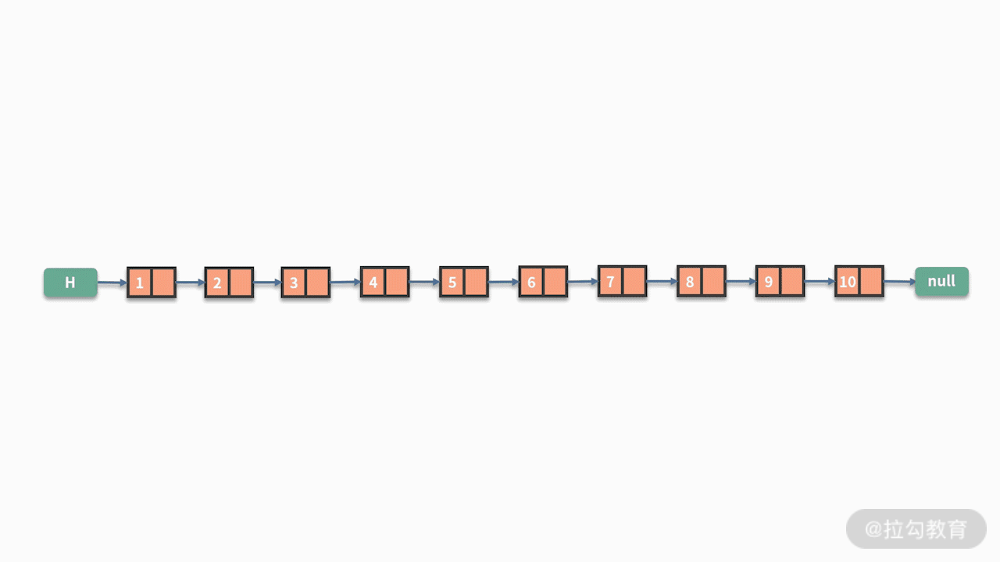
- 第二种情况是按照具体的成绩来查找。
同样，假设在一个链表中，存储了 10 个同学的考试成绩。现在要查找出是否有人得分为 95 分。链表的价值在于用指针按照顺序连接了数据结点，但对于每个结点的数值则没有任何整合。当需要按照数值的条件进行查找时，除了按照先后顺序进行遍历，别无他法。
因此，解决方案是，判断第一个结点的值是否等于 95：
- 如果是，则返回有人得分为 95 分；
- 如果不是，则需要通过指针去判断下一个结点的值是否等于 95。以此类推，直到把所有结点都访问完。
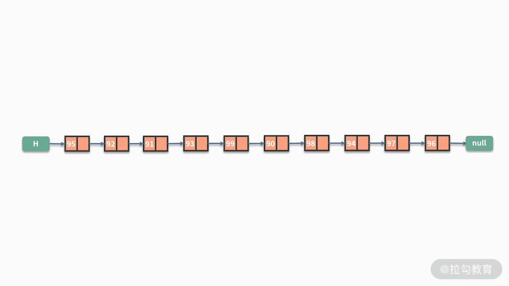

根据这里的分析不难发现，链表在新增、删除数据都比较容易，可以在 O(1) 的时间复杂度内完成。但对于查找，不管是按照位置的查找还是按照数值条件的查找，都需要对全部数据进行遍历。这显然就是 O(n) 的时间复杂度。
虽然链表在新增和删除数据上有优势，但仔细思考就会发现，这个优势并不实用。这主要是因为，在新增数据时，通常会伴随一个查找的动作。例如，在第五个结点后，新增一个新的数据结点，那么执行的操作就包含两个步骤：
- 第一步，查找第五个结点；
- 第二步，再新增一个数据结点。整体的复杂度就是 O(n) + O(1)。
根据我们前面所学的复杂度计算方法，这也等同于 O(n) 的时间复杂度。线性表真正的价值在于，它对数据的存储方式是按照顺序的存储。如果数据的元素个数不确定，且需要经常进行数据的新增和删除时，那么链表会比较合适。如果数据元素大小确定，删除插入的操作并不多，那么数组可能更适合些。
关于数组的知识，我们在后续的课程中会详细展开。
线性表案例
关于线性表，最高频的问题都会围绕数据顺序的处理。我们在这里给出一些例子来帮助你更好地理解。
例 1，链表的翻转。给定一个链表，输出翻转后的链表。例如，输入1 ->2 -> 3 -> 4 ->5，输出 5 -> 4 -> 3 -> 2 -> 1。
我们来仔细看一下这个问题的难点在哪里，这里有两种情况：
- 如果是数组的翻转，这会非常容易。原因在于，数组在连续的空间进行存储，可以直接求解出数组的长度。而且，数组可以通过索引值去查找元素，然后对相应的数据进行交换操作而完成翻转。
- 但对于某个单向链表，它的指针结构造成了它的数据通路有去无回，一旦修改了某个指针，后面的数据就会造成失联的状态。为了解决这个问题，我们需要构造三个指针 prev、curr 和 next，对当前结点、以及它之前和之后的结点进行缓存，再完成翻转动作。具体如下图所示：
while(curr){
next = curr.next;
curr.next = prev；
prev = curr;
curr = next;
}

例 2，给定一个奇数个元素的链表，查找出这个链表中间位置的结点的数值。
这个问题也是利用了链表的长度无法直接获取的不足做文章，解决办法如下：
- 一个暴力的办法是，先通过一次遍历去计算链表的长度，这样我们就知道了链表中间位置是第几个。接着再通过一次遍历去查找这个位置的数值。
- 除此之外，还有一个巧妙的办法，就是利用快慢指针进行处理。其中快指针每次循环向后跳转两次，而慢指针每次向后跳转一次。如下图所示。
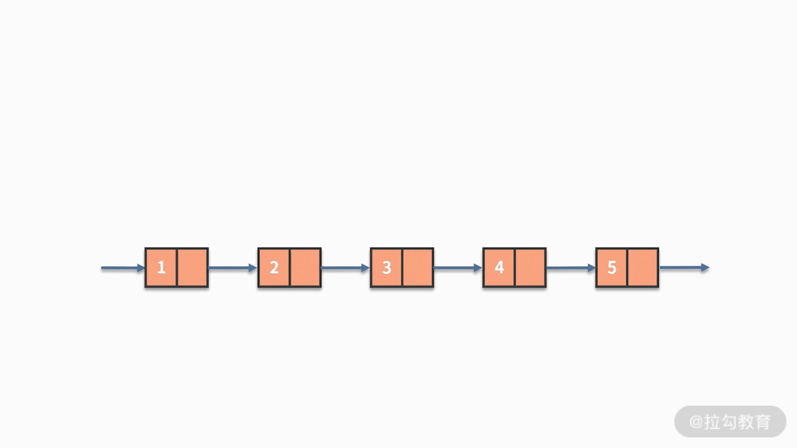
while(fast && fast.next && fast.next.next){
fast = fast.next.next;
slow = slow.next;
}
例 3，判断链表是否有环。如下图所示，这就是一个有环的链表。
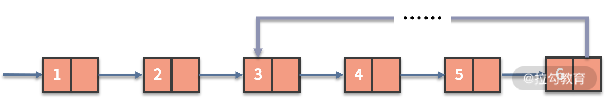
链表的快慢指针方法，在很多链表操作的场景下都非常适用，对于这个问题也是一样。
假设链表有环，这个环里面就像是一个跑步赛道的操场一样。经过多次循环之后，快指针和慢指针都会进入到这个赛道中，就好像两个跑步选手在比赛。#加动图#快指针每次走两格，而慢指针每次走一格，相对而言，快指针每次循环会多走一步。这就意味着：
- 如果链表存在环，快指针和慢指针一定会在环内相遇，即 fast == slow 的情况一定会发生。
- 反之，则最终会完成循环，二者从未相遇。
根据这个性质我们就能对链表是否有环进行准确地判断了。如下图所示：

总结
好的，这节课的内容就到这里了。这一节的内容主要围绕线性表的原理、线性表对于数据的增删查操作展开。线性链表结构的每个结点，由数据的数值和指向下一个元素的指针构成。根据结构组合方式的不同，除了单向链表以外，还有双向链表、循环链表以及双向循环链表等变形。
经过我们的分析，链表在增、删方面比较容易实现，可以在 O(1) 的时间复杂度内完成。但对于查找，不管是按照位置的查找还是按照数值条件的查找，都需要对全部数据进行遍历。
线性表的价值在于，它对数据的存储方式是按照顺序的存储。当数据的元素个数不确定，且需要经常进行数据的新增和删除时，那么链表会比较合适。链表的翻转、快慢指针的方法，是你必须掌握的内容。
练习题
最后我们留一道课后练习题。给定一个含有 n 个元素的链表，现在要求每 k 个节点一组进行翻转，打印翻转后的链表结果。其中，k 是一个正整数，且可被 n 整除。
例如，链表为 1 -> 2 -> 3 -> 4 -> 5 -> 6，k = 3，则打印 321654。我们给出一些提示，这个问题需要使用到链表翻转的算法。
05 栈：后进先出的线性表，如何实现增删查？
通过前面课时的学习，相信你已经掌握了线性表的基本原理，以及如何完成线性表结构下的增删查操作。
线性表是使用非常广泛的一类数据结构，它对数据的顺序非常敏感，而且它对数据的增删操作非常灵活。在有序排列的数据中，可以灵活的执行增删操作，就好像是为排好队的数据增加了插队的入口。这既是灵活性也是缺陷，原因在于它的灵活性在某种程度上破坏了数据的原始顺序。在某些需要严格遵守数据处理顺序的场景下，我们就需要对线性表予以限制了。经过限制后的线性表，它们通常会被赋予一些新的名字。这一课时，我们就来学习其中一个限制后的线性表--栈。
栈是什么
你需要牢记一点，栈是一种特殊的线性表。栈与线性表的不同，体现在增和删的操作。具体而言，栈的数据结点必须后进先出。后进的意思是，栈的数据新增操作只能在末端进行，不允许在栈的中间某个结点后新增数据。先出的意思是，栈的数据删除操作也只能在末端进行，不允许在栈的中间某个结点后删除数据。
也就是说，栈的数据新增和删除操作只能在这个线性表的表尾进行，即在线性表的基础上加了限制。如下图所示：

因此，栈是一种后进先出的线性表。栈对于数据的处理，就像用砖头盖房子的过程。对于盖房子而言，新的砖头只能放在前一个砖头上面；而对于拆房子而言，我们需要从上往下拆砖头。
宏观上来看，与数组或链表相比，栈的操作更为受限，那为什么我们要用这种受限的栈呢？其实，单纯从功能上讲，数组或者链表可以替代栈。然而问题是，数组或者链表的操作过于灵活，这意味着，它们过多暴露了可操作的接口。这些没有意义的接口过多，当数据量很大的时候就会出现一些隐藏的风险。一旦发生代码 bug 或者受到攻击，就会给系统带来不可预知的风险。虽然栈限定降低了操作的灵活性，但这也使得栈在处理只涉及一端新增和删除数据的问题时效率更高。
举个实际的例子，浏览器都有页面前进和后退功能，这就是个很典型的后进先出的场景。假设你先后访问了五个页面，分别标记为 1、2、3、4、5。当前你在页面 5，如果执行两次后退，则退回到了页面 3，如果再执行一次前进，则到了页面 4。处理这里的页面链接存储问题，栈就应该是我们首选的数据结构。

栈既然是线性表，那么它也包含了表头和表尾。不过在栈结构中，由于其操作的特殊性，会对表头和表尾的名字进行改造。表尾用来输入数据，通常也叫作栈顶（top）；相应地，表头就是栈底（bottom）。栈顶和栈底是用来表示这个栈的两个指针。跟线性表一样，栈也有顺序表示和链式表示，分别称作顺序栈和链栈。
栈的基本操作
如何通过栈这个后进先出的线性表，来实现增删查呢？初始时，栈内没有数据，即空栈。此时栈顶就是栈底。当存入数据时，最先放入的数据会进入栈底。接着加入的数据都会放入到栈顶的位置。如果要删除数据，也只能通过访问栈顶的数据并删除。对于栈的新增操作，通常也叫作 push 或压栈。对于栈的删除操作，通常也叫作 pop 或出栈。对于压栈和出栈，我们分别基于顺序栈和链栈进行讨论。
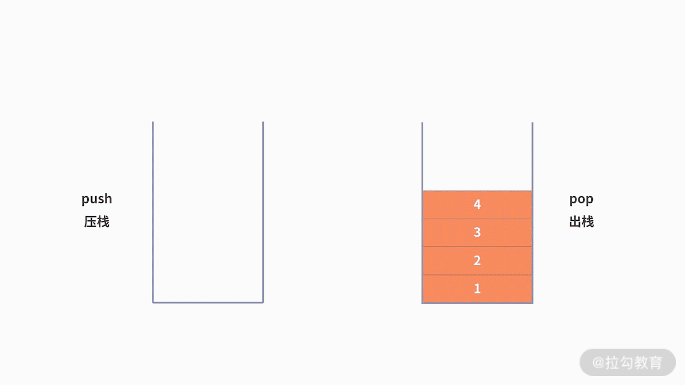
顺序栈
栈的顺序存储可以借助数组来实现。一般来说，会把数组的首元素存在栈底，最后一个元素放在栈顶。然后定义一个 top 指针来指示栈顶元素在数组中的位置。假设栈中只有一个数据元素，则 top = 0。一般以 top 是否为 -1 来判定是否为空栈。当定义了栈的最大容量为 StackSize 时，则栈顶 top 必须小于 StackSize。
当需要新增数据元素，即入栈操作时，就需要将新插入元素放在栈顶，并将栈顶指针增加 1。如下图所示：
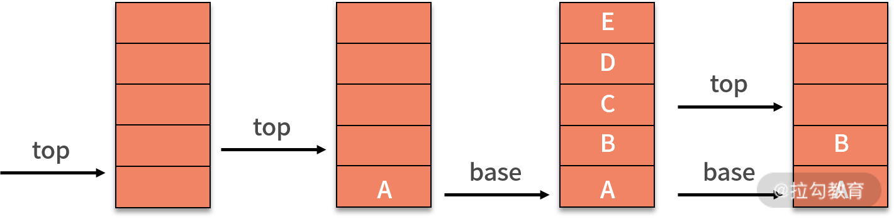
删除数据元素，即出栈操作，只需要 top - 1 就可以了。
对于查找操作，栈没有额外的改变，跟线性表一样，它也需要遍历整个栈来完成基于某些条件的数值查找。
链栈
关于链式栈，就是用链表的方式对栈的表示。通常，可以把栈顶放在单链表的头部，如下图所示。由于链栈的后进先出，原来的头指针就显得毫无作用了。因此，对于链栈来说，是不需要头指针的。相反，它需要增加指向栈顶的 top 指针，这是压栈和出栈操作的重要支持。

对于链栈，新增数据的压栈操作，与链表最后插入的新数据基本相同。需要额外处理的，就是栈的 top 指针。如下图所示，插入新的数据，则需要让新的结点指向原栈顶，即 top 指针指向的对象，再让 top 指针指向新的结点。

在链式栈中进行删除操作时，只能在栈顶进行操作。因此，将栈顶的 top 指针指向栈顶元素的 next 指针即可完成删除。对于链式栈来说，新增删除数据元素没有任何循环操作，其时间复杂度均为 O(1)。
对于查找操作，相对链表而言，链栈没有额外的改变，它也需要遍历整个栈来完成基于某些条件的数值查找。
通过分析你会发现，不管是顺序栈还是链栈，数据的新增、删除、查找与线性表的操作原理极为相似，时间复杂度完全一样，都依赖当前位置的指针来进行数据对象的操作。区别仅仅在于新增和删除的对象，只能是栈顶的数据结点。
栈的案例
接下来，我们一起来看两个栈的经典案例，从中你可以更深切地体会到栈所发挥出的价值。
例 1，给定一个只包括 '('，')'，'{'，'}'，'['，']' 的字符串，判断字符串是否有效。有效字符串需满足：左括号必须与相同类型的右括号匹配，左括号必须以正确的顺序匹配。例如，{ [ ( ) ( ) ] } 是合法的，而 { ( [ ) ] } 是非法的。
这个问题很显然是栈发挥价值的地方。原因是，在匹配括号是否合法时，左括号是从左到右依次出现，而右括号则需要按照“后进先出”的顺序依次与左括号匹配。因此，实现方案就是通过栈的进出来完成。
具体为，从左到右顺序遍历字符串。当出现左括号时，压栈。当出现右括号时，出栈。并且判断当前右括号，和被出栈的左括号是否是互相匹配的一对。如果不是，则字符串非法。当遍历完成之后，如果栈为空。则合法。如下图所示：
代码如下：
public static void main(String[] args) {
String s = "{[()()]}";
System.out.println(isLegal(s));
}
private static int isLeft(char c) {
if (c == '{' || c == '(' || c == '[') {
return 1;
} else {
return 2;
}
}
private static int isPair(char p, char curr) {
if ((p == '{' && curr == '}') || (p == '[' && curr == ']') || (p == '(' && curr == ')')) {
return 1;
} else {
return 0;
}
}
private static String isLegal(String s) {
Stack stack = new Stack();
for (int i = 0; i < s.length(); i++) {
char curr = s.charAt(i);
if (isLeft(curr) == 1) {
stack.push(curr);
} else {
if (stack.empty()) {
return "非法";
}
char p = (char) stack.pop();
if (isPair(p, curr) == 0) {
return "非法";
}
}
}
if (stack.empty()) {
return "合法";
} else {
return "非法";
}
}
例 2，浏览器的页面访问都包含了后退和前进功能，利用栈如何实现？
我们利用浏览器上网时，都会高频使用后退和前进的功能。比如，你按照顺序先后访问了 5 个页面，分别标记为 1、2、3、4、5。现在你不确定网页 5 是不是你要看的网页，需要回退到网页 3，则需要使用到两次后退的功能。假设回退后，你发现网页 4 有你需要的信息，那么就还需要再执行一次前进的操作。
为了支持前进、后退的功能，利用栈来记录用户历史访问网页的顺序信息是一个不错的选择。此时需要维护两个栈，分别用来支持后退和前进。当用户访问了一个新的页面，则对后退栈进行压栈操作。当用户后退了一个页面，则后退栈进行出栈，同时前进栈执行压栈。当用户前进了一个页面，则前进栈出栈，同时后退栈压栈。我们以用户按照 1、2、3、4、5、4、3、4 的浏览顺序为例，两个栈的数据存储过程，如下图所示：
总结
好的，这节课的内容就到这里了。这一节的内容主要围绕栈的原理、栈对于数据的增删查操作展开。
栈继承了线性表的优点与不足，是个限制版的线性表。限制的功能是，只允许数据从栈顶进出，这也就是栈后进先出的性质。不管是顺序栈还是链式栈，它们对于数据的新增操作和删除操作的时间复杂度都是 O(1）。而在查找操作中，栈和线性表一样只能通过全局遍历的方式进行，也就是需要 O(n) 的时间复杂度。
栈具有后进先出的特性，当你面对的问题需要高频使用新增、删除操作，且新增和删除操作的数据执行顺序具备后来居上的相反关系时，栈就是个不错的选择。例如，浏览器的前进和后退，括号匹配等问题。栈在代码的编写中有着很广泛的应用，例如，大多数程序运行环境都有的子程序的调用，函数的递归调用等。这些问题都具有后进先出的特性。关于递归，我们会在后续的课程单独进行分析。
练习题
下面我们给出本课时的练习题。在上一课时中，我们的习题是，给定一个包含 n 个元素的链表，现在要求每 k 个节点一组进行翻转，打印翻转后的链表结果。其中，k 是一个正整数，且 n 可被 k 整除。
例如，链表为 1 -> 2 -> 3 -> 4 -> 5 -> 6，k = 3，则打印 321654。仍然是这道题，我们试试用栈来解决它吧。
06 队列：先进先出的线性表，如何实现增删查？
通过前面课时的学习，你学会了数据结构中可以灵活增删数据的线性表。在需要严格遵守数据处理顺序的场景下，我们对线性表予以限制，那么就得到了后进先出的数据结构，栈。与之对应的还有一种限制的线性表，它遵循先进先出的性质，这就是队列。这一课时我们就来学习队列的增删查。
队列是什么
与栈相似，队列也是一种特殊的线性表，与线性表的不同之处也是体现在对数据的增和删的操作上。
队列的特点是先进先出：
- 先进，表示队列的数据新增操作只能在末端进行，不允许在队列的中间某个结点后新增数据;
- 先出，队列的数据删除操作只能在始端进行，不允许在队列的中间某个结点后删除数据。也就是说队列的增和删的操作只能分别在这个队列的队尾和队头进行，如下图所示：

与线性表、栈一样，队列也存在这两种存储方式，即顺序队列和链式队列：
- 顺序队列，依赖数组来实现，其中的数据在内存中也是顺序存储。
- 而链式队列，则依赖链表来实现，其中的数据依赖每个结点的指针互联，在内存中并不是顺序存储。链式队列，实际上就是只能尾进头出的线性表的单链表。
如下图所示，我们将队头指针指向链队列的头结点，队尾指针指向终端结点。不管是哪种实现方式，一个队列都依赖队头（front）和队尾（rear）两个指针进行唯一确定。

当队列为空时，front 和 rear 都指向头结点，如下图所示：

队列对于数据的增删查处理
队列从队头（front）删除元素，从队尾（rear）插入元素。对于一个顺序队列的数组来说，会设置一个 front 指针来指向队头，并设置另一个 rear 指针指向队尾。当我们不断进行插入删除操作时，头尾两个指针都会不断向后移动。
为了实现一个有 k 个元素的顺序存储的队列，我们需要建立一个长度比 k 大的数组，以便把所有的队列元素存储在数组中。队列新增数据的操作，就是利用 rear 指针在队尾新增一个数据元素。这个过程不会影响其他数据，时间复杂度为 O(1)，状态如下图所示：

队列删除数据的操作与栈不同。队列元素出口在队列头部，即下标为 0 的位置。当利用 front 指针删除一个数据时，队列中剩余的元素都需要向前移动一个位置，以保证队列头部下标为 0 的位置不为空，此时时间复杂度就变成 O(n) 了，状态如下图所示：
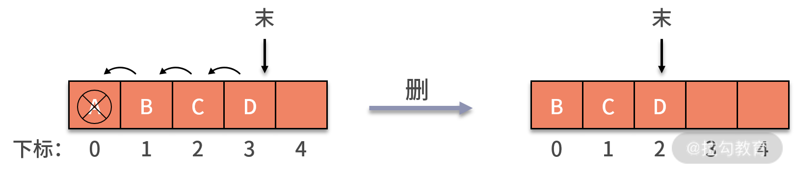
我们看到，front 指针删除数据的操作引发了时间复杂度过高的问题，那么我们该如何解决呢？我们可以通过移动指针的方式来删除数据，这样就不需要移动剩余的数据了。但是，这样的操作，也可能会产生数组越界的问题。接下来，我们来详细讨论一下。
我们一起来看一个利用顺序队列，持续新增数据和删除数据的例子。
初始时，定义了长度为 5 的数组，front 指针和 rear 指针相等，且都指向下标为 0 的位置，队列为空队列。如下图所示：

当 A、B、C、D 四条数据加入队列后，front 依然指向下标为 0 的位置，而 rear 则指向下标为 4 的位置。
当 A 出队列时，front 指针指向下标为 1 的位置，rear 保持不变。其后 E 加入队列，front 保持不变，rear 则移动到了数组以外，如下图所示：
假设这个列队的总个数不超过 5 个，但是目前继续接着入队，因为数组末尾元素已经被占用，再向后加，就会产生我们前面提到的数组越界问题。而实际上，我们列队的下标 0 的地方还是空闲的，这就产生了一种 “假溢出” 的现象。
这种问题在采用顺序存储的队列时，是一定要小心注意的。两个简单粗暴的解决方法就是：
- 不惜消耗 O(n) 的时间复杂度去移动数据；
- 或者开辟足够大的内存空间确保数组不会越界。
循环队列的数据操作
很显然上面的两个方法都不太友好。其实，数组越界问题可以通过队列的一个特殊变种来解决，叫作循环队列。
循环队列进行新增数据元素操作时，首先判断队列是否为满。如果不满，则可以将新元素赋值给队尾，然后让 rear 指针向后移动一个位置。如果已经排到队列最后的位置，则 rea r指针重新指向头部。
循环队列进行删除操作时，即出队列操作，需要判断队列是否为空，然后将队头元素赋值给返回值，front 指针向后移一个位置。如果已经排到队列最后的位置，就把 front 指针重新指向到头部。这个过程就好像钟表的指针转到了表盘的尾部 12 点的位置后，又重新回到了表盘头部 1 点钟的位置。这样就能在不开辟大量存储空间的前提下，不采用 O(n) 的操作，也能通过移动数据来完成频繁的新增和删除数据。
我们继续回到前面提到的例子中，如果是循环队列，rear 指针就可以重新指向下标为 0 的位置，如下图所示：

如果这时再新增了 F 进入队列，就可以放入在下标为 0 的位置，rear 指针指向下标为 1 的位置。这时的 rear 和 front 指针就会重合，指向下标为 1 的位置，如下图所示：
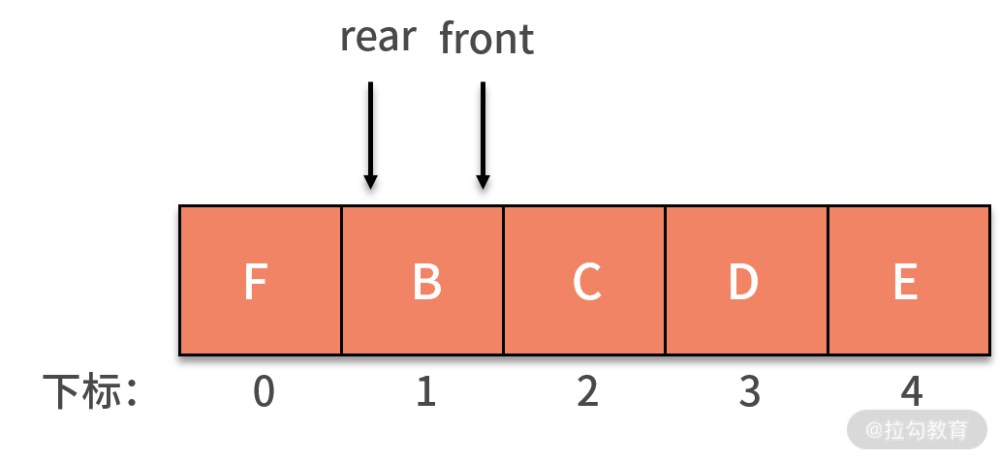
此时，又会产生新的问题，即当队列为空时，有 front 指针和 rear 指针相等。而现在的队列是满的，同样有 front 指针和 rear 指针相等。那么怎样判断队列到底是空还是满呢？常用的方法是，设置一个标志变量 flag 来区别队列是空还是满。
链式队列的数据操作
我们再看一下链式队列的数据操作。链式队列就是一个单链表，同时增加了 front 指针和 rear 指针。链式队列和单链表一样，通常会增加一个头结点，并另 front 指针指向头结点。头结点不存储数据，只是用来辅助标识。
链式队列进行新增数据操作时，将拥有数值 X 的新结点 s 赋值给原队尾结点的后继，即 rear.next。然后把当前的 s 设置为队尾结点，指针 rear 指向 s。如下图所示：

当链式队列进行删除数据操作时，实际删除的是头结点的后继结点。这是因为头结点仅仅用来标识队列，并不存储数据。因此，出队列的操作，就需要找到头结点的后继，这就是要删除的结点。接着，让头结点指向要删除结点的后继。
特别值得一提的是，如果这个链表除去头结点外只剩一个元素，那么删除仅剩的一个元素后，rear 指针就变成野指针了。这时候，需要让 rear 指针指向头结点。也许你前面会对头结点存在的意义产生怀疑，似乎没有它也不影响增删的操作。那么为何队列还特被强调要有头结点呢？
这主要是为了防止删除最后一个有效数据结点后， front 指针和 rear 指针变成野指针，导致队列没有意义了。有了头结点后，哪怕队列为空，头结点依然存在，能让 front 指针和 rear 指针依然有意义。

对于队列的查找操作，不管是顺序还是链式，队列都没有额外的改变。跟线性表一样，它也需要遍历整个队列来完成基于某些条件的数值查找。因此时间复杂度也是 O(n)。
队列的案例
我们来看一个关于用队列解决约瑟夫环问题。约瑟夫环是一个数学的应用问题，具体为，已知 n 个人（以编号 1，2，3...n 分别表示）围坐在一张圆桌周围。从编号为 k 的人开始报数，数到 m 的那个人出列；他的下一个人又从 1 开始报数，数到 m 的那个人又出列；依此规律重复下去，直到圆桌周围的人全部出列。这个问题的输入变量就是 n 和 m，即 n 个人和数到 m 的出列的人。输出的结果，就是 n 个人出列的顺序。
这个问题，用队列的方法实现是个不错的选择。它的结果就是出列的顺序，恰好满足队列对处理顺序敏感的前提。因此，求解方式也是基于队列的先进先出原则。解法如下：
- 先把所有人都放入循环队列中。注意这个循环队列的长度要大于或者等于 n。
- 从第一个人开始依次出队列，出队列一次则计数变量 i 自增。如果 i 比 m 小，则还需要再入队列。
- 直到i等于 m 的人出队列时，就不用再让这个人进队列了。而是放入一个用来记录出队列顺序的数组中。
- 直到数完 n 个人为止。当队列为空时，则表示队列中的 n 个人都出队列了，这时结束队列循环，输出数组内记录的元素。
至此，我们就通过循环队列解决了约瑟夫环问题。代码如下：

public static void main(String[] args) {
ring(10, 5);
}
public static void ring(int n, int m) {
LinkedList<Integer> q = new LinkedList<Integer>();
for (int i = 1; i <= n; i++) {
q.add(i);
}
int k = 2;
int element = 0;
int i = 0;
for (; i<k; i++) {
element = q.poll();
q.add(element);
}
i = 1;
while (q.size() > 0) {
element = q.poll();
if (i < m) {
q.add(element);
i++;
} else {
i = 1;
System.out.println(element);
}
}
}
总结
好的，这一节的内容就到这里了。本节课我们介绍了队列的基本原理和队列对于数据的增删查的操作。可以发现，队列与前一课时我们学习的栈的特性非常相似，队列也继承了线性表的优点与不足，是加了限制的线性表，队列的增和删的操作只能在这个线性表的头和尾进行。
在时间复杂度上，循环队列和链式队列的新增、删除操作都为 O(1)。而在查找操作中，队列和线性表一样只能通过全局遍历的方式进行，也就是需要 O(n) 的时间复杂度。在空间性能方面，循环队列必须有一个固定的长度，因此存在存储元素数量和空间的浪费问题，而链式队列不存在这种问题，所以在空间上，链式队列更为灵活一些。
通常情况下，在可以确定队列长度最大值时，建议使用循环队列。无法确定队列长度时，应考虑使用链式队列。队列具有先进先出的特点，很像现实中人们排队买票的场景。在面对数据处理顺序非常敏感的问题时，队列一定是个不错的技术选型。
07 数组：如何实现基于索引的查找？
通过前面几个课时的学习，我们了解了线性表、栈、队列的基本概念，至此，相信你已经掌握了这些数据处理的基本操作，能够熟练地完成线性表、栈、队列结构下的增删查操作。
由于栈和队列是特殊的线性表，本质上它们都可以被看作是一类基本结构。而数组则可以看成是线性表的一种推广，它属于另外一种基本的数据结构。这一课时，我们就来学习数组的概念以及如何用数组实现增删查的操作。
数组是什么
数组是数据结构中的最基本结构，几乎所有的程序设计语言都把数组类型设定为固定的基础变量类型。我们可以把数组理解为一种容器，它可以用来存放若干个相同类型的数据元素。
例如：
- 存放的数据是整数型的数组，称作整型数组；
- 存放的数据是字符型的数组，则称作字符数组；
- 另外还有一类数组比较特殊，它是数组的数组，也可以叫作二维数组。
如果用数学的方式来看，我们可以把普通的数组看成是一个向量，那么二维数组就是一个矩阵。不过，二维数组对数据的处理方式并没有太多特别之处。
数组可以把这些具有相同类型的元素，以一种不规则的顺序进行排列，这些排列好的同类数据元素的集合就被称为数组。
数组在内存中是连续存放的，数组内的数据，可以通过索引值直接取出得到。如下图所示，我们建立了一个简单的数组，数组中的每个数据位置都可以放入对应的数据内容。

数据元素 A、B 分别为数组的第一个元素和第二个元素，根据其对应位置分别放入数组空间的第一个和第二个位置。数组的索引值从 0 开始记录，因此，上图中数据 A 的索引值是 0，B 的索引值是 1。
实际上数组的索引就是对应数组空间，所以我们在进行新增、删除、查询操作的时候，完全可以根据代表数组空间位置的索引值进行。也就是说，只要记录该数组头部的第一个数据位置，然后累加空间位置即可。下面我们来具体讲一下如何通过数组来实现基于索引的新增、删除和查找操作。
数组的基本操作
数组在存储数据时是按顺序存储的，并且存储数据的内存也是连续的，这就造成了它具有增删困难、查找容易的特点。同时，栈和队列是加了限制的线性表，只能在特定的位置进行增删操作。相比之下，数组并没有这些限制，可以在任意位置增删数据，所以数组的增删操作会更为多样。下面我们来具体地介绍一下数组的增删查操作。
数组的新增操作
数组新增数据有两个情况：
- 第一种情况，在数组的最后增加一个新的元素。此时新增一条数据后，对原数据产生没有任何影响。可以直接通过新增操作，赋值或者插入一条新的数据即可。时间复杂度是 O(1)。
- 第二种情况，如果是在数组中间的某个位置新增数据，那么情况就完全不一样了。这是因为，新增了数据之后，会对插入元素位置之后的元素产生影响，具体为这些数据的位置需要依次向后挪动 1 个位置。
例如，对于某一个长度为 4 的数组，我们在第 2 个元素之后插入一个元素，那么修改后的数组中就包含了 5 个元素，其中第 1、第 2 个元素不发生变化，第 3 个元素是新来的元素，第 4、第 5 个元素则是原来第 3、第 4 个元素。这一波操作，就需要对一般的数据进行重新搬家。而这个搬家操作，与数组的数据量线性相关，因此时间复杂度是 O(n)。

数组的删除操作
数组删除数据也有两种情况：
- 第一种情况，在这个数组的最后，删除一个数据元素。由于此时删除一条数据后，对原数据没有产生任何影响。我们可以直接删除该数据即可，时间复杂度是 O(1)。
- 第二种情况，在这个数组的中间某个位置，删除一条数据。同样的，这两种情况的区别在于，删除数据之后，其他数据的位置是否发生改变。由于此时的情况和新增操作高度类似，我们就不再举例子了。
数组的查找操作
相比于复杂度较高的增删操作，数组的查找操作就方便一些了。由于索引的存在，数组基于位置的查找操作比较容易实现。我们可以索引值，直接在 O(1) 时间复杂度内查找到某个位置的元素。
例如，查找数组中第三个位置的元素，通过 a[2] 就可以直接取出来。但对于链表系的数据结构，是没有这个优势的。
不过，另外一种基于数值的查找方法，数组就没有什么优势了。例如，查找数值为 9 的元素是否出现过，以及如果出现过，索引值是多少。这样基于数值属性的查找操作，也是需要整体遍历一遍数组的。和链表一样，都需要 O(n) 的时间复杂度。
上面的操作，在很多高级编程语言都已经封装了响应的函数方法，是不需要自己独立开发的。例如，新增系列的 push(), unshift(), concat() 和 splice()，删除系列的 pop(),shift() 和slice()，查找系列的 indexOf() 和 lastIndexOf() 等等。不过别被迷惑，即使是封装好了的函数，其时间复杂度也不会发生改变。依然是我们上面分析的结果，这些底层原理是需要你理解并掌握的。
数组增删查操作的特点
通过以上内容的学习，我们发现数组增删查的操作相比栈、队列来说，方法更多，操作更为灵活，这都是由它们数据结构的特点决定的。接下来，我们来归纳一下数组增删查的时间复杂度。
- 增加：若插入数据在最后，则时间复杂度为 O(1)；如果中间某处插入数据，则时间复杂度为 O(n)。
- 删除：对应位置的删除，扫描全数组，时间复杂度为 O(n)。
- 查找：如果只需根据索引值进行一次查找，时间复杂度是 O(1)。但是要在数组中查找一个数值满足指定条件的数据，则时间复杂度是 O(n)。
实际上数组是一种相当简单的数据结构，其增删查的时间复杂度相对于链表来说整体上是更优的。那么链表存在的价值又是什么呢？
- 首先，链表的长度是可变的，数组的长度是固定的，在申请数组的长度时就已经在内存中开辟了若干个空间。如果没有引用 ArrayList 时，数组申请的空间永远是我们在估计了数据的大小后才执行，所以在后期维护中也相当麻烦。
- 其次，链表不会根据有序位置存储，进行插入数据元素时，可以用指针来充分利用内存空间。数组是有序存储的，如果想充分利用内存的空间就只能选择顺序存储，而且需要在不取数据、不删除数据的情况下才能实现。
数组的案例
例题，假设数组存储了 5 个评委对 1 个运动员的打分，且每个评委的打分都不相等。现在需要你：
- 用数组按照连续顺序保存，去掉一个最高分和一个最低分后的 3 个打分样本；
- 计算这 3 个样本的平均分并打印。
要求是，不允许再开辟 O(n) 空间复杂度的复杂数据结构。
我们先分析一下题目：第一个问题，要输出删除最高分和最低分后的样本，而且要求是不允许再开辟复杂空间。因此，我们只能在原数组中找到最大值和最小值并删除。第二个问题，基于删除后得到的数组，计算平均值。所以解法如下：
- 数组一次遍历，过程中记录下最小值和最大值的索引。对应下面代码的第 7 行到第 16 行。时间复杂度是 O(n)。
- 执行两次基于索引值的删除操作。除非极端情况，否则时间复杂度仍然是 O(n)。对应于下面代码的第 18 行到第 30 行。
- 计算删除数据后的数组元素的平均值。对应于下面代码的第 32 行到第 37 行。时间复杂度是 O(n)。
因此，O(n) + O(n) + O(n) 的结果仍然是 O(n)。
代码如下：
public void getScore() {
int a[] = { 2, 1, 4, 5, 3 };
max_inx = -1;
max_val = -1;
min_inx= -1;
min_val = 99;
for (int i = 0; i < a.length; i++) {
if (a[i] > max_val) {
max_val = a[i];
max_inx = i;
}
if (a[i] < min_val) {
min_val = a[i];
min_inx = i;
}
}
inx1 = max_inx;
inx2 = min_inx;
if (max_inx < min_inx){
inx1 = min_inx;
inx2 = max_inx;
}
for (int i = inx1; i < a.length-1; i++) {
a[i] = a[i+1];
}
for (int i = inx2; i < a.length-1; i++) {
a[i] = a[i+1];
}
sumscore = 0;
for (int i = 0; i < a.length-2; i++) {
sumscore += a[i];
}
avg = sumscore/3.0;
System.out.println(avg);
}
总结
本节内容主要讲解了数组的原理和特性，以及数组的增删查的操作方法。由于数组中没有栈和队列那样对于线性表的限制，所以增删查操作变得灵活很多，代码实现的方法也更多样，所以我们要根据实际需求选择适合的方法进行操作。
在实际操作中，我们还要注意根据数组的优缺点合理区分数组和链表的使用。数组定义简单，访问方便，但在数组中所有元素类型必须相同，数组的最大长度必须在定义时给出，数组使用的内存空间必须连续等。
相对而言，数组更适合在数据数量确定，即较少甚至不需要使用新增数据、删除数据操作的场景下使用，这样就有效地规避了数组天然的劣势。在数据对位置敏感的场景下，比如需要高频根据索引位置查找数据时，数组就是个很好的选择了。
练习题
下面，我们给出一道练习题。给定一个排序数组，你需要在原地删除重复出现的元素，使得每个元素只出现一次，返回移除后的数组和新的长度，你不需要考虑数组中超出新长度后面的元素。要求，空间复杂度为 O(1)，即不要使用额外的数组空间。
例如，给定数组 nums = [1,1,2]，函数应该返回新的长度 2，并且原数组 nums 的前两个元素被修改为 1, 2。 又如，给定 nums = [0,0,1,1,1,2,2,3,3,4]，函数应该返回新的长度 5，并且原数组 nums 的前五个元素被修改为 0, 1, 2, 3, 4。
08 字符串：如何正确回答面试中高频考察的字符串匹配算法？
这一节我们来讲字符串和它的相关操作。
字符串是什么
字符串（string） 是由 n 个字符组成的一个有序整体（ n >= 0 ）。例如，s = "BEIJING" ，s 代表这个串的串名，BEIJING 是串的值。这里的双引号不是串的值，作用只是为了将串和其他结构区分开。字符串的逻辑结构和线性表很相似，不同之处在于字符串针对的是字符集，也就是字符串中的元素都是字符，线性表则没有这些限制。
在实际操作中，我们经常会用到一些特殊的字符串：
- 空串，指含有零个字符的串。例如，s = ""，书面中也可以直接用 Ø 表示。
- 空格串，只包含空格的串。它和空串是不一样的，空格串中是有内容的，只不过包含的是空格，且空格串中可以包含多个空格。例如，s = " "，就是包含了 3 个空格的字符串。
- 子串，串中任意连续字符组成的字符串叫作该串的子串。
- 原串通常也称为主串。例如：a = "BEI"，b = "BEIJING"，c = "BJINGEI" 。
- 对于字符串 a 和 b 来说，由于 b 中含有字符串 a ，所以可以称 a 是 b 的子串，b 是 a 的主串；
- 而对于 c 和 a 而言，虽然 c 中也含有 a 的全部字符，但不是连续的 "BEI" ，所以串 c 和 a 没有任何关系。
当要判断两个串是否相等的时候，就需要定义相等的标准了。只有两个串的串值完全相同，这两个串才相等。根据这个定义可见，即使两个字符串包含的字符完全一致，它们也不一定是相等的。例如 b = "BEIJING"，c = "BJINGEI"，则 b 和 c 并不相等。
字符串的存储结构与线性表相同，也有顺序存储和链式存储两种。
- 字符串的顺序存储结构，是用一组地址连续的存储单元来存储串中的字符序列，一般是用定长数组来实现。有些语言会在串值后面加一个不计入串长度的结束标记符，比如 \0 来表示串值的终结。
- 字符串的链式存储结构，与线性表是相似的，但由于串结构的特殊性（结构中的每个元素数据都是一个字符），如果也简单地将每个链结点存储为一个字符，就会造成很大的空间浪费。因此，一个结点可以考虑存放多个字符，如果最后一个结点未被占满时，可以使用 "#" 或其他非串值字符补全，如下图所示：

在链式存储中，每个结点设置字符数量的多少，与串的长度、可以占用的存储空间以及程序实现的功能相关。
- 如果字符串中包含的数据量很大，但是可用的存储空间有限，那么就需要提高空间利用率，相应地减少结点数量。
- 而如果程序中需要大量地插入或者删除数据，如果每个节点包含的字符过多，操作字符就会变得很麻烦，为实现功能增加了障碍。
因此，串的链式存储结构除了在连接串与串操作时有一定的方便之外，总的来说，不如顺序存储灵活，在性能方面也不如顺序存储结构好。
字符串的基本操作
字符串和线性表的操作很相似，但由于字符串针对的是字符集，所有元素都是字符，因此字符串的基本操作与线性表有很大差别。线性表更关注的是单个元素的操作，比如增删查一个元素，而字符串中更多关注的是查找子串的位置、替换等操作。接下来我们以顺序存储为例，详细介绍一下字符串对于另一个字符串的增删查操作。
字符串的新增操作
字符串的新增操作和数组非常相似，都牵涉对插入字符串之后字符的挪移操作，所以时间复杂度是 O(n)。
例如，在字符串 s1 = "123456" 的正中间插入 s2 = "abc"，则需要让 s1 中的 "456" 向后挪移 3 个字符的位置，再让 s2 的 "abc" 插入进来。很显然，挪移的操作时间复杂度是 O(n)。不过，对于特殊的插入操作时间复杂度也可以降低为 O(1)。这就是在 s1 的最后插入 s2，也叫作字符串的连接，最终得到 "123456abc"。
字符串的删除操作
字符串的删除操作和数组同样非常相似，也可能会牵涉删除字符串后字符的挪移操作，所以时间复杂度是 O(n)。
例如，在字符串 s1 = "123456" 的正中间删除两个字符 "34"，则需要删除 "34" 并让 s1 中的 "56" 向前挪移 2 个字符的位置。很显然，挪移的操作时间复杂度是 O(n)。不过，对于特殊的插入操作时间复杂度也可以降低为 O(1)。这就是在 s1 的最后删除若干个字符，不牵涉任何字符的挪移。
字符串的查找操作
字符串的查找操作，是反映工程师对字符串理解深度的高频考点，这里需要你格外注意。
例如，字符串 s = "goodgoogle"，判断字符串 t = "google" 在 s 中是否存在。需要注意的是，如果字符串 t 的每个字符都在 s 中出现过，这并不能证明字符串 t 在 s 中出现了。当 t = "dog" 时，那么字符 "d"、"o"、"g" 都在 s 中出现过，但他们并不连在一起。
那么我们如何判断一个子串是否在字符串中出现过呢？这个问题也被称作子串查找或字符串匹配，接下来我们来重点分析。
子串查找（字符串匹配）
首先，我们来定义两个概念，主串和模式串。我们在字符串 A 中查找字符串 B，则 A 就是主串，B 就是模式串。我们把主串的长度记为 n，模式串长度记为 m。由于是在主串中查找模式串，因此，主串的长度肯定比模式串长，n>m。因此，字符串匹配算法的时间复杂度就是 n 和 m 的函数。
假设要从主串 s = "goodgoogle" 中找到 t = "google" 子串。根据我们的思考逻辑，则有：
- 首先，我们从主串 s 第 1 位开始，判断 s 的第 1 个字符是否与 t 的第 1 个字符相等。
- 如果不相等，则继续判断主串的第 2 个字符是否与 t 的第1 个字符相等。直到在 s 中找到与 t 第一个字符相等的字符时，然后开始判断它之后的字符是否仍然与 t 的后续字符相等。
- 如果持续相等直到 t 的最后一个字符，则匹配成功。
- 如果发现一个不等的字符，则重新回到前面的步骤中，查找 s 中是否有字符与 t 的第一个字符相等。
- 如下图所示，s 的第1 个字符和 t 的第 1 个字符相等，则开始匹配后续。直到发现前三个字母都匹配成功，但 s 的第 4 个字母匹配失败，则回到主串继续寻找和 t 的第一个字符相等的字符。
- 如下图所示，这时我们发现主串 s 第 5 位开始相等，并且随后的 6 个字母全匹配成功，则找到结果。

这种匹配算法需要从主串中找到跟模式串的第 1 个字符相等的位置，然后再去匹配后续字符是否与模式串相等。显然，从实现的角度来看，需要两层的循环。第一层循环，去查找第一个字符相等的位置，第二层循环基于此去匹配后续字符是否相等。因此，这种匹配算法的时间复杂度为 O(nm)。其代码如下：
public void s1() {
String s = "goodgoogle";
String t = "google";
int isfind = 0;
for (int i = 0; i < s.length() - t.length() + 1; i++) {
if (s.charAt(i) == t.charAt(0)) {
int jc = 0;
for (int j = 0; j < t.length(); j++) {
if (s.charAt(i + j) != t.charAt(j)) {
break;
}
jc = j;
}
if (jc == t.length() - 1) {
isfind = 1;
}
}
}
System.out.println(isfind);
}
字符串匹配算法的案例
最后我们给出一道面试中常见的高频题目，这也是对字符串匹配算法进行拓展，从而衍生出的问题，即查找出两个字符串的最大公共字串。
假设有且仅有 1 个最大公共子串。比如，输入 a = "13452439"， b = "123456"。由于字符串 "345" 同时在 a 和 b 中出现，且是同时出现在 a 和 b 中的最长子串。因此输出 "345"。
对于这个问题其实可以用动态规划的方法来解决，关于动态规划，我们会在后续的课程会讲到，所以在这里我们沿用前面的匹配算法。
假设字符串 a 的长度为 n，字符串 b 的长度为 m，可见时间复杂度是 n 和 m 的函数。
- 首先，你需要对于字符串 a 和 b 找到第一个共同出现的字符，这跟前面讲到的匹配算法在主串中查找第一个模式串字符一样。
- 然后，一旦找到了第一个匹配的字符之后，就可以同时在 a 和 b 中继续匹配它后续的字符是否相等。这样 a 和 b 中每个互相匹配的字串都会被访问一遍。全局还要维护一个最长子串及其长度的变量，就可以完成了。
从代码结构来看，第一步需要两层的循环去查找共同出现的字符，这就是 O(nm)。一旦找到了共同出现的字符之后，还需要再继续查找共同出现的字符串，这也就是又嵌套了一层循环。可见最终的时间复杂度是 O(nmm)，即 O(nm²)。代码如下：
public void s2() {
String a = "123456";
String b = "13452439";
String maxSubStr = "";
int max_len = 0;
for (int i = 0; i < a.length(); i++) {
for (int j = 0; j < b.length(); j++){
if (a.charAt(i) == b.charAt(j)){
for (int m=i, n=j; m<a.length()&&n<b.length(); m++,n++) {
if (a.charAt(m) != b.charAt(n)){
break;
}
if (max_len < m-i+1){
max_len = m-i+1;
maxSubStr = a.substring(i, m+1);
}
}
}
}
}
System.out.println(maxSubStr);
}
总结
这节课我们介绍了字符串匹配算法，它在平时代码编写中都比较常用。
字符串的逻辑结构和线性表极为相似，区别仅在于串的数据对象约束为字符集。但是，字符串的基本操作和线性表有很大差别：
- 在线性表的基本操作中，大多以“单个元素”作为操作对象；
- 在字符串的基本操作中，通常以“串的整体”作为操作对象；
- 字符串的增删操作和数组很像，复杂度也与之一样。但字符串的查找操作就复杂多了，它是参加面试、笔试常常被考察的内容。
练习题
最后我们给出一道练习题。给定一个字符串，逐个翻转字符串中的每个单词。例如，输入: "the sky is blue"，输出: "blue is sky the"。
09 树和二叉树：分支关系与层次结构下，如何有效实现增删查？
前面课时我们学习了线性表、栈、队列和数组。栈、队列都是特殊的线性表，数组可以看成是线性表的一种推广。根据学习，我们知道了这几种数据结构，在对数据的增删查操作上各有千秋。这一课时再来学习另一种从形式上看上去差异比较大的数据结构，树，以及如何用树和二叉树实现对数据的增删查的操作。
树是什么
树是由结点和边组成的，不存在环的一种数据结构。通过下图，我们就可以更直观的认识树的结构。
树满足递归定义的特性。也就是说，如果一个数据结构是树结构，那么剔除掉根结点后，得到的若干个子结构也是树，通常称作子树。
在一棵树中，根据结点之间层次关系的不同，对结点的称呼也有所不同。我们来看下面这棵树，如下图所示:
- A 结点是 B 结点和 C 结点的上级，则 A 就是 B 和 C 的父结点，B 和 C 是 A 的子结点。
- B 和 C 同时是 A 的“孩子”，则可以称 B 和 C 互为兄弟结点。
- A 没有父结点，则可以称 A 为根结点。
- G、H、I、F 结点都没有子结点，则称 G、H、I、F 为叶子结点。
当有了一棵树之后，还需要用深度、层来描述这棵树中结点的位置。结点的层次从根结点算起，根为第一层，根的“孩子”为第二层，根的“孩子”的“孩子”为第三层，依此类推。树中结点的最大层次数，就是这棵树的树深（称为深度，也称为高度）。如下图所示，就是一棵深度为 4 的树。
二叉树是什么
在树的大家族中，有一种被高频使用的特殊树，它就是二叉树。在二叉树中，每个结点最多有两个分支，即每个结点最多有两个子结点，分别称作左子结点和右子结点。
在二叉树中，有下面两个特殊的类型，如下图所示：
- 满二叉树，定义为除了叶子结点外，所有结点都有 2 个子结点。
- 完全二叉树，定义为除了最后一层以外，其他层的结点个数都达到最大，并且最后一层的叶子结点都靠左排列。
你可能会困惑，完全二叉树看上去并不完全，但为什么这样称呼它呢？这其实和二叉树的存储有关系。存储二叉树有两种办法，一种是基于指针的链式存储法，另一种是基于数组的顺序存储法。
- 链式存储法，也就是像链表一样，每个结点有三个字段，一个存储数据，另外两个分别存放指向左右子结点的指针，如下图所示：
- 顺序存储法，就是按照规律把结点存放在数组里，如下图所示，为了方便计算，我们会约定把根结点放在下标为 1 的位置。随后，B 结点存放在下标为 2 的位置，C 结点存放在下标为 3 的位置，依次类推。

根据这种存储方法，我们可以发现如果结点 X 的下标为 i，那么 X 的左子结点总是存放在 2 * i 的位置，X 的右子结点总是存放在 2 * i + 1 的位置。
之所以称为完全二叉树，是从存储空间利用效率的视角来看的。对于一棵完全二叉树而言，仅仅浪费了下标为 0 的存储位置。而如果是一棵非完全二叉树，则会浪费大量的存储空间。
我们来看如下图所示的非完全二叉树，它既需要保留出 5 和 6 的位置。同时，还需要保留 5 的两个子结点 10 和 11 的位置，以及 6 的两个子结点 12 和 13 的位置。这样的二叉树，没有完全利用好数组的存储空间。
树的基本操作
接下来，我们以二叉树为例介绍树的操作，其他类型的树的操作与二叉树基本相似。
可以发现，我们以前学到的数据结构都是“一对一”的关系，即前面的数据只跟下面的一个数据产生了连接关系，例如链表、栈、队列等。而树结构则是“一对多”的关系，即前面的父结点，跟下面若干个子结点产生了连接关系。
在前面的课时中我们提到过，要在数据结构中，查找具有某个数值特性的数据需要遍历每一条数据。这在“一对一”的结构中，直接按顺序访问就好了。可是，树是“一对多”的关系，那么我们该如何进行数据的遍历，才能保证每条数据都会被访问一次且没有遗漏呢？我们只有解决了遍历问题，才能通过树来进行数据的增删查操作。
其实，遍历一棵树，有非常经典的三种方法，分别是前序遍历、中序遍历、后序遍历。这里的序指的是父结点的遍历顺序，前序就是先遍历父结点，中序就是中间遍历父结点，后序就是最后遍历父结点。不管哪种遍历，都是通过递归调用完成的。如下图所示：
- 前序遍历，对树中的任意结点来说，先打印这个结点，然后前序遍历它的左子树，最后前序遍历它的右子树。
- 中序遍历，对树中的任意结点来说，先中序遍历它的左子树，然后打印这个结点，最后中序遍历它的右子树。
- 后序遍历，对树中的任意结点来说，先后序遍历它的左子树，然后后序遍历它的右子树，最后打印它本身。

通过前面的介绍，相信你已经了解了二叉树的三种遍历方式，下面我们再来分析一下代码的实现过程，如下所示：
// 先序遍历
public static void preOrderTraverse(Node node) {
if (node == null)
return;
System.out.print(node.data + " ");
preOrderTraverse(node.left);
preOrderTraverse(node.right);
}
// 中序遍历
public static void inOrderTraverse(Node node) {
if (node == null)
return;
inOrderTraverse(node.left);
System.out.print(node.data + " ");
inOrderTraverse(node.right);
}
// 后序遍历
public static void postOrderTraverse(Node node) {
if (node == null)
return;
postOrderTraverse(node.left);
postOrderTraverse(node.right);
System.out.print(node.data + " ");
}
不难发现，二叉树遍历过程中，每个结点都被访问了一次，其时间复杂度是 O(n)。接着，在找到位置后，执行增加和删除数据的操作时，我们只需要通过指针建立连接关系就可以了。对于没有任何特殊性质的二叉树而言，抛开遍历的时间复杂度以外，真正执行增加和删除操作的时间复杂度是 O(1)。树数据的查找操作和链表一样，都需要遍历每一个数据去判断，所以时间复杂度是 O(n)。
我们上面讲到二叉树的增删查操作很普通，时间复杂度与链表并没有太多差别。但当二叉树具备一些特性的时候，则可以利用这些特性实现时间复杂度的降低。接下来，我们详细介绍二叉查找树的特性。
二叉查找树的特性
二叉查找树（也称作二叉搜索树）具备以下几个的特性：
- 在二叉查找树中的任意一个结点，其左子树中的每个结点的值，都要小于这个结点的值。
- 在二叉查找树中的任意一个结点，其右子树中每个结点的值，都要大于这个结点的值。
- 在二叉查找树中，会尽可能规避两个结点数值相等的情况。
- 对二叉查找树进行中序遍历，就可以输出一个从小到大的有序数据队列。如下图所示，中序遍历的结果就是 10、13、15、16、20、21、22、26。

二叉查找树的查找操作
在利用二叉查找树执行查找操作时，我们可以进行以下判断：
- 首先判断根结点是否等于要查找的数据，如果是就返回。
- 如果根结点大于要查找的数据，就在左子树中递归执行查找动作，直到叶子结点。
- 如果根结点小于要查找的数据，就在右子树中递归执行查找动作，直到叶子结点。
这样的“二分查找”所消耗的时间复杂度就可以降低为 O(logn)。关于二分查找，我们会在后续的分治法一讲中详细讲述。
二叉查找树的插入操作
在二叉查找树执行插入操作也很简单。从根结点开始，如果要插入的数据比根结点的数据大，且根结点的右子结点不为空，则在根结点的右子树中继续尝试执行插入操作。直到找到为空的子结点执行插入动作。
如下图所示，如果要插入数据 X 的值为 14，则需要判断 X 与根结点的大小关系：
- 由于 14 小于 16，则聚焦在其左子树，继续判断 X 与 13 的关系。
- 由于 14 大于 13，则聚焦在其右子树，继续判断 X 与15 的关系。
- 由于 14 小于 15，则聚焦在其左子树。
因为此时左子树为空，则直接通过指针建立 15 结点的左指针指向结点 X 的关系，就完成了插入动作。
二叉查找树插入数据的时间复杂度是 O(logn)。但这并不意味着它比普通二叉树要复杂。原因在于这里的时间复杂度更多是消耗在了遍历数据去找到查找位置上，真正执行插入动作的时间复杂度仍然是 O(1)。
二叉查找树的删除操作会比较复杂，这是因为删除完某个结点后的树，仍然要满足二叉查找树的性质。我们分为下面三种情况讨论。
- 情况一，如果要删除的结点是某个叶子结点，则直接删除，将其父结点指针指向 null 即可。
- 情况二，如果要删除的结点只有一个子结点，只需要将其父结点指向的子结点的指针换成其子结点的指针即可。
- 情况三，如果要删除的结点有两个子结点，则有两种可行的操作方式。
第一种，找到这个结点的左子树中最大的结点，替换要删除的结点。
第二种，找到这个结点的右子树中最小的结点，替换要删除的结点。
树的案例
我们来看一道例题:
输入一个字符串，判断它在已有的字符串集合中是否出现过?（假设集合中没有某个字符串与另一个字符串拥有共同前缀且完全包含的特殊情况，例如 deep 和 dee。）如，已有字符串集合包含 6 个字符串分别为，cat, car, city, dog,door, deep。输入 cat，输出 true；输入 home，输出 false。
我们假设采用最暴力的办法，估算一下时间复杂度。假设字符串集合包含了 n 个字符串，其中的字符串平均长度为 m。那么新来的一个字符串，需要与每个字符串的每个字符进行匹配。则时间复杂度为 O(nm)。
但在 nm 的复杂度中，显然存在很多的无效匹配。例如，输入 home 时，6 个字符串都没有 h 开头的，则不需要进行后续的匹配。因此，如果可以通过对字符前缀进行处理，就可以最大限度地减少无谓的字符串比较，从而提高查询效率。这就是“用空间换时间”的思想，再利用共同前缀来提高查询效率。
其实，这个问题利用树结构也可以完成。我们对字符串建立一个的树结构，如下图所示，它将字符串集合的前缀进行合并，每个根结点到叶子结点的链条就是一个字符串。
这个树结构也称作 Trie 树，或字典树。它具有三个特点：
- 第一，根结点不包含字符；
- 第二，除根结点外每一个结点都只包含一个字符；
- 第三，从根结点到某一叶子结点，路径上经过的字符连接起来，即为集合中的某个字符串。
这个问题的解法可以拆解为以下两个步骤：
- 第一步，根据候选字符串集合，建立字典树。这需要使用数据插入的动作。
- 第二步，对于一个输入字符串，判断它能否在这个树结构中走到叶子结点。如果能，则出现过。
总结
本课时的内容围绕着不同种类树的原理、二叉树对于数据的增删查操作展开。要想利用二叉树实现增删查操作，你需要熟练掌握二叉树的三种遍历方式。遍历的时间复杂度是 O(n)。有了遍历方式之后，你可以完成在指定位置的数据增删操作。增删操作的时间复杂度都是 O(1)。
对于查找操作，如果是普通二叉树，则查找的时间复杂度和遍历一样，都是 O(n)。如果是二叉查找树，则可以在 O(logn) 的时间复杂度内完成查找动作。树结构在存在“一对多”的数据关系中，可被高频使用，这也是它区别于链表系列数据结构的关键点。
练习题
关于树结构，我们留一道习题。给定一棵树，按照层次顺序遍历并打印这棵树。例如:
则打印 16、13、20、10、15、22、21、26。请注意，这并不是前序遍历。
练习题代码如下：
public static void levelTraverse(Node root) {
if (root == null) {
return;
}
LinkedList<Node> queue = new LinkedList<Node>();
Node current = null;
queue.offer(root); // 根节点入队
while (!queue.isEmpty()) { // 只要队列中有元素，就可以一直执行，非常巧妙地利用了队列的特性
current = queue.poll(); // 出队队头元素
System.out.print("-->" + current.data);
// 左子树不为空，入队
if (current.leftChild != null)
queue.offer(current.leftChild);
// 右子树不为空，入队
if (current.rightChild != null)
queue.offer(current.rightChild);
}
}
10 哈希表：如何利用好高效率查找的“利器”？
在前面课时中，我们先后学习了线性表、数组、字符串和树，并着重分析了它们对于数据的增删查操作。
对于数据处理它们彼此之间各有千秋，例如：
- 线性表中的栈和队列对增删有严格要求，它们会更关注数据的顺序。
- 数组和字符串需要保持数据类型的统一，并且在基于索引的查找上会更有优势。
- 树的优势则体现在数据的层次结构上。
但它们普遍都存在这样的缺陷，那就是数据数值条件的查找，都需要对全部数据或者部分数据进行遍历。那么，有没有一种方法可以省去数据比较的过程，从而进一步提升数值条件查找的效率呢？答案当然是：有。这一课时我们就来介绍这样一种高效率的查找神器，哈希表。
什么是哈希表
哈希表名字源于 Hash，也可以叫作散列表。哈希表是一种特殊的数据结构，它与数组、链表以及树等我们之前学过的数据结构相比，有很明显的区别。
哈希表的核心思想
在我们之前学过的数据结构里，数据的存储位置和数据的具体数值之间不存在任何关系。因此，在面对查找问题时，这些数据结构必须采取逐一比较的方法去实现。
而哈希表的设计采用了函数映射的思想，将记录的存储位置与记录的关键字关联起来。这样的设计方式，能够快速定位到想要查找的记录，而且不需要与表中存在的记录的关键字比较后再来进行查找。
我们回顾一下数组的查找操作。数组是通过数据的索引（index）来取出数值的，例如要找出 a 数组中，索引值为 1 的元素。在前面的课时中，我们讲到索引值是数据存储的位置，因此，直接通过 a[1] 就可以取出这个数据。通过这样的方式，数组实现了“地址 = f (index)”的映射关系。
如果用哈希表的逻辑来理解的话，这里的 f () 就是一个哈希函数。它完成了索引值到实际地址的映射，这就让数组可以快速完成基于索引值的查找。然而，数组的局限性在于，它只能基于数据的索引去查找，而不能基于数据的数值去查找。
如果有一种方法，可以实现“地址 = f (关键字)”的映射关系，那么就可以快速完成基于数据的数值的查找了。这就是哈希表的核心思想。 下面我们通过一个例子来体会一下。
假如，我们要对一个手机通讯录进行存储，并要根据姓名找出一个人的手机号码，如下所示：
张一：155555555
张二：166666666
张三：177777777
张四：188888888
一个可行的方法是，定义包含姓名、手机号码的结构体，再通过链表把 4 个联系人的信息存起来。当要判断“张四”是否在链表中，或者想要查找到张四的手机号码时，就需要从链表的头结点开始遍历。依次将每个结点中的姓名字段，同“张四”进行比较。直到查找成功或者全部遍历一次为止。显然，这种做法的时间复杂度为 O(n)。
如果要降低时间复杂度，就需要借助哈希表的思路，构建姓名到地址的映射函数“地址 = f (姓名)”。这样，我们就可以通过这个函数直接计算出”张四“的存储位置，在 O(1) 时间复杂度内就可以完成数据的查找。
通过这个例子，不难看出 Hash 函数设计的好坏会直接影响到对哈希表的操作效率。假如对上面的例子采用的 Hash 函数为，姓名的每个字的拼音开头大写字母的 ASCII 码之和。即：
address (张一) = ASCII (Z) + ASCII (Y) = 90 + 89 = 179；
address (张二) = ASCII (Z) + ASCII (E) = 90 + 69 = 159；
address (张三) = ASCII (Z) + ASCII (S) = 90 + 83 = 173；
address (张四) = ASCII (Z) + ASCII (S) = 90 + 83 = 173；
我们发现这个哈希函数存在一个非常致命的问题，那就是 f ( 张三) 和 f (张四) 都是 173。这种现象称作哈希冲突，是需要在设计哈希函数时进行规避的。
从本质上来看，哈希冲突只能尽可能减少，不能完全避免。这是因为，输入数据的关键字是个开放集合。只要输入的数据量够多、分布够广，就完全有可能发生冲突的情况。因此，哈希表需要设计合理的哈希函数，并且对冲突有一套处理机制。
如何设计哈希函数
我们先看一些常用的设计哈希函数的方法：
- 第一，直接定制法
哈希函数为关键字到地址的线性函数。如，H (key) = a*key + b。 这里，a 和 b 是设置好的常数。
- 第二，数字分析法
假设关键字集合中的每个关键字 key 都是由 s 位数字组成（k1,k2,…,Ks），并从中提取分布均匀的若干位组成哈希地址。上面张一、张二、张三、张四的手机号信息存储，就是使用的这种方法。
- 第三，平方取中法
如果关键字的每一位都有某些数字重复出现，并且频率很高，我们就可以先求关键字的平方值，通过平方扩大差异，然后取中间几位作为最终存储地址。
- 第四，折叠法
如果关键字的位数很多，可以将关键字分割为几个等长的部分，取它们的叠加和的值（舍去进位）作为哈希地址。
- 第五，除留余数法
预先设置一个数 p，然后对关键字进行取余运算。即地址为 key mod p。
如何解决哈希冲突
上面这些常用方法都有可能会出现哈希冲突。那么一旦发生冲突，我们该如何解决呢？
常用的方法，有以下两种：
- 第一，开放定址法
即当一个关键字和另一个关键字发生冲突时，使用某种探测技术在哈希表中形成一个探测序列，然后沿着这个探测序列依次查找下去。当碰到一个空的单元时，则插入其中。
常用的探测方法是线性探测法。 比如有一组关键字 {12，13，25，23}，采用的哈希函数为 key mod 11。当插入 12，13，25 时可以直接插入，地址分别为 1、2、3。而当插入 23 时，哈希地址为 23 mod 11 = 1。然而，地址 1 已经被占用，因此沿着地址 1 依次往下探测，直到探测到地址 4，发现为空，则将 23 插入其中。如下图所示：
- 第二，链地址法
将哈希地址相同的记录存储在一张线性链表中。
例如，有一组关键字 {12,13,25,23,38,84,6,91,34}，采用的哈希函数为 key mod 11。如下图所示：

哈希表相对于其他数据结构有很多的优势。它可以提供非常快速的插入-删除-查找操作，无论多少数据，插入和删除值需要接近常量的时间。在查找方面，哈希表的速度比树还要快，基本可以瞬间查找到想要的元素。
哈希表也有一些不足。哈希表中的数据是没有顺序概念的，所以不能以一种固定的方式（比如从小到大）来遍历其中的元素。在数据处理顺序敏感的问题时，选择哈希表并不是个好的处理方法。同时，哈希表中的 key 是不允许重复的，在重复性非常高的数据中，哈希表也不是个好的选择。
哈希表的基本操作
在很多高级语言中，哈希函数、哈希冲突都已经在底层完成了黑盒化处理，是不需要开发者自己设计的。也就是说，哈希表完成了关键字到地址的映射，可以在常数级时间复杂度内通过关键字查找到数据。
至于实现细节，比如用了哪个哈希函数，用了什么冲突处理，甚至某个数据记录的哈希地址是多少，都是不需要开发者关注的。接下来，我们从实际的开发角度，来看一下哈希表对数据的增删查操作。
哈希表中的增加和删除数据操作，不涉及增删后对数据的挪移问题（数组需要考虑），因此处理就可以了。
哈希表查找的细节过程是：对于给定的 key，通过哈希函数计算哈希地址 H (key)。
- 如果哈希地址对应的值为空，则查找不成功。
- 反之，则查找成功。
虽然哈希表查找的细节过程还比较麻烦，但因为一些高级语言的黑盒化处理，开发者并不需要实际去开发底层代码，只要调用相关的函数就可以了。
哈希表的案例
下面我们来讲解两个案例，帮助你进一步理解哈希表的操作过程。
例 1，将关键字序列 {7, 8, 30, 11, 18, 9, 14} 存储到哈希表中。哈希函数为： H (key) = (key * 3) % 7，处理冲突采用线性探测法。
接下来，我们分析一下建立哈希表和查找关键字的细节过程。
首先，我们尝试建立哈希表，求出这个哈希地址：
H (7) = (7 * 3) % 7 = 0
H (8) = (8 * 3) % 7 = 3
H (30) = 6
H (11) = 5
H (18) = 5
H (9) = 6
H (14) = 0
按关键字序列顺序依次向哈希表中填入，发生冲突后按照“线性探测”探测到第一个空位置填入。

最终的插入结果如下表所示：

接着，有了这个表之后，我们再来看一下查找的流程：
- 查找 7。输入 7，计算得到 H (7) = 0，根据哈希表，在 0 的位置，得到结果为 7，跟待匹配的关键字一样，则完成查找。
- 查找 18。输入 18，计算得到 H (18) = 5，根据哈希表，在 5 的位置，得到结果为 11，跟待匹配的关键字不一样（11 不等于 18）。因此，往后挪移一位，在 6 的位置，得到结果为 30，跟待匹配的关键字不一样（11 不等于 30）。因此，继续往后挪移一位，在 7 的位置，得到结果为 18，跟待匹配的关键字一样，完成查找。
例 2，假设有一个在线系统，可以实时接收用户提交的字符串型关键字，并实时返回给用户累积至今这个关键字被提交的次数。
例如，用户输入"abc"，系统返回 1。用户再输入"jk"，系统返回 1。用户再输入"xyz"，系统返回 1。用户再输入"abc"，系统返回 2。用户再输入"abc"，系统返回 3。
一种解决方法是，用一个数组保存用户提交过的所有关键字。当接收到一个新的关键字后，插入到数组中，并且统计这个关键字出现的次数。
根据数组的知识可以计算出，插入到最后的动作，时间复杂度是 O(1)。但统计出现次数必须要全部数据遍历一遍，时间复杂度是 O(n)。随着数据越来越多，这个在线系统的处理时间将会越来越长。显然，这不是一个好的方法。
如果采用哈希表，则可以利用哈希表新增、查找的常数级时间复杂度，在 O(1) 时间复杂度内完成响应。预先定义好哈希表后（可以采用 Map < String, Integer > d = new HashMap <> (); ）对于关键字（用变量 key_str 保存），判断 d 中是否存在 key_str 的记录。
- 如果存在，则把它对应的value（用来记录出现的频次）加 1；
- 如果不存在，则把它添加到 d 中，对应的 value 赋值为 1。最后，打印处 key_str 对应的 value，即累积出现的频次。
代码如下：
if (d.containsKey(key_str) {
d.put(key_str, d.get(key_str) + 1);
}
else{
d.put(key_str, 1);
}
System.out.println(d.get(key_str));
总结
哈希表在我们平时的数据处理操作中有着很多独特的优点，不论哈希表中有多少数据，查找、插入、删除只需要接近常量的时间，即 O(1）的时间级。
实际上，这只需要几条机器指令。哈希表运算得非常快，在计算机程序中，如果需要在一秒钟内查找上千条记录通常使用哈希表（例如拼写检查器)，哈希表的速度明显比树快，树的操作通常需要 O(n) 的时间级。哈希表不仅速度快，编程实现也相对容易。如果不需要有序遍历数据，并且可以提前预测数据量的大小。那么哈希表在速度和易用性方面是无与伦比的。
练习题
下面，我们给出一道练习题。这个问题是力扣的经典问题，two sums。给定一个整数数组 arr 和一个目标值 target，请你在该数组中找出加和等于目标值的那两个整数，并返回它们的在数组中下标。
你可以假设，原数组中没有重复元素，而且有且只有一组答案。但是，数组中的元素只能使用一次。例如，arr = [1, 2, 3, 4, 5, 6]，target = 4。因为，arr[0] + arr[2] = 1 + 3 = 4 = target，则输出 0，2。
这道题目你可以采用暴力解法来完成，也可以使用哈希表提高效率。详细分析和答案，请翻阅 15 课时 例题 1。
11 递归：如何利用递归求解汉诺塔问题？
前面课时中，我们完成了数据结构基础知识的学习，从这一课时开始，我们将正式进入算法思维的学习。
不管是数据结构还是算法思维，它们的目标都是降低时间复杂度。数据结构是从数据组织形式的角度达成这个目标，而算法思维则是从数据处理的思路上去达成这个目标。
举个例子，虽然你选择了一个高效率的数据结构去处理问题，但如果数据处理的逻辑上出现缺陷，仍然会产生很多无效计算，造成时间浪费，那么我们该如何完善数据处理的逻辑？本课时，我们就来学习利用递归求解汉诺塔问题，以此来开启算法思维的学习之路。
什么是递归
在数学与计算机科学中，递归 （Recursion)）是指在函数的定义中使用函数自身的方法，直观上来看，就是某个函数自己调用自己。
递归有两层含义：
- 递归问题必须可以分解为若干个规模较小、与原问题形式相同的子问题。并且这些子问题可以用完全相同的解题思路来解决；
- 递归问题的演化过程是一个对原问题从大到小进行拆解的过程，并且会有一个明确的终点（临界点）。一旦原问题到达了这个临界点，就不用再往更小的问题上拆解了。最后，从这个临界点开始，把小问题的答案按照原路返回，原问题便得以解决。
简而言之，递归的基本思想就是把规模大的问题转化为规模小的相同的子问题来解决。 在函数实现时，因为大问题和小问题是一样的问题，因此大问题的解决方法和小问题的解决方法也是同一个方法。这就产生了函数调用它自身的情况，这也正是递归的定义所在。
格外重要的是，这个解决问题的函数必须有明确的结束条件，否则就会导致无限递归的情况。总结起来，递归的实现包含了两个部分，一个是递归主体，另一个是终止条件。
递归的算法思想
递归的数学模型其实就是数学归纳法，这个证明方法是我们高中时期解决数列问题最常用的方法。接下来，我们通过一道题目简单回顾一下数学归纳法。
一个常见的题目是：证明当 n 等于任意一个自然数时某命题成立。
当采用数学归纳法时，证明分为以下 2 个步骤：
- 证明当 n = 1 时命题成立；
- 假设 n = m 时命题成立，那么尝试推导出在 n = m + 1 时命题也成立。
与数学归纳法类似，当采用递归算法解决问题时，我们也需要围绕这 2 个步骤去做文章：
- 当你面对一个大规模问题时，如何把它分解为几个小规模的同样的问题；
- 当你把问题通过多轮分解后，最终的结果，也就是终止条件如何定义。
所以当一个问题同时满足以下 2 个条件时，就可以使用递归的方法求解：
- 可以拆解为除了数据规模以外，求解思路完全相同的子问题；
- 存在终止条件。
在我们讲述树结构时，曾经用过递归去实现树的遍历。接下来，我们围绕中序遍历，再来看看递归在其中的作用。
对树中的任意结点来说，先中序遍历它的左子树，然后打印这个结点，最后中序遍历它的右子树。可见，中序遍历是这样的一个问题，如下图所示：

当某个结点没有左子树和右子树时，则直接打印结点，完成终止。由此可见，树的中序遍历完全满足递归的两个条件，因此可以通过递归实现。例如下面这棵树：

当采用递归实现中序遍历时，程序执行的逻辑架构如下图所示：

其中，每个蓝色的括号都是一次递归调用。代码如下所示：
// 中序遍历
public static void inOrderTraverse(Node node) {
if (node == null)
return;
inOrderTraverse(node.left);
System.out.print(node.data + " ");
inOrderTraverse(node.right);
}
以上就是递归的算法思想。我们总结一下，写出递归代码的关键在于，写出递推公式和找出终止条件。
也就是说我们需要：首先找到将大问题分解成小问题的规律，并基于此写出递推公式；然后找出终止条件，就是当找到最简单的问题时，如何写出答案；最终将递推公式和终止条件翻译成实际代码。
递归的案例
下面我们通过一个古老而又经典的汉诺塔问题，帮助你理解复杂的递归问题。
汉诺塔问题是源于印度一个古老传说的益智玩具。大梵天创造世界的时候做了三根金刚石柱子，在一根柱子上从下往上按照大小顺序摞着 64 片黄金圆盘。大梵天命令婆罗门把圆盘从下面开始按大小顺序重新摆放在另一根柱子上，并且规定，在小圆盘上不能放大圆盘，在三根柱子之间一次只能移动一个圆盘。
我们可以把这个问题抽象为一个数学问题。如下图所示，从左到右有 x、y、z 三根柱子，其中 x 柱子上面有从小叠到大的 n 个圆盘。现要求将 x 柱子上的圆盘移到 z 柱子上去。要求是，每次只能移动一个盘子，且大盘子不能被放在小盘子上面。求移动的步骤。
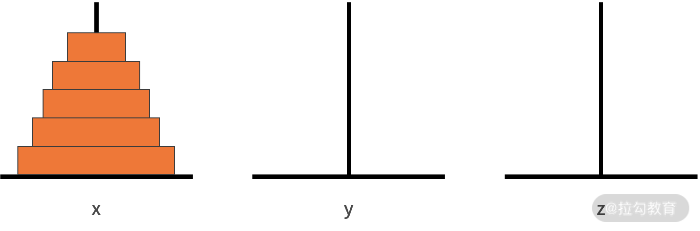
我们来分析一下这个问题。这是一个大规模的复杂问题，如果要采用递归方法去解决的话，就要先把问题化简。
我们的原问题是，把从小到大的 n 个盘子，从 x 移动到 z。
我们可以将这个大问题拆解为以下 3 个小问题：
- 把从小到大的 n-1 个盘子，从 x 移动到 y；
- 接着把最大的一个盘子，从 x 移动到 z；
- 再把从小到大的 n-1 个盘子，从 y 移动到 z。
首先，我们来判断它是否满足递归的第一个条件。 其中，第 1 和第 3 个问题就是汉诺塔问题。这样我们就完成了一次把大问题缩小为完全一样的小规模问题。我们已经定义好了递归体，也就是满足来递归的第一个条件。如下图所示：

接下来我们来看判断它是否满足终止条件。随着递归体不断缩小范围，汉诺塔问题由原来“移动从小到大的 n 个盘子”，缩小为“移动从小到大的 n-1 个盘子”，直到缩小为“移动从小到大的 1 个盘子”。移动从小到大的 1 个盘子，就是移动最小的那个盘子。根据规则可以发现，最小的盘子是可以自由移动的。因此，递归的第二个条件，终止条件，也是满足的。
经过仔细分析可见，汉诺塔问题是完全可以用递归实现的。我们定义汉诺塔的递归函数为 hanio()。这个函数的输入参数包括了：
- 3 根柱子的标记 x、y、z；
- 待移动的盘子数量 n。
具体代码如下所示，在代码中，hanio(n, x, y, z)，代表了把 n 个盘子由 x 移动到 z。根据分析，我们知道递归体包含 3 个步骤：
- 把从小到大的 n-1 个盘子从 x 移动到 y，那么代码就是 hanio(n-1, x, z, y)；
- 再把最大的一个盘子从 x 移动到 z，那么直接完成一次移动的动作就可以了；
- 再把从小到大的 n-1 个盘子从 y 移动到 z，那么代码就是 hanio(n-1, y, x, z)。对于终止条件则需要判断 n 的大小。如果 n 等于 1，那么同样直接移动就可以了。
public static void main(String[] args) {
String x = "x";
String y = "y";
String z = "z";
hanio(3, x, y, z);
}
public void hanio(int n, String x, String y, String z) {
if (n < 1) {
System.out.println("汉诺塔的层数不能小于1");
} else if (n == 1) {
System.out.println("移动: " + x + " -> " + z);
return;
} else {
hanio(n - 1, x, z, y);
System.out.println("移动: " + x + " -> " + z);
hanio(n - 1, y, x, z);
}
}
我们以 n = 3 为例，执行一下这段代码：
在主函数中，执行了 hanio(3, "x", "y", "z")。我们发现 3 比 1 要大，则进入递归体。分别先后执行了 hanio(2, "x", "z", "y")、"移动: x->z"、hanio(2, "y", "x", "z")。
其中的 hanio(2, "x", "z", "y")，又先后执行了 hanio(1, "x", "y", "z")、"移动: x->y"、hanio(1, "z", "x", "y")。在这里，hanio(1, "x", "y", "z") 的执行结果是 "移动: x->z"，hanio(1, "z", "x", "y")的执行结果是"移动: z->y"。
另一边，hanio(2, "y", "x", "z") 则要先后执行 hanio(1, "y", "z", "x")、"移动: y->z"、hanio(1, "x", "y", "z")。在这里，hanio(1, "y", "z", "x") 的执行结果是"移动: y->x"，hanio(1, "x", "y", "z") 的执行结果是 "移动: x->z"。
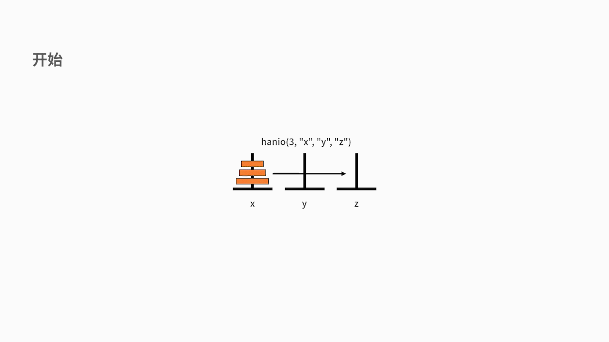
最终梳理一下，代码执行的结果就是：
移动: x->z
移动: x->y
移动: z->y
移动: x->z
移动: y->x
移动: y->z
移动: x->z
抛开用于处理输入异常的代码部分不谈，它的代码包含了 2 个部分：
- 终止条件，即如何处理小规模的问题，实现的代码量一定是很少的；
- 递归体，即大问题向小问题分解的过程，实现的代码量也不会太多。
因此，一个复杂问题的递归实现，通常代码量都不会很多。
总结
递归的核心思想是把规模大的问题转化为规模小的相似的子问题来解决。
在函数实现时，因为解决大问题的方法和解决小问题的方法往往是同一个方法，所以就产生了函数调用它自身的情况。另外这个解决问题的函数必须有明显的结束条件，这样就不会产生无限递归的情况了。递归的应用非常广泛，之后我们要讲的很多数据结构和算法的编码实现都要用到递归，例如分治策略、快速排序等等。
练习题
下面，我们给出一道练习题，斐波那契数列。斐波那契数列是：0，1，1，2，3，5，8，13，21，34，55，89，144……。你会发现，这个数列中元素的性质是，某个数等于它前面两个数的和；也就是 a[n+2] = a[n+1] + a[n]。至于起始两个元素，则分别为 0 和 1。在这个数列中的数字，就被称为斐波那契数。
现在的问题是，写一个函数，输入 x，输出斐波那契数列中第 x 位的元素。例如，输入 4，输出 2；输入 9，输出 21。要求：需要用递归的方式来实现。详细分析和答案，请翻阅 16 课时例题 1。
12 分治：如何利用分治法完成数据查找？
前面课时中，我们学习了递归的思想，它是一种函数自我调用缩小问题规模的方法。这一课时我们继续学习另一种算法思维，分治法。
从定性的角度来看，分治法的核心思想就是“分而治之”。利用分而治之的思想，就可以把一个大规模、高难度的问题，分解为若干个小规模、低难度的小问题。随后，开发者将面对多个简单的问题，并很快地找到答案各个击破。在把这些简单问题解决好之后，我们通过把这些小问题的答案合并，就得到了原问题的答案。
分治法应用很广泛，很多高效率的算法都是以分治法作为其基础思想，例如排序算法中的快速排序和归并排序。
分治法是什么？
计算机求解问题所需的计算时间，与其涉及的数据规模强相关。简而言之，问题所涉及的数据规模越小，它所需的计算时间也越少；反之亦然。
我们来看一个例子：在一个包含 n 个元素的无序数组中，要求按照从小到大的顺序打印其 n 个元素。
假设我们采用 n 个元素之间的两两比较的计算方法，去得到从小到大的序列。分析如下：
当数据量 n = 1 时，不需任何计算，直接打印即可；
当数据量 n = 2 时 ，那需要做 1 次比较即可达成目标；
当数据量 n = 3 时，要对这 3 个元素进行两两比较，共计 3 次比较；
而当数据量 n = 10 时，问题就不那么容易处理了，我们需要 45 次比较（计算方式是 0.5*n(n-1) ）。
因此，要想通过上述方法直接解决一个规模较大的问题，其实是相当困难的。
基于此，分治法的核心思想就是分而治之。具体来说，它先将一个难以直接解决的大问题，分割成一些可以直接解决的小问题。如果分割后的问题仍然无法直接解决，那么就继续递归地分割，直到每个小问题都可解。
通常而言，这些子问题具备互相独立、形式相同的特点。这样，我们就可以采用同一种解法，递归地去解决这些子问题。最后，再将每个子问题的解合并，就得到了原问题的解。
分治法的价值
关于分治法，很多同学都有这样一个误区。那就是，当你的计算机性能还不错的时候，采用分治法相对于全局遍历一遍没有什么差别。
例如下面这个问题，在 1000 个有序数字构成的数组 a 中，判断某个数字 c 是否出现过。
第一种方法，全局遍历。 复杂度 O(n)。采用 for 循环，对 1000 个数字全部判断一遍。
第二种方法，采用二分查找。 复杂度 O(logn)。递归地判断 c 与 a 的中位数的大小关系，并不断缩小范围。
这两种方法，对时间的消耗几乎一样。那分治法的价值又是什么呢？
其实，在小数据规模上，分治法没有什么特殊价值。无非就是让代码显得更牛一些。只有在大数据集上，分治法的价值才能显现出来。
下面我们通过一个经典的案例带你感受分治法的价值。
假如有一张厚度为 1 毫米且足够柔软的纸，问将它对折多少次之后，厚度能达到地球到月球的距离？
这个问题看起来很异想天开。根据百度百科，地月平均距离是 384,403.9 千米，大约 39 万千米。粗看怎么也需要对折 1 万次吧？但实际上，根据计算，我们只需要对折 39 次就够了。计算的过程是 2^39 = 549,755,813,888 = 55 万千米 > 39 万千米。那么，这个例子意味着什么呢？
我们回到前面讲到的在数组 a 中查找数字 c 的例子，如果数组 a 的大小拓展到 549,755,813,888 这个量级上，使用第二种的二分查找方法，仅仅需要 39 次判断，就能找到最终结果。相比暴力搜索的方法，性能优势高的不是一星半点！这也证明了，复杂度为 O(logn) 相比复杂度为 O(n) 的算法，在大数据集合中性能有着爆发式的提高。
分治法的使用方法
前面我们讲到分治法的核心思想是“分而治之”，当你需要采用分治法时，一般原问题都需要具备以下几个特征：
- 难度在降低，即原问题的解决难度，随着数据的规模的缩小而降低。这个特征绝大多数问题都是满足的。
- 问题可分，原问题可以分解为若干个规模较小的同类型问题。这是应用分治法的前提。
- 解可合并，利用所有子问题的解，可合并出原问题的解。这个特征很关键，能否利用分治法完全取决于这个特征。
- 相互独立，各个子问题之间相互独立，某个子问题的求解不会影响到另一个子问题。如果子问题之间不独立，则分治法需要重复地解决公共的子问题，造成效率低下的结果。
根据前面我们对分治法的分析，你一定能迅速联想到递归。分治法需要递归地分解问题，再去解决问题。因此，分治法在每轮递归上，都包含了分解问题、解决问题和合并结果这 3 个步骤。
为了让大家对分治法有更清晰地了解，我们以二分查找为例，看一下分治法如何使用。关于分治法在排序中的使用，我们会在第 11 课时中讲到。查找问题指的是，在一个有序的数列中，判断某个待查找的数字是否出现过。二分查找，则是利用分治法去解决查找问题。通常二分查找需要一个前提，那就是输入的数列是有序的。
二分查找的思路比较简单，步骤如下：
- 选择一个标志 i 将集合 L 分为二个子集合，一般可以使用中位数；
- 判断标志 L(i) 是否能与要查找的值 des 相等，相等则直接返回结果；
- 如果不相等，需要判断 L(i) 与 des 的大小；
- 基于判断的结果决定下步是向左查找还是向右查找。如果向某个方向查找的空间为 0，则返回结果未查到；
- 回到步骤 1。
我们对二分查找的复杂度进行分析。二分查找的最差情况是，不断查找到最后 1 个数字才完成判断。那么此时需要的最大的复杂度就是 O(logn)。
分治法的案例
下面我们一起来看一个例子。在数组 { 1, 2, 3, 4, 5, 6, 7, 8, 9, 10 } 中，查找 8 是否出现过。
首先判断 8 和中位数 5 的大小关系。因为 8 更大，所以在更小的范围 6, 7, 8, 9, 10 中继续查找。此时更小的范围的中位数是 8。由于 8 等于中位数 8，所以查找到并打印查找到的 8 对应在数组中的 index 值。如下图所示。

从代码实现的角度来看，我们可以采用两个索引 low 和 high，确定查找范围。最初 low 为 0，high 为数组长度减 1。在一个循环体内，判断 low 到 high 的中位数与目标变量 targetNumb 的大小关系。根据结果确定向左走（high = middle - 1）或者向右走（low = middle + 1），来调整 low 和 high 的值。直到 low 反而比 high 更大时，说明查找不到并跳出循环。我们给出代码如下：
public static void main(String[] args) {
// 需要查找的数字
int targetNumb = 8;
// 目标有序数组
int[] arr = { 1, 2, 3, 4, 5, 6, 7, 8, 9, 10 };
int middle = 0;
int low = 0;
int high = arr.length - 1;
int isfind = 0;
while (low <= high) {
middle = (high + low) / 2;
if (arr[middle] == targetNumb) {
System.out.println(targetNumb + " 在数组中,下标值为: " + middle);
isfind = 1;
break;
} else if (arr[middle] > targetNumb) {
// 说明该数在low~middle之间
high = middle - 1;
} else {
// 说明该数在middle~high之间
low = middle + 1;
}
}
if (isfind == 0) {
System.out.println("数组不含 " + targetNumb);
}
}
我们基于这个例子，可以对它进行一些经验和规律的总结，这些经验会辅助大家在面试时找到解题思路。
- 二分查找的时间复杂度是 O(logn)，这也是分治法普遍具备的特性。当你面对某个代码题，而且约束了时间复杂度是 O(logn) 或者是 O(nlogn) 时，可以想一下分治法是否可行。
- 二分查找的循环次数并不确定。一般是达到某个条件就跳出循环。因此，编码的时候，多数会采用 while 循环加 break 跳出的代码结构。
- 二分查找处理的原问题必须是有序的。因此，当你在一个有序数据环境中处理问题时，可以考虑分治法。相反，如果原问题中的数据并不是有序的，则使用分治法的可能性就会很低了。
以上 3 点经验和规律的总结，可以帮助你快速找到解决方案，做好技术选型。在实际工作和参加面试时，都是非常重要的经验。
练习题
最后，我们给出一个进阶的问题，供大家练习。题目如下：
在一个有序数组中，查找出第一个大于 9 的数字，假设一定存在。例如，arr = { -1, 3, 3, 7, 10, 14, 14 }; 则返回 10。
在这里提醒一下，带查找的目标数字具备这样的性质：
第一，它比 9 大；
第二，它前面的数字（除非它是第一个数字），比 9 小。
因此，当我们作出向左走或向右走的决策时，必须满足这两个条件。
public static void main(String[] args) {
int targetNumb = 9;
// 目标有序数组
int[] arr = { -1, 3, 3, 7, 10, 14, 14 };
int middle = 0;
int low = 0;
int high = arr.length - 1;
while (low <= high) {
middle = (high + low) / 2;
if (arr[middle] > targetNumb && (middle == 0 || arr[middle - 1] <= targetNumb)) {
System.out.println("第一个比 " + targetNumb + " 大的数字是 " + arr[middle]);
break;
} else if (arr[middle] > targetNumb) {
// 说明该数在low~middle之间
high = middle - 1;
} else {
// 说明该数在middle~high之间
low = middle + 1;
}
}
}
总结
分治法经常会用在海量数据处理中。这也是它显著区别于遍历查找方法的优势。在面对陌生问题时，需要注意原问题的数据是否有序，预期的时间复杂度是否带有 logn 项，是否可以通过小问题的答案合并出原问题的答案。如果这些先决条件都满足，你就应该第一时间想到分治法。
13 排序：经典排序算法原理解析与优劣对比
前面课时中，我们学习了分治法的思想，以及二分查找的实现方法。我们讲到，二分查找要求原数组必须有序。其实，由无序到有序，这是算法领域最常见的一类问题，即排序问题。本课时，我们就来学习 4 种常见的排序算法，包括冒泡排序、插入排序、归并排序以及快速排序。此外，我们还会对这 4 种排序算法的优劣势进行详细地对比分析。
什么是排序问题
排序，就是让一组无序数据变成有序的过程。 一般默认这里的有序都是从小到大的排列顺序。下面我们先来讲讲，如何判断不同的排序算法的优劣。
衡量一个排序算法的优劣，我们主要会从以下 3 个角度进行分析：
1．时间复杂度，具体包括，最好时间复杂度、最坏时间复杂度以及平均时间复杂度。
2．空间复杂度，如果空间复杂度为 1，也叫作原地排序。
3．稳定性，排序的稳定性是指相等的数据对象，在排序之后，顺序是否能保证不变。
常见的排序算法及其思想
接下来，我们就开始详细地介绍一些经典的排序算法。
冒泡排序
1、冒泡排序的原理
从第一个数据开始，依次比较相邻元素的大小。如果前者大于后者，则进行交换操作，把大的元素往后交换。通过多轮迭代，直到没有交换操作为止。 冒泡排序就像是在一个水池中处理数据一样，每次会把最大的那个数据传递到最后。
2、冒泡排序的性能
冒泡排序最好时间复杂度是 O(n)，也就是当输入数组刚好是顺序的时候，只需要挨个比较一遍就行了，不需要做交换操作，所以时间复杂度为 O(n)。
冒泡排序最坏时间复杂度会比较惨，是 O(n*n)。也就是说当数组刚好是完全逆序的时候，每轮排序都需要挨个比较 n 次，并且重复 n 次，所以时间复杂度为 O(n*n)。
很显然，当输入数组杂乱无章时，它的平均时间复杂度也是 O(n*n)。
冒泡排序不需要额外的空间，所以空间复杂度是 O(1)。冒泡排序过程中，当元素相同时不做交换，所以冒泡排序是稳定的排序算法。代码如下：
public static void main(String[] args) {
int[] arr = { 1, 0, 3, 4, 5, -6, 7, 8, 9, 10 };
System.out.println("原始数据: " + Arrays.toString(arr));
for (int i = 1; i < arr.length; i++) {
for (int j = 0; j < arr.length - i; j++) {
if (arr[j] > arr[j + 1]) {
int temp = arr[j];
arr[j] = arr[j + 1];
arr[j + 1] = temp;
}
}
}
System.out.println("冒泡排序: " + Arrays.toString(arr));
}
插入排序
1、插入排序的原理
选取未排序的元素，插入到已排序区间的合适位置，直到未排序区间为空。插入排序顾名思义，就是从左到右维护一个已经排好序的序列。直到所有的待排数据全都完成插入的动作。
2、插入排序的性能
插入排序最好时间复杂度是 O(n)，即当数组刚好是完全顺序时，每次只用比较一次就能找到正确的位置。这个过程重复 n 次，就可以清空未排序区间。
插入排序最坏时间复杂度则需要 O(n*n)。即当数组刚好是完全逆序时，每次都要比较 n 次才能找到正确位置。这个过程重复 n 次，就可以清空未排序区间，所以最坏时间复杂度为 O(n*n)。
插入排序的平均时间复杂度是 O(n*n)。这是因为往数组中插入一个元素的平均时间复杂度为 O(n)，而插入排序可以理解为重复 n 次的数组插入操作，所以平均时间复杂度为 O(n*n)。
插入排序不需要开辟额外的空间，所以空间复杂度是 O(1)。
根据上面的例子可以发现，插入排序是稳定的排序算法。代码如下：
public static void main(String[] args) {
int[] arr = { 2, 3, 5, 1, 23, 6, 78, 34 };
System.out.println("原始数据: " + Arrays.toString(arr));
for (int i = 1; i < arr.length; i++) {
int temp = arr[i];
int j = i - 1;
for (; j >= 0; j--) {
if (arr[j] > temp) {
arr[j + 1] = arr[j];
} else {
break;
}
}
arr[j + 1] = temp;
}
System.out.println("插入排序: " + Arrays.toString(arr));
}
小结：插入排序和冒泡排序算法的异同点
接下来我们来比较一下上面这两种排序算法的异同点：
相同点
- 插入排序和冒泡排序的平均时间复杂度都是 O(n*n)，且都是稳定的排序算法，都属于原地排序。
差异点
- 冒泡排序每轮的交换操作是动态的，所以需要三个赋值操作才能完成；
- 而插入排序每轮的交换动作会固定待插入的数据，因此只需要一步赋值操作。
以上两种排序算法都比较简单，通过这两种算法可以帮助我们对排序的思想建立基本的了解，接下来再介绍一些时间复杂度更低的排序算法，它们的时间复杂度都可以达到 O(nlogn)。
归并排序
1、归并排序的原理
归并排序的原理其实就是我们上一课时讲的分治法。它首先将数组不断地二分，直到最后每个部分只包含 1 个数据。然后再对每个部分分别进行排序，最后将排序好的相邻的两部分合并在一起，这样整个数组就有序了。

代码如下：
public static void main(String[] args) {
int[] arr = { 49, 38, 65, 97, 76, 13, 27, 50 };
int[] tmp = new int[arr.length];
System.out.println("原始数据: " + Arrays.toString(arr));
customMergeSort(arr, tmp, 0, arr.length - 1);
System.out.println("归并排序: " + Arrays.toString(arr));
}
public static void customMergeSort(int[] a, int[] tmp, int start, int end) {
if (start < end) {
int mid = (start + end) / 2;
// 对左侧子序列进行递归排序
customMergeSort(a, tmp, start, mid);
// 对右侧子序列进行递归排序
customMergeSort(a, tmp,mid + 1, end);
// 合并
customDoubleMerge(a, tmp, start, mid, end);
}
}
public static void customDoubleMerge(int[] a, int[] tmp, int left, int mid, int right) {
int p1 = left, p2 = mid + 1, k = left;
while (p1 <= mid && p2 <= right) {
if (a[p1] <= a[p2])
tmp[k++] = a[p1++];
else
tmp[k++] = a[p2++];
}
while (p1 <= mid)
tmp[k++] = a[p1++];
while (p2 <= right)
tmp[k++] = a[p2++];
// 复制回原素组
for (int i = left; i <= right; i++)
a[i] = tmp[i];
2、归并排序的性能
对于归并排序，它采用了二分的迭代方式，复杂度是 logn。
每次的迭代，需要对两个有序数组进行合并，这样的动作在 O(n) 的时间复杂度下就可以完成。因此，**归并排序的复杂度就是二者的乘积 O(nlogn)。**同时，它的执行频次与输入序列无关，因此，归并排序最好、最坏、平均时间复杂度都是 O(nlogn)。
空间复杂度方面，由于每次合并的操作都需要开辟基于数组的临时内存空间，所以空间复杂度为 O(n)。归并排序合并的时候，相同元素的前后顺序不变，所以归并是稳定的排序算法。
快速排序
1、快速排序法的原理
快速排序法的原理也是分治法。它的每轮迭代，会选取数组中任意一个数据作为分区点，将小于它的元素放在它的左侧，大于它的放在它的右侧。再利用分治思想，继续分别对左右两侧进行同样的操作，直至每个区间缩小为 1，则完成排序。

代码参考：
public static void main(String[] args) {
int[] arr = { 6, 1, 2, 7, 9, 11, 4, 5, 10, 8 };
System.out.println("原始数据: " + Arrays.toString(arr));
customQuickSort(arr, 0, arr.length - 1);
System.out.println("快速排序: " + Arrays.toString(arr));
}
public void customQuickSort(int[] arr, int low, int high) {
int i, j, temp, t;
if (low >= high) {
return;
}
i = low;
j = high;
temp = arr[low];
while (i < j) {
// 先看右边，依次往左递减
while (temp <= arr[j] && i < j) {
j--;
}
// 再看左边，依次往右递增
while (temp >= arr[i] && i < j) {
i++;
}
t = arr[j];
arr[j] = arr[i];
arr[i] = t;
}
arr[low] = arr[i];
arr[i] = temp;
// 递归调用左半数组
customQuickSort(arr, low, j - 1);
// 递归调用右半数组
customQuickSort(arr, j + 1, high);
}
2、快速排序法的性能
在快排的最好时间的复杂度下，如果每次选取分区点时，都能选中中位数，把数组等分成两个，那么此时的时间复杂度和归并一样，都是 O(n*logn)。
而在最坏的时间复杂度下，也就是如果每次分区都选中了最小值或最大值，得到不均等的两组。那么就需要 n 次的分区操作，每次分区平均扫描 n / 2 个元素，此时时间复杂度就退化为 O(n*n) 了。
快速排序法在大部分情况下，统计上是很难选到极端情况的。因此它平均的时间复杂度是 O(n*logn)。
快速排序法的空间方面，使用了交换法，因此空间复杂度为 O(1)。
很显然，快速排序的分区过程涉及交换操作，所以快排是不稳定的排序算法。
排序算法的性能分析
我们先思考一下排序算法性能的下限，也就是最差的情况。在前面的课程中，我们写过求数组最大值的代码，它的时间复杂度是 O(n)。对于 n 个元素的数组，只要重复执行 n 次最大值的查找就能完成排序。因此排序最暴力的方法，时间复杂度是 O(n*n)。这恰如冒泡排序和插入排序。
当我们利用算法思维去解决问题时，就会想到尝试分治法。此时，利用归并排序就能让时间复杂度降低到 O(nlogn)。然而，归并排序需要额外开辟临时空间。一方面是为了保证稳定性，另一方面则是在归并时，由于在数组中插入元素导致了数据挪移的问题。
为了规避因此而带来的时间损耗，此时我们采用快速排序。通过交换操作，可以解决插入元素导致的数据挪移问题，而且降低了不必要的空间开销。但是由于其动态二分的交换数据，导致了由此得出的排序结果并不稳定。
总结
本课时我们讲了4 种常见的排序算法，包括冒泡排序、插入排序、归并排序以及快速排序。这些经典算法没有绝对的好和坏，它们各有利弊。在工作过程中，需要你根据实际问题的情况来选择最优的排序算法。
如果对数据规模比较小的数据进行排序，可以选择时间复杂度为 O(n*n) 的排序算法。因为当数据规模小的时候，时间复杂度 O(nlogn) 和 O(n*n) 的区别很小，它们之间仅仅相差几十毫秒，因此对实际的性能影响并不大。
但对数据规模比较大的数据进行排序，就需要选择时间复杂度为 O(nlogn) 的排序算法了。
- 归并排序的空间复杂度为 O(n)，也就意味着当排序 100M 的数据，就需要 200M 的空间，所以对空间资源消耗会很多。
- 快速排序在平均时间复杂度为 O(nlogn)，但是如果分区点选择不好的话，最坏的时间复杂度也有可能逼近 O(n*n)。而且快速排序不具备稳定性，这也需要看你所面对的问题是否有稳定性的需求。
14 动态规划：如何通过最优子结构，完成复杂问题求解？
在前面课时中，我们学习了分治法的思想，并以二分查找为例介绍了分治的实现逻辑。
我们提到过，分治法的使用必须满足 4 个条件：
- 问题的解决难度与数据规模有关；
- 原问题可被分解；
- 子问题的解可以合并为原问题的解；
- 所有的子问题相互独立。
然而在实际工作中还存在这样一类问题，它们满足前 3 个条件，唯独不满足第 4 个条件。那么这类问题我们该怎么解决呢？本课时，我们就来学习求解这类问题的动态规划算法，它是最常用的算法之一。
什么是动态规划
从数学的视角来看，动态规划是一种运筹学方法，是在多轮决策过程中的最优方法。
那么，什么是多轮决策呢？其实多轮决策的每一轮都可以看作是一个子问题。从分治法的视角来看，每个子问题必须相互独立。但在多轮决策中，这个假设显然不成立。这也是动态规划方法产生的原因之一。
动态规划是候选人参加面试的噩梦，也是面试过程中的难点。虽然动态规划很难，但在实际的工作中，使用频率并不高，不是所有的岗位都会用到动态规划。
最短路径问题
接下来。我们来看一个非常典型的例子，最短路径问题。如下图所示：

每个结点是一个位置，每条边是两个位置之间的距离。现在需要求解出一条由 A 到 G 的最短距离是多少。
不难发现，我们需要求解的路线是由 A 到 G，这就意味着 A 要先到 B，再到 C，再到 D，再到 E，再到 F。每一轮都需要做不同的决策，而每次的决策又依赖上一轮决策的结果。
例如，做 D2 -> E 的决策时，D2 -> E2 的距离为 1，最短。但这轮的决策，基于的假设是从 D2 出发，这就意味着前面一轮的决策结果是 D2。由此可见，相邻两轮的决策结果并不是独立的。
动态规划还有一个重要概念叫作状态。在这个例子中，状态是个变量，而且受决策动作的影响。例如，第一轮决策的状态是 S1，可选的值是 A，第二轮决策的状态是 S2，可选的值就是 B1 和 B2。以此类推。
动态规划的基本方法
动态规划问题之所以难，是因为动态规划的解题方法并没有那么标准化，它需要你因题而异，仔细分析问题并寻找解决方案。虽然动态规划问题没有标准化的解题方法，但它有一些宏观层面通用的方法论：
下面的 k 表示多轮决策的第 k 轮
- 分阶段，将原问题划分成几个子问题。一个子问题就是多轮决策的一个阶段，它们可以是不满足独立性的。
- 找状态，选择合适的状态变量 Sk。它需要具备描述多轮决策过程的演变，更像是决策可能的结果。
- 做决策，确定决策变量 uk。每一轮的决策就是每一轮可能的决策动作，例如 D2 的可能的决策动作是 D2 -> E2 和 D2 -> E3。
- 状态转移方程。这个步骤是动态规划最重要的核心，即 sk+1= uk(sk) 。
- 定目标。写出代表多轮决策目标的指标函数 Vk,n。
- 寻找终止条件。
了解了方法论、状态、多轮决策之后，我们再补充一些动态规划的基本概念。
- 策略，每轮的动作是决策，多轮决策合在一起常常被称为策略。
- 策略集合，由于每轮的决策动作都是一个变量，这就导致合在一起的策略也是一个变量。我们通常会称所有可能的策略为策略集合。因此，动态规划的目标，也可以说是从策略集合中，找到最优的那个策略。
一般而言，具有如下几个特征的问题，可以采用动态规划求解：
- 最优子结构。它的含义是，原问题的最优解所包括的子问题的解也是最优的。例如，某个策略使得 A 到 G 是最优的。假设它途径了 Fi，那么它从 A 到 Fi 也一定是最优的。
- 无后效性。某阶段的决策，无法影响先前的状态。可以理解为今天的动作改变不了历史。
- 有重叠子问题。也就是，子问题之间不独立。这个性质是动态规划区别于分治法的条件。如果原问题不满足这个特征，也是可以用动态规划求解的，无非就是杀鸡用了宰牛刀。
动态规划的案例
到这里，动态规划的概念和方法就讲完了。接下来，我们以最短路径问题再来看看动态规划的求解方法。在这个问题中，你可以采用最暴力的方法，那就是把所有的可能路径都遍历一遍，去看哪个结果的路径最短的。如果采用动态规划方法，那么我们按照方法论来执行。
动态规划的求解方法
具体的解题步骤如下：
1. 分阶段
很显然，从 A 到 G，可以拆分为 A -> B、B -> C、C -> D、D -> E、E -> F、F -> G，6 个阶段。
2. 找状态
第一轮的状态 S1 = A，第二轮 S2 = {B1,B2}，第三轮 S3 = {C1,C2,C3,C4}，第四轮 S4 = {D1,D2,D3}，第五轮 S5 = {E1,E2,E3}，第六轮 S6 = {F1,F2}，第七轮 S7 = {G}。
3. 做决策
决策变量就是上面图中的每条边。我们以第四轮决策 D -> E 为例来看，可以得到 u4(D1)，u4(D2)，u4(D3)。其中 u4(D1) 的可能结果是 E1 和 E2。
4. 写出状态转移方程
在这里，就是 s**k+1 = u**k(s**k)。
5. 定目标
别忘了，我们的目标是总距离最短。我们定义 d**k(s**k,u**k) 是在 sk 时，选择 uk 动作的距离。例如，d5(E1,F1) = 3。那么此时 n = 7，则有，

就是最终要优化的目标。
6. 寻找终止条件
- 很显然，这里的起止条件分别是，s1 = A 和 s7 = G。
- 接下来，我们把所有的已知条件，凝练为上面的符号之后，只需要借助最优子结构，就可以把问题解决了。最优子结构的含义是，原问题的最优解所包括的子问题的解也是最优的。
- 套用在这个例子的含义就是，如果 A -> ... -> F1 -> G 是全局 A 到 G 最优的路径，那么此处 A -> ... -> F1 也是 A 到 F1 的最优路径。
- 因此，此时的优化目标 min Vk,7(s1=A, s7=G)，等价于 min { Vk,6(s1=A, s6=F1)+4， Vk,6(s1=A, s6=F2)+3 }。
- 此时，优化目标的含义为，从 A 到 G 的最短路径，是 A 到 F1 到 G 的路径和 A 到 F2 到 G 的路径中更短的那个。
- 同样的，对于上面式子中，Vk,6(s1=A,s6=F1) 和 Vk,6(s1=A,s6=F2)，仍然可以递归地使用上面的分析方法。
计算过程详解
好了，为了让大家清晰地看到结果，我们给出详细的计算过程。为了书写简单，我们把函数 Vk,7(s1=A, s7=G) 精简为 V7(G)，含义为经过了 6 轮决策后，状态到达 G 后所使用的距离。我们把图片复制到这里一份，方便大家不用上下切换。

我们的优化目标为 min Vk,7(s1=A, s7=G)，因此精简后原问题为，min V7(G)。


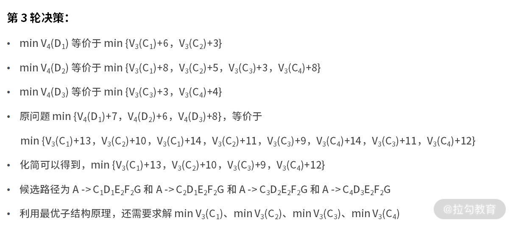


因此，最终输出路径为 A -> B1 -> C2 -> D1 -> E2 -> F2 -> G，最短距离为 18。
代码实现过程
接下来，我们尝试用代码来实现上面的计算过程。对于输入的图，可以采用一个 m x m 的二维数组来保存。在这个二维数组里，m 等于全部的结点数，也就是结点与结点的关系图。而数组每个元素的数值，定义为结点到结点需要的距离。
在本例中，可以定义输入矩阵 m（空白处为0），如下图所示：

代码如下：
public class testpath {
public static int minPath1(int[][] matrix) {
return process1(matrix, matrix[0].length-1);
}
// 递归
public static int process1(int[][] matrix, int i) {
// 到达A退出递归
if (i == 0) {
return 0;
}
// 状态转移
else{
int distance = 999;
for(int j=0; j<i; j++){
if(matrix[j][i]!=0){
int d_tmp = matrix[j][i] + process1(matrix, j);
if (d_tmp < distance){
distance = d_tmp;
}
}
}
return distance;
}
}
public static void main(String[] args) {
int[][] m = {{0,5,3,0,0,0,0,0,0,0,0,0,0,0,0,0},{0,0,0,1,3,6,0,0,0,0,0,0,0,0,0,0},{0,0,0,0,8,7,6,0,0,0,0,0,0,0,0,0},{0,0,0,0,0,0,0,6,8,0,0,0,0,0,0,0},{0,0,0,0,0,0,0,3,5,0,0,0,0,0,0,0},{0,0,0,0,0,0,0,0,3,3,0,0,0,0,0,0},{0,0,0,0,0,0,0,0,8,4,0,0,0,0,0,0},{0,0,0,0,0,0,0,0,0,0,2,2,0,0,0,0},{0,0,0,0,0,0,0,0,0,0,0,1,2,0,0,0},{0,0,0,0,0,0,0,0,0,0,0,3,3,0,0,0},{0,0,0,0,0,0,0,0,0,0,0,0,0,3,5,0},{0,0,0,0,0,0,0,0,0,0,0,0,0,5,2,0},{0,0,0,0,0,0,0,0,0,0,0,0,0,6,6,0},{0,0,0,0,0,0,0,0,0,0,0,0,0,0,0,4},{0,0,0,0,0,0,0,0,0,0,0,0,0,0,0,3}};
System.out.println(minPath1(m));
}
}
代码解读
下面我们对这段代码进行解读：
代码的 27 行是主函数，在代码中定义了二维数组 m，对应于输入的距离图。m 是 15 x 16 维的，我们忽略了最后一行的全 0（即使输入也不会影响结果）。
然后调用函数 minPath1。在第 2 到第 4 行，它的内部又调用了 process1(matrix, matrix[0].length-1)。在这里，matrix[0].length-1 的值是 15，表示的含义是 matrix 数组的第 16 列（G）是目的地。
接着进入 process1 函数中。我们知道在动态规划的过程中，是从后往前不断地推进结果，这就是状态转移的过程。对应代码中的 13-24 行：
- 第 15 行开始循环，j 变量是纵向的循环变量。
- 第 16 行判断 matrix[j][i] 与 0 的关系，含义为，只有值不为 0 才说明两个结点之间存在通路。
- 一旦发现某个通路，就需要计算其距离。计算的方式是 17 行的，d_tmp = matrix[j][i] + process1(matrix, j)。
- 当得到了距离之后，还需要找到最短的那个距离，也就是 18 到 20 行的含义。这就是动态规划最优子结构的体现。
- 一旦 i 减小到了 0，就说明已经到了起点 A。那么 A 到 A 的距离就是 0，直接第 10 行的 return 0 就可以了。
- 经过运行，这段代码的输出结果是 18，这与我们手动的推导结果一致。
练习题
在 08 课时中，我们讲述“字符串匹配算法的案例”时提到过，最大公共子串也可以使用动态规划的方法来做。
案例题目如下：
假设有且仅有 1 个最大公共子串。比如，输入 a = "13452439"， b = "123456"。由于字符串 "345" 同时在 a 和 b 中出现，且是同时出现在 a 和 b 中的最长子串。因此输出 "345"。
我们就把这个问题当作本课时的练习题。详细分析和答案，请翻阅 16 课时例题 3。
总结
动态规划领域有很多经典问题，本课时，我们讲述了最短路径的问题。需要明确的是，动态规划并不简单，动态规划的适用范围也没有那么广。如果你不是专门从事运筹优化领域的工作，对它不了解也很正常。如果在求职过程中，你求职的岗位与运筹优化关系不大，一般而言被考察到动态规划的可能性也是极低的。
15 定位问题才能更好地解决问题：开发前的复杂度分析与技术选型
在前面课时中，我们学习了数据结构和算法思维，这些知识和技巧，是解决问题、代码优化的基础。从本课时开始，我们将进入实战模块，从真正解决问题的角度来看看，如何将我们此前学到的知识灵活运用到实际工作中。
问题定位和技术选型
假设你现在面对一个实际的算法问题，则需要从以下两个方面进行思考。
首先，我们要明确目标。即用尽可能低的时间复杂度和空间复杂度，解决问题并写出代码； 接着，我们要定位问题。目的是更高效地解决问题。这里定位问题包含很多内容。 例如：
- 这个问题是什么类型（排序、查找、最优化）的问题；
- 这个问题的复杂度下限是多少，即最低的时间复杂度可能是多少；
- 采用哪些数据结构或算法思维，能把这个问题解决。
为了方便你理解，下面我们来举一个例子，在一个包含 n 个元素的无序数组 a 中，输出其最大值 max_val。
这个问题比较简单。显然，要输出的最大值 max_val，也是原数组的元素之一。因此，这个问题的类型是，在数据中基于某个条件的查找问题。
关于查找问题，我们学习过二分查找，其复杂度是 O(logn)。但可惜的是，二分查找的条件是输入数据有序，这里并不满足。这就意味着，我们很难在 O(logn) 的复杂度下解决问题。
但是，继续分析你会发现，某一个数字元素的值会直接影响最终结果。这是因为，假设前 n-1 个数字的最大值是 5，但最后一个数字的值是否大于 5，会直接影响最后的结果。这就意味着，这个问题不把所有的输入数据全都过一遍，是无法得到正确答案的。要把所有数据全都过一遍，这就是 O(n) 的复杂度。
小结一下就是，因为该问题属于查找问题，所以考虑用 O(logn) 的二分查找。但因为数组无序，导致它并不适用。又因为必须把全部数据过一遍，因此考虑用 O(n) 的检索方法。这就是复杂度的下限。
当明确了复杂度的下限是 O(n) 后，你就能知道此时需要一层 for 循环去寻找最大值。那么循环的过程中，就可以实现动态维护一个最大值变量。空间复杂度是 O(1)，并不需要采用某些复杂的数据结构。这个问题我们在前面的课时 1 中写过的代码如下：
public void s1_3() {
int a[] = { 1, 4, 3 };
int max_val = -1;
int max_inx = -1;
for (int i = 0; i < a.length; i++) {
if (a[i] > max_val) {
max_val = a[i];
max_inx = i;
}
}
System.out.println(max_val);
}
通用解题的方法论
前面的例子只是一个简单的热身。在实际工作中，我们遇到的问题通常会更复杂多变。那么。面对这些问题是否有一些通用的解决方法呢？答案是有的。
面对一个未知问题时，你可以从复杂度入手。尝试去分析这个问题的时间复杂度上限是多少，也就是复杂度再高能高到哪里。这就是不计任何时间、空间损耗，采用暴力求解的方法去解题。然后分析这个问题的时间复杂度下限是多少，也就是时间复杂度再低能低到哪里。这就是你写代码的目标。
接着，尝试去定位问题。在分析出这两个问题之后，就需要去设计合理的数据结构和运用合适的算法思维，从暴力求解的方法去逼近写代码的目标了。 在这里需要先定位问题，这个问题的类型就决定了采用哪种算法思维。
最后，需要对数据操作进行分析。例如：在这个问题中，需要对数据进行哪些操作（增删查），数据之间是否需要保证顺序或逆序？当分析出这些操作的步骤、频次之后，就可以根据不同数据结构的特性，去合理选择你所应该使用的那几种数据结构了。
经过以上分析，我们对方法论进行提练，宏观上的步骤总结为以下 4 步：
- 复杂度分析。估算问题中复杂度的上限和下限。
- 定位问题。根据问题类型，确定采用何种算法思维。
- 数据操作分析。根据增、删、查和数据顺序关系去选择合适的数据结构，利用空间换取时间。
- 编码实现。
这套方法适用于绝大多数的问题，在实战中需要你灵活运用。
案例
梳理完方法论之后，我们回过头来再看一下以前的例子，看看采用方法论是如何分析题目并找到答案的。
例 1，在一个数组 a = [1, 3, 4, 3, 4, 1, 3] 中，找到出现次数最多的那个数字。如果并列存在多个，随机输出一个。
我们先来分析一下复杂度。假设我们采用最暴力的方法。利用双层循环的方式计算：
- 第一层循环，我们对数组中的每个元素进行遍历；
- 第二层循环，对于每个元素计算出现的次数，并且通过当前元素次数 time_tmp 和全局最大次数变量 time_max 的大小关系，持续保存出现次数最多的那个元素及其出现次数。
由于是双层循环，这段代码在时间方面的消耗就是 n*n 的复杂度，也就是 O(n²)。这段代码我们在第 1 课时中的例子里讲过，这里就不再赘述了。
接着，我们思考一下这段代码最低的复杂度可能是多少？
不难发现，这个问题的复杂度最低低不过 O(n)。这是因为某个数字的数值是完全有可能影响最终结果。例如，a = [1, 3, 4, 3, 4, 1]，随机输出 1、3、4 都可以。如果 a 中增加一个元素变成，a = [1, 3, 4, 3, 4, 1, 3, 1]，则结果为 1。
由此可见，这个问题必须至少要对全部数据遍历一次，所以复杂度再低低不过 O(n)。
显然，这个问题属于在一个数组中，根据某个条件进行查找的问题。既然复杂度低不过 O(n)，我们也不用考虑采用二分查找了。此处是用不到任何算法思维。那么如何让 O(n²) 的复杂度降低为 O(n) 呢？
只有通过巧妙利用数据结构了。分析这个问题就可以发现，此时不需要关注数据顺序。因此，栈、队列等数据结构用到的可能性会很低。如果采用新的数据结构，增删操作肯定是少不了的。而原问题就是查找类型的问题，所以查找的动作一定是非常高频的。在我们学过的数据结构中，查找有优势，同时不需要考虑数据顺序的只有哈希表，因此可以很自然地想到用哈希表解决问题。
哈希表的结构是“key-value”的键值对，如何设计键和值呢？哈希表查找的 key，所以 key 一定存放的是被查找的内容，也就是原数组中的元素。数组元素有重复，但哈希表中 key 不能重复，因此只能用 value 来保存频次。
分析到这里，所有解决方案需要用到的关键因素就出来了，我们总结为以下 2 点：
- 预期的时间复杂度是 O(n)，这就意味着编码采用一层的 for 循环，对原数组进行遍历。
- 数据结构需要额外设计哈希表，其中 key 是数组的元素，value 是频次。这样可以支持 O(1) 时间复杂度的查找动作。
因此，这个问题的代码就是：
public void s2_4() {
int a[] = { 1, 3, 4, 3, 4, 1, 3, 1 };
Map<Integer, Integer> d = new HashMap<>();
for (int i = 0; i < a.length; i++) {
if (d.containsKey(a[i])) {
d.put(a[i], d.get(a[i]) + 1);
} else {
d.put(a[i], 1);
}
}
int val_max = -1;
int time_max = 0;
for (Integer key : d.keySet()) {
if (d.get(key) > time_max) {
time_max = d.get(key);
val_max = key;
}
}
System.out.println(val_max);
}
这个问题，我们在前面的课时中曾给出了答案。答案并不是最重要的，重要的是它背后的解题思路。这个思路可以运用在很多我们没有遇到过的复杂问题中。例如下面的问题。
例 2，这个问题是力扣的经典问题，two sums。给定一个整数数组 arr 和一个目标值 target，请你在该数组中找出加和等于目标值的两个整数，并返回它们在原数组中的下标。
你可以假设，原数组中没有重复元素，而且有且只有一组答案。但是，数组中的元素只能使用一次。例如，arr = [1, 2, 3, 4, 5, 6]，target = 4。因为，arr[0] + arr[2] = 1 + 3 = 4 = target，则输出 0，2。
首先，我们来分析一下复杂度。假设我们采用最暴力的方法，利用双层循环的方式计算，步骤如下：
- 第一层循环，我们对数组中的每个元素进行遍历；
- 第二层循环，对于第一层的元素与 target 的差值进行查找。
例如，第一层循环遍历到了 1，第二层循环就需要查找 target - arr[0] = 4 - 1 = 3 是否在数组中。由于是双层循环，这段代码在时间方面的消耗就是 n*n 的复杂度，也就是 O(n²)。
接下来，我们看看下限。很显然，某个数字是否存在于原数组对结果是有影响的。因此，复杂度再低低不过 O(n)。
这里的问题是在数组中基于某个条件去查找数据的问题。然而可惜的是原数组并非有序，因此采用二分查找的可能性也会很低。那么如何把 O(n²) 的复杂度降低到 O(n) 呢？路径只剩下了数据结构。
在暴力的方法中，第二层循环的目的是查找 target - arr[i] 是否出现在数组中。很自然地就会联想到可能要使用哈希表。同时，这个例子中对于数据处理的顺序并不关心，栈或者队列使用的可能性也会很低。因此，不妨试试如何用哈希表去降低复杂度。
既然是要查找 target - arr[i] 是否出现过，因此哈希表的 key 自然就是 target - arr[i]。而 value 如何设计呢？这就要看一下结果了，最终要输出的是查找到的 arr[i] 和 target - arr[i] 在数组中的索引，因此 value 存放的必然是 index 的索引值。
基于上面的分析，我们就能找到解决方案，分析如下：
- 预期的时间复杂度是 O(n)，这就意味着编码采用一层的 for 循环，对原数组进行遍历。
- 数据结构需要额外设计哈希表，其中 key 是 target - arr[i]，value 是 index。这样可以支持 O(1) 时间复杂度的查找动作。
因此，代码如下：
private static int[] twoSum(int[] arr, int target) {
Map<Integer, Integer> map = new HashMap<>();
for (int i = 0; i < arr.length; i++) {
map.put(arr[i], i);
}
for (int i = 0; i < arr.length; i++) {
int complement = target - arr[i];
if (map.containsKey(complement) && map.get(complement) != i) {
return new int[] { map.get(complement), i };
}
}
return null;
}
在这段代码中我们采用了两个 for 循环，时间复杂度就是 O(n) + O(n) = O(n)。额外使用了 map，空间复杂度也是 O(n)。第一个 for 循环，把数组转为字典，存放的是“数值 -index”的键值对。第二个 for 循环，在字典中依次判断，target - arr[i] 是否出现过。如果它出现过，且不是它自己，则打印 target - arr[i] 和 arr[i] 的索引。
总结
在开发前，一定要对问题的复杂度进行分析，做好技术选型。这就是定位问题的过程。只有把这个过程做好，才能更好地解决问题。
通过本课时的学习，常用的分析问题的方法有以下 4 种：
- 复杂度分析。估算问题中复杂度的上限和下限。
- 定位问题。根据问题类型，确定采用何种算法思维。
- 数据操作分析。根据增、删、查和数据顺序关系去选择合适的数据结构，利用空间换取时间。
- 编码实现。
其中前 3 个步骤，分别对应于这个课程的模块 1 到模块 3，这也是算法开发的基础知识。有了这些知识，才能在实际问题中分析并拼装出解决方案。
练习题
最后，我们给出一个练习题。在这个课时案例 2 的 two sums 中，我们采用了两个 for 循环去实现。那么，能否只使用一个 for 循环完成结果的查找呢？
16 真题案例（一）：算法思维训练
你好，欢迎进入第 16 课时的学习。在前面课时中，我们已经学习了解决代码问题的方法论。宏观上，它可以分为以下 4 个步骤：
- 复杂度分析。估算问题中复杂度的上限和下限。
- 定位问题。根据问题类型，确定采用何种算法思维。
- 数据操作分析。根据增、删、查和数据顺序关系去选择合适的数据结构，利用空间换取时间。
- 编码实现。
这套方法论的框架，是解决绝大多数代码问题的基本步骤。本课时，我们将在一些更开放的题目中进行演练，继续训练你的算法思维。
算法思维训练题
例题 1：斐波那契数列
斐波那契数列是：0，1，1，2，3，5，8，13，21，34，55，89，144……。你会发现，这个数列中元素的性质是，某个数等于它前面两个数的和；也就是 a[n+2] = a[n+1] + a[n]。至于起始两个元素，则分别为 0 和 1。在这个数列中的数字，就被称为斐波那契数。
【题目】写一个函数，输入 x，输出斐波那契数列中第 x 位的元素。例如，输入 4，输出 2；输入 9，输出 21。要求：需要用递归的方式来实现。
【解析】 在本课时开头，我们复习了解决代码问题的方法论，下面我们按照解题步骤进行详细分析。
- 首先我们还是先做好复杂度的分析
题目中要求要用递归的方式来实现，而递归的次数与 x 的具体数值有非常强的关系。因此，此时的时间复杂度应该是关于输入变量 x 的数值大小的函数。
- 至于问题定位
因为题目中已经明确了要采用递归去解决。所以也不用再去做额外的分析和判断了。
那么，如何使用递归呢？我们需要依赖斐波那契数列的重要性质“某个数等于它前面两个数的和”。也就是说，要求出某个位置 x 的数字，需要先求出 x-1 的位置是多少和 x-2 的位置是多少。递归同时还需要终止条件，对应于斐波那契数列的性质，就是起始两个元素，分别为 0 和 1。
- 数据操作方面
斐波那契数列需要对数字进行求和。而且所有的计算，都是依赖最原始的 0 和 1 进行。因此，这道题是不需要设计什么复杂的数据结构的。
- 最后，实现代码
我们围绕递归的性质进行开发，去试着写出递归体和终止条件。代码如下：
public static void main(String[] args) {
int x = 20;
System.out.println(fun(x));
}
private static int fun(int n) {
if (n == 1) {
return 0;
}
if (n == 2) {
return 1;
}
return fun(n - 1) + fun(n - 2);
}
下面，我们来对代码进行解读。
主函数中，第 1 行到第 4 行，定义输入变量 x，并调用 fun(x) 去计算第 x 位的斐波那契数列元素。
在 fun() 函数内部，采用了递归去完成计算。递归分为递归体和终止条件：
- 递归体是第 13 行。即当输入变量 n 比 2 大的时候，递归地调用 fun() 函数，并传入 n-1 和 n-2，即 return fun(n - 1) + fun(n - 2)；
- 终止条件则是在第 7 行到第 12 行，分别定义了当 n 为 1 或 2 的时候，直接返回 0 或 1。
例题2：判断一个数组中是否存在某个数
【题目】给定一个经过任意位数的旋转后的排序数组，判断某个数是否在里面。
例如，对于一个给定数组 {4, 5, 6, 7, 0, 1, 2}，它是将一个有序数组的前三位旋转地放在了数组末尾。假设输入的 target 等于 0，则输出答案是 4，即 0 所在的位置下标是 4。如果输入 3，则返回 -1。
【解析】 这道题目依旧是按照解决代码问题的方法论的步骤进行分析。
- 先做复杂度分析
这个问题就是判断某个数字是否在数组中，因此，复杂度极限就是全部遍历地去查找，也就是 O(n) 的复杂度。
- 接着，进入定位问题的环节中
这个问题有很多关键字，因此能够让你立马锁定问题。例如，判断某个数是否在数组里面，这就是一个查找问题。
- 然后，我们来做数据操作分析
原数组是经过某些处理的排序数组，也就是说原数组是有序的。有序和查找，你就会很快地想到，这个问题极有可能用二分查找的方式去解决，时间复杂度是 O(logn)，相比上面 O(n) 的基线也是有显著的提高。
在利用二分查找时，更多的是判断，基本没有数据的增删操作，因此不需要太多地定义复杂的数据结构。
分析到这里，解决方案已经非常明朗了，就是采用二分查找的方法，在 O(logn) 的时间复杂度下去解决这个问题。二分查找可以通过递归来实现。而每次递归的关键点在于，根据切分的点（最中间的那个数字），确定是向左走还是向右走。这也是这个例题中唯一的难点了。
试想一下，在一个旋转后的有序数组中，利用中间元素作为切分点得到的两个子数组有什么样的性质。经过枚举不难发现，这两个子数组中，一定存在一个数组是有序的。也可能出现一个极端情况，二者都是有序的。如下图所示：

对于有序的一边，我们是很容易判断目标值，是否在这个区间内的。如果在其中，也说明了目标值不在另一边的旋转有序组里；反之亦然。
当我们知道了目标值在左右哪边之后，就可以递归地调用旋转有序的二分查找了。之所以可以递归调用，是因为，对于旋转有序组，这个问题和原始问题完全一致，可以调用。对于有序组，它是旋转有序的特殊情况（即旋转 0 位），也一定是可以通过递归的方法去实现查找的。直到不断二分后，搜索空间只有 1 位数字，直接判断是否找到即可。
- 最后，实现代码
我们给出这个例子的实现代码，如下：
public static void main(String[] args) {
int[] arr = { 4, 5, 6, 7, 0, 1, 2 };
int target = 7;
System.out.println(bs(arr, target, 0, arr.length-1));
}
private static int bs(int[] arr, int target, int begin, int end) {
if (begin == end) {
if (target == arr[begin]){
return begin;
}
else{
return -1;
}
}
int middle = (begin + end)/2;
if (target == arr[middle]) {
return middle;
}
if (arr[begin] <= arr[middle-1]){
if (arr[begin] <= target && target <= arr[middle-1]) {
return bs(arr,target, begin,middle-1);
} else {
return bs(arr,target, middle+1,end);
}
}
else {
if (arr[middle+1] <= target && target <= arr[end]) {
return bs(arr,target, middle+1,end);
} else {
return bs(arr,target, begin,middle-1);
}
}
}
我们对代码进行解读：
主函数中，第 2 到 4 行。定义数组和 target，并且执行二分查找。二分查找包括两部分，其一是二分策略，其二是终止条件。
二分策略在代码的 16～33 行：
- 16 行计算分裂点的索引值。17 到 19 行，进行目标值与分裂点的判断。
- 如果相等，则查找到结果并返回；
- 如果不等就要继续二分。
- 在二分的过程中，第 20 行进行了左右子数组哪边是有序的判断。
- 如果左边有序，则进入到 21 到 25 行；
- 如果右边有序，则进入到 28 到 32 行。
- 假设左边有序，则还需要判断 target 是否在有序区间内，这是在第 21 行。
- 如果在，则继续递归的调用 bs(arr,target, begin,middle-1)；
- 如果不在有序部分，则说明 target 在另一边的旋转有序中，则调用 bs(arr,target, middle+1,end)。
下面的逻辑与此类似，不再赘述。
经过了层层二分，最终 begin 和 end 变成了相等的两个变量，则进入到终止条件，即 8 到 15 行。
- 在这里，需要判断最后剩下的 1 个元素是否与 target 相等：
- 如果相等则返回索引值；
- 如果不等则返回 -1。
例题3：求解最大公共子串
【题目】输入两个字符串，用动态规划的方法，求解出最大公共子串。
例如，输入 a = "13452439"， b = "123456"。由于字符串"345"同时在 a 和 b 中出现，且是同时出现在 a 和 b 中的最长的子串。因此输出"345"。
【解析】这里已经定义了问题，就是寻找最大公共子串。同时也定义了方法，就是要用动态规划的方法。那么我们也不需要做太多的分析，只要依赖动态规划的步骤完成就可以了。
首先，我们回顾一下先前学过的最短路径问题。在最短路径问题中，我们是定义了起点和终点后，再去寻找二者之间的最短路径。
而现在的最大公共子串问题是，所有相邻的字符距离都是 1，在不确定起点和终点时，我们需要去寻找起点和终点之间最远的距离。
如果要基于已有的知识来探索陌生问题，那就需要根据每个可能的公共子串起点，去寻找与之对应的最远终点。这样就能得到全部的子串。随后再从中找到最大的那个子串。
别忘了，动态规划的基本方法是：分阶段、找状态、做决策、状态转移方程、定目标、寻找终止条件。下面我们来具体分析一下动态规划的步骤：
- 对于一个可能的起点，它后面的每个字符都是一个阶段。
- 状态就是当前寻找到的相匹配的字符。
- 决策就是当前找到的字符是否相等（相等则进入到公共子串中）。
- 状态转移方程可以写作 sk+1 = uk(sk)。可以理解为，如果 sk = "123"是公共子串，且在 a 字符串和 b 字符串中，"123"后面的字符相等，假设为"4"，则决策要进入到公共子串中，sk+1 = "1234"。
- 目标自然就是公共子串最长。
- 终止条件就是决策到了不相等的结果。
这段分析对于初学者来说会非常难懂，接下来我们给一个实现的流程来辅助你理解。
我们在最短路径问题中，曾重点提到的一个难点是，对于输入的图，采用什么样的数据结构予以保存。最终我们选择了二维数组。
在这个例子中也可以采用二维数组。每一行或每一列就对应了输入字符串 a 和 b 的每个字符，即 6 x 8 的二维数组（矩阵）为：

接着，每个可能的起点字符，都应该同时出现在字符串 a 和 b 中，例如"1"就是一个可能的起点。如果以"1"作为起点，那么它后面的字符就是阶段，显然下个阶段就是 a[1] = 3 和 b[1] = 2。而此时的状态就是当前的公共子串，即 "1"。
决策的结果是，下一个阶段是否进入到公共子串中。很显然 a[1] 不等于 b[1]，因此决策的结果是不进入。这也同时命中了终止条件。如果以"3"起点，则因为它之后的 a[2] 等于 b[3]，则决策结果是进入到公共子串。
因此状态转移方程 sk+1 = uk(sk)，含义是在"3"的状态下决策"4"进入子串，结果得到"34"。我们的目标是寻找最大的公共子串，因此可以用从 1 开始的数字定义距离（子串的长度）。具体步骤如下：
对于每个可能的起点，距离都是 1 （不可能的起点置为 0，图中忽略未写）。则有：
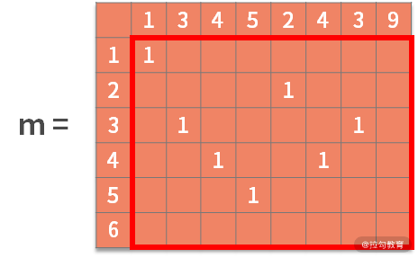
接着利用状态转移方程，去寻找最优子结构。也就是，如果 b[i] = a[j]，则 m[i,j] = m[i-1,j-1] + 1。含义为，如果决策结果是相等，则状态增加一个新的字符，进行更新。可以得到：

最终，检索这个矩阵，得到的最大数字就是最大公共子串的长度。根据其所在的位置，就能从 a 或 b 中找到最大公共子串。
代码如下：
public static void main(String[] args) {
String a = "13452439";
String b = "123456";
getCommenStr(a, b);
}
public static void getCommenStr(String a, String b) {
char[] c1 = a.toCharArray();
char[] c2 = b.toCharArray();
int[][] m = new int[c2.length+1][c1.length+1];
for (int i = 1; i <= c2.length; i++) {
for (int j = 1; j <= c1.length; j++) {
if (c2[i - 1] == c1[j - 1])
m[i][j] = m[i - 1][j - 1] + 1;
}
}
int max = 0;
int index = 0;
for (int i = 0; i <= c2.length; i++) {
for (int j = 0; j <= c1.length; j++) {
if (m[i][j] > max) {
max = m[i][j];
index = i;
}
}
}
String s = "";
for (int i = index - max; i < index; i++)
s += b.charAt(i);
System.out.println(s);
}
下面我们对代码进行解读：
主函数中定义了字符串 a 和字符串 b，随后调用动态规划代码。
进入 getCommenStr() 函数中之后，首先在第 10 行定义了二维数组。此时二维数组的维数是 7 x 9 的。这主要的原因是，后续会需要用到第一行和第一列的全零向量，作为起始条件。
接着，在第 11～16 行，利用双重循环去完成状态转移的计算。此时就得到了最关键的矩阵，如下所示：
随后的 17～26 行，我们从矩阵 m 中，找到了最大值为 3，在字符串 b 中的索引值为 4（此时 index 为 5，但别忘了我们之前额外定义了一行/一列的全零向量）。
最后，27～30 行，我们根据终点字符串索引值 4 和最大公共子串长度 3，就能找到最大公共子串在 b 中的 2～4 的位置。即 "345"。
总结
这一课时中，我们对例题做了详细的分析和讲解，重点其实是训练你的算法思维。为了检验你的学习成果，我们基于斐波那契数列的例题，再给出一个思考题，题目如下：
如果现在是个线上实时交互的系统。客户端输入 x，服务端返回斐波那契数列中的第 x 位。那么，这个问题使用上面的解法是否可行。
这里给你一个小提示，既然我这么问，答案显然是不可行的。如果不可行，原因是什么呢？我们又该如何解决？注意，题目中给出的是一个实时系统。当用户提交了 x，如果在几秒内没有得到系统响应，用户就会卸载 App 啦。
17 真题案例（二）：数据结构训练
在前面课时中，我们已经学习了解决代码问题的方法论。宏观上，它可以分为以下 4 个步骤：
- 复杂度分析。估算问题中复杂度的上限和下限。
- 定位问题。根据问题类型，确定采用何种算法思维。
- 数据操作分析。根据增、删、查和数据顺序关系去选择合适的数据结构，利用空间换取时间。
- 编码实现。
这套方法论的框架，是解决绝大多数代码问题的基本步骤。其中第 3 步，数据操作分析是数据结构发挥价值的地方。本课时，我们将继续通过经典真题案例进行数据结构训练。
数据结构训练题
例题 1：反转字符串中的单词
【题目】 给定一个字符串，逐个翻转字符串中的每个单词。例如，输入："This is a good example"，输出："example good a is This"。如果有多余的空格需要删除。
【解析】 在本课时开头，我们复习了解决代码问题的方法论，下面我们按照解题步骤进行详细分析。
首先分析一下复杂度。这里的动作可以分为拆模块和做翻转两部分。在采用比较暴力的方法时，拆模块使用一个 for 循环，做翻转也使用一个 for 循环。这样双重循环的嵌套，就是 O(n²) 的复杂度。
接下来定位问题。我们可以看到它对数据的顺序非常敏感，敏感点一是每个单词需要保证顺序；敏感点二是所有单词放在一起的顺序需要调整为逆序。我们曾学过的关于数据顺序敏感的结构有队列和栈，也许这些结构可以适用在这个问题中。此处需要逆序，栈是有非常大的可能性被使用到的。
然后我们进行数据操作分析。如果要使用栈的话，从结果出发，就需要按照顺序，把 This、is、a、good、example 分别入栈。要想把它们正确地入栈，就需要根据空格来拆分原始字符串。
因此，经过分析后，这个例子的解法为：用空格把句子分割成单词。如果发现了多余的连续空格，需要做一些删除的额外处理。一边得到单词，一边把单词放入栈中。直到最后，再把单词从栈中倒出来，形成结果字符串。

最后，我们按照上面的思路进行编码开发。代码如下：
public static void main(String[] args) {
String ss = "This is a good example";
System.out.println(reverseWords(ss));
}
private static String reverseWords(String s) {
Stack stack=new Stack();
String temp = "";
for (int i = 0; i < s.length(); i++) {
if (s.charAt(i) != ' ') {
temp += s.charAt(i);
}
else if (temp != ""){
stack.push(temp);
temp = "";
}
else{
continue;
}
}
if (temp != ""){
stack.push(temp);
}
String result = "";
while (!stack.empty()){
result += stack.pop() + " ";
}
return result.substring(0,result.length()-1);
}
下面我们对代码进行解读。 主函数中，第 1～4 行，不用过多赘述。第 7 行定义了一个栈，第 8 行定义了一个缓存字符串的变量。
接着，在第 9～20 行进入 for 循环。对每个字符分别进行如下判断：
- 如果字符不是空格，当前单词还没有结束，则放在 temp 变量后面；
- 如果字符是空格（10～12 行），说明当前单词结束了；
- 如果 temp 变量不为空（13～16 行），则入栈；
- 如果字符是空格，但 temp 变量是空的，就说明虽然单词结束了（17～19 行），但当前并没有得到新的单词。也就是连续出现了多个空格的情况。此时用 continue 语句忽略。
然后，再通过 21～23 行，把最后面的一个单词（它可能没有最后的空格帮助切分）放到栈内。此时所有的单词都完成了入栈。
最后，在 24～28 行，让栈内的字符串先后出栈，并用空格隔离开放在 result 字符串内。最后返回 result 变量。别忘了，最后一次执行 pop 语句时，多给了 result 一个空格，需要将它删除掉。这样就完成了这个问题。
这段代码采用了一层的 for 循环，显然它的时间复杂度是 O(n)。相比较于比较暴力的解法，它之所以降低了时间复杂度，就在于它开辟了栈的存储空间。所以空间复杂度也是 O(n)。
例题 2：树的层序遍历
【题目】 给定一棵树，按照层次顺序遍历并打印这棵树。例如，输入的树为：
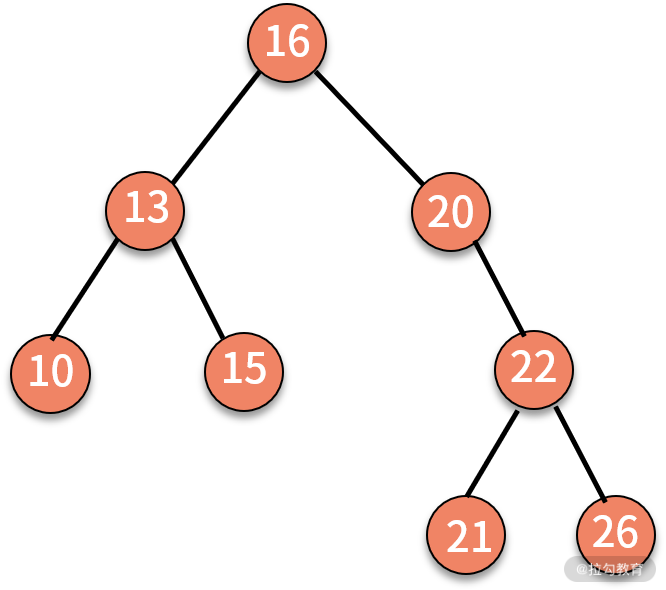
则打印 16、13、20、10、15、22、21、26。格外需要注意的是，这并不是前序遍历。
【解析】 如果你一直在学习这门课的话，一定对这道题目似曾相识。它是我们在 09 课时中留下的练习题。同时它也是高频面试题。仔细分析下这个问题，不难发现它是一个关于树的遍历问题。理论上是可以在 O(n) 时间复杂度下完成访问的。
以往我们学过的遍历方式有前序、中序和后序遍历，它们的实现方法都是通过递归。以前序遍历为例，递归可以理解为，先解决根结点，再解决左子树一边的问题，最后解决右子树的问题。这很像是在用深度优先的原则去遍历一棵树。
现在我们的问题要求是按照层次遍历，这就跟上面的深度优先的原则完全不一样了，更像是广度优先。也就是说，从遍历的顺序来看，一会在左子树、一会在右子树，会来回跳转。显然，这是不能用递归来处理的。
那么我们该如何解决呢？
我们从结果来看看这个问题有什么特点。打印的结果是 16、13、20、10、15、22、21、26。
从后往前看，可以发现：打印 21 和 26 之前，会先打印 22。这是一棵树的上下级关系；打印 10 和 15 之前，会先打印 13，这也是一棵树的上下级关系。显然，结果对上下级关系的顺序非常敏感。
接着，我们发现 13 和 10、15 之间的打印关系并不连续，夹杂着右边的结点 20。也就是说，左边的优先级大于右边大于下边。
分析到这里，你应该能找到一些感觉了吧。一个结果序列对顺序敏感，而且没有逆序的操作，满足这些特点的数据结构只有队列。所以我们猜测这个问题的解决方案，极有可能要用到队列。
队列只有入队列和出队列的操作。如果输出结果就是出队列的顺序，那这个顺序必然也是入队列的顺序，原因就在于队列的出入原则是先进先出。而入队列的原则是，上层父节点先进，左孩子再进，右孩子最后进。
因此，这道题目的解决方案就是，根结点入队列，随后循环执行结点出队列并打印结果，左孩子入队列，右孩子入队列。直到队列为空。如下图所示：

这个例子的代码如下：
public static void levelTraverse(Node root) {
LinkedList<Node> queue = new LinkedList<Node>();
Node current = null;
queue.offer(root); // 根结点入队
while (!queue.isEmpty()) {
current = queue.poll(); // 出队队头元素
System.out.print(current.data);
// 左子树不为空，入队
if (current.leftChild != null)
queue.offer(current.leftChild);
// 右子树不为空，入队
if (current.rightChild != null)
queue.offer(current.rightChild);
}
}
下面我们对代码进行解读。在这段代码中，第 2 行首先定义了一个队列 queue，并在第 4 行让根结点入队列，此时队列不为空。
接着进入一个 while 循环进行遍历。当队列不为空的时候，第 6 行首先执行出队列操作，并把结果存在 current 变量中。随后第 7 行打印 current 的数值。如果 current 还有左孩子或右孩子，则分别按顺序执行入队列的操作，这是在第 9～13 行。
经过这段代码，可以完成的是，所有顺序都按照层次顺序入队列，且左孩子优先。这样就得到了按行打印的结果。时间复杂度是 O(n)。空间复杂度由于定义了 queue 变量，因此也是 O(n)。
例题 3：查找数据流中的中位数
【题目】 在一个流式数据中，查找中位数。如果是偶数个，则返回偏左边的那个元素。
例如：
输入 1，服务端收到 1，返回 1。
输入 2，服务端收到 1、2，返回 1。
输入 0，服务端收到 0、1、2，返回 1。
输入 20，服务端收到 0、1、2、20，返回 1。
输入 10，服务端收到 0、1、2、10、20，返回 2。
输入 22，服务端收到 0、1、2、10、20、22，返回 2。
【解析】 这道题目依旧是按照解决代码问题的方法论的步骤进行分析。
先看一下复杂度。显然，这里的问题定位就是个查找问题。对于累积的客户端输入，查找其中位数。中位数的定义是，一组数字按照从小到大排列后，位于中间位置的那个数字。
根据这个定义，最简单粗暴的做法，就是对服务端收到的数据进行排序得到有序数组，再通过 index 直接取出数组的中位数。排序选择快排的时间复杂度是 O(nlogn)。
接下来分析一下这个查找问题。该问题有一个非常重要的特点，我们注意到，上一轮已经得到了有序的数组，那么这一轮该如何巧妙利用呢？
举个例子，如果采用全排序的方法，那么在第 n 次收到用户输入时，则需要对 n 个数字进行排序并输出中位数，此时服务端已经保存了这 n 个数字的有序数组了。而在第 n+1 次收到用户输入时，是不需要对 n+1 个数字整体排序的，仅仅通过插入这个数字到一个有序数组中就可以完成排序。显然，利用这个性质后，时间复杂度可以降低到 O(n)。
接着，我们从数据的操作层面来看，是否仍然有优化的空间。对于这个问题，其目标是输出中位数。只要你能在 n 个数字中，找到比 x 小的 n/2 个数字和比 x 大的 n/2 个数字，那么 x 就是最终需要返回的结果。
基于这个思想，可以动态的维护一个最小的 n/2 个数字的集合，和一个最大的 n/2 个数字的集合。如果数字是奇数个，就我们就在左边最小的 n/2 个数字集合中多存一个元素。
例如，当前服务端收到的数字有 0、1、2、10、20。如果用两个数据结构分别维护 0、1、2 和 10、20，那么当服务端收到 22 时，就可以根据 1、2、10 和 22 的大小关系，判断出中位数到底是多少了。
具体而言，当前的中位数是 2，额外增加一个数字之后，新的中位数只可能发生在 1、2、10 和新增的一个数字之间。不管中位数发生在哪里，都可以通过一些 if-else 语句进行查找，那么时间复杂度就是 O(1)。
虽然这种方法对于查找中位数的时间复杂度降低到了 O(1)，但是它还需要有一些后续的处理，这主要是辅助下一次的请求。
例如，当前用两个数据结构分别维护着 0、1、2 和 10、20，那么新增了 22 之后，这两个数据结构如何更新。这就是原问题最核心的瓶颈了。
从结果来看，如果新增的数字比较小，那么就添加到左边的数据结构，并且把其中最大的 2 新增到右边，以保证二者数量相同。如果新增的数字比较大，那么就放到右边的数据结构，以保证二者数量相同。在这里，可能需要的数据操作包括，查找、中间位置的新增、最后位置的删除。
顺着这个思路继续分析，有序环境中的查找可以采用二分查找，时间复杂度是 O(logn)。最后位置的删除，并不牵涉到数据的挪移，时间复杂度是 O(1)。中间位置的新增就麻烦了，它需要对数据进行挪移，时间复杂度是 O(n)。如果要降低它的复杂度就需要用一些其他手段了。
在这个问题中，有一个非常重要的信息，那就是题目只要中位数，而中位数左边和右边是否有序不重要。于是，我们需要用到这样的数据结构，大顶堆和小顶堆。
- 大顶堆是一棵完全二叉树，它的性质是，父结点的数值比子结点的数值大；
- 小顶堆的性质与此相反，父结点的数值比子结点的数值小。
有了这两个堆之后，我们的操作步骤就是，将中位数左边的数据都保存在大顶堆中，中位数右边的数据都保存在小顶堆中。同时，还要保证两个堆保存的数据个数相等或只差一个。这样，当有了一个新的数据插入时，插入数据的时间复杂度是 O(logn)。而插入后的中位数，肯定在大顶堆的堆顶元素上，因此，找到中位数的时间复杂度就是 O(1)。
我们把这个思路，用代码来实现，则有：
import java.util.PriorityQueue;
import java.util.Comparator;
public class testj {
int count = 0;
static PriorityQueue<Integer> minHeap = new PriorityQueue<>();
static PriorityQueue<Integer> maxHeap = new PriorityQueue<>(new Comparator<Integer>() {
@Override
public int compare(Integer o1, Integer o2) {
return o2.compareTo(o1);
}
});
public void Insert(Integer num) {
if (count % 2 == 0) {
minHeap.offer(num);
maxHeap.offer(minHeap.poll());
} else {
maxHeap.offer(num);
minHeap.offer(maxHeap.poll());
}
count++;
System.out.println(testj.GetMedian());
}
public static int GetMedian() {
return maxHeap.peek();
}
public static void main(String[] args) {
testj t = new testj();
t.Insert(1);
t.Insert(2);
t.Insert(0);
t.Insert(20);
t.Insert(10);
t.Insert(22);
}
}
我们对代码进行解读： 在第 6～12 行，分别定义了最小堆和最大堆。第 5 行的变量，保存的是累积收到的输入个数，可以用来判断奇偶。接着我们看主函数的第 30～38 行。在这里，模拟了流式数据，先后输入了 1、2、0、20、10、22，并调用了 Inset() 函数。
从第 14 行开始，Inset() 函数中，需要判断 count 的奇偶性：如果 count 是偶数，则新的数据需要先加入最小堆，再弹出最小堆的堆顶，最后把弹出的数据加入最大堆。如果 count 是奇数，则新的数据需要先加入最大堆，再弹出最大堆的堆顶，最后把弹出的数据加入最小堆。
执行完后，count 加 1。然后调用 GetMedian() 函数来寻找中位数，GetMedian() 函数通过 27 行直接返回最大堆的对顶，这是因为我们约定中位数在偶数个的时候，选择偏左的元素。
最后，我们给出插入 22 的执行过程，如下图所示：

总结
这一课时主要围绕数据结构展开问题的分析和讨论。对于树的层次遍历，我们再拓展一下。
如果要打印的不是层次，而是蛇形遍历，又该如何实现呢？蛇形遍历就是 s 形遍历，即奇数层从左到右，偶数层从右到左。如果是例题 2 的树，则蛇形遍历的结果就是 16、20、13、10、15、22、26、21。我们就把这个问题当作本课时的练习题。
18 真题案例（三）：力扣真题训练
在备战公司面试的时候，相信你一定也刷过力扣（leetcode）的题目吧。力扣的题目种类多样，而且有虚拟社区功能，因此很多同学都喜欢在上面分享习题答案。
毫无疑问，如果你完整地刷过力扣题库，在一定程度上能够提高你面试通过的可能性。因此，在本课时，我选择了不同类型、不同层次的力扣真题，我会通过这些题目进一步讲述和分析解决数据结构问题的方法。
力扣真题训练
在看真题前，我们再重复一遍通用的解题方法论，它可以分为以下 4 个步骤：
- 复杂度分析。估算问题中复杂度的上限和下限。
- 定位问题。根据问题类型，确定采用何种算法思维。
- 数据操作分析。根据增、删、查和数据顺序关系去选择合适的数据结构，利用空间换取时间。
- 编码实现。
例题 1：删除排序数组中的重复项
【题目】 给定一个排序数组，你需要在原地删除重复出现的元素，使得每个元素只出现一次，返回移除后的数组和新的长度，你不需要考虑数组中超出新长度后面的元素。
要求：空间复杂度为 O(1)，即不要使用额外的数组空间。
例如，给定数组 nums = [1,1,2]，函数应该返回新的长度 2，并且原数组 nums 的前两个元素被修改为 1, 2。又如，给定 nums = [0,0,1,1,1,2,2,3,3,4]，函数应该返回新的长度 5，并且原数组 nums 的前五个元素被修改为 0, 1, 2, 3, 4。
【解析】 这个题目比较简单，应该是送分题。不过，面试过程中的送分题也是送命题。这是因为，如果送分题没有拿下，就会显得非常说不过去。
我们先来看一下复杂度。这里并没有限定时间复杂度，仅仅是要求了空间上不能定义新的数组。
然后我们来定位问题。显然这是一个数据去重的问题。
按照解题步骤，接下来我们需要做数据操作分析。 在一个去重问题中，每次遍历的新的数据，都需要与已有的不重复数据进行对比。这时候，就需要查找了。整体来看，遍历嵌套查找，就是 O(n²) 的复杂度。如果要降低时间复杂度，那么可以在查找上入手，比如使用哈希表。不过很可惜，使用了哈希表之后，空间复杂度就是 O(n)。幸运的是，原数组是有序的，这就可以让查找的动作非常简单了。
因此，解决方案上就是，一次循环嵌套查找完成。查找不可使用哈希表，但由于数组有序，时间复杂度是 O(1)。因此整体的时间复杂度就是 O(n)。
我们来看一下具体方案。既然是一次循环，那么就需要一个 for 循环对整个数组进行遍历。每轮遍历的动作是查找 nums[i] 是否已经出现过。因为数组有序，因此只需要去对比 nums[i] 和当前去重数组的最大值是否相等即可。我们用一个 temp 变量保存去重数组的最大值。
如果二者不等，则说明是一个新的数据。我们就需要把这个新数据放到去重数组的最后，并且修改 temp 变量的值，再修改当前去重数组的长度变量 len。直到遍历完，就得到了结果。

最后，我们按照上面的思路进行编码开发，代码如下：
public static void main(String[] args) {
int[] nums = {0,0,1,1,1,2,2,3,3,4};
int temp = nums[0];
int len = 1;
for (int i = 1; i < nums.length; i++) {
if (nums[i] != temp) {
nums[len] = nums[i];
temp = nums[i];
len++;
}
}
System.out.println(len);
for (int i = 0; i < len; i++) {
System.out.println(nums[i]);
}
}
我们对代码进行解读。 在这段代码中，第 3～4 行进行了初始化，得到的 temp 变量是数组第一个元素，len 变量为 1。
接着进入 for 循环。如果当前元素与去重的最大值不等（第 6 行），则新元素放入去重数组中（第 7 行），并且更新去重数组的最大值（第 8 行），再让去重数组的长度加 1（第 9 行）。最后得到结果后，再打印出来，第 12～15 行。
例题 2：查找两个有序数组合并后的中位数
【题目】 两个有序数组查找合并之后的中位数。给定两个大小为 m 和 n 的正序（从小到大）数组 nums1 和 nums2。请你找出这两个正序数组合在一起之后的中位数，并且要求算法的时间复杂度为 O(log(m + n))。
你可以假设 nums1 和 nums2 不会同时为空，所有的数字全都不相等。还可以再假设，如果数字个数为偶数个，中位数就是中间偏左的那个元素。
例如：nums1 = [1, 3, 5, 7, 9]
nums2 = [2, 4, 8, 12]
输出 5。
【解析】 这个题目是我个人非常喜欢的，原因是，它所有的解法和思路，都隐含在了题目的描述中。如果你具备很强的分析和解决问题的能力，那么一定可以找到最优解法。
我们先看一下复杂度的分析。这里的 nums1 和 nums2 都是有序的，这让我们第一时间就想到了归并排序。方法很简单，我们把两个数组合并，就得到了合在一起后的有序数组。这个动作的时间复杂度是 O(m+n)。接着，我们从数组中就可以直接取出中位数了。很可惜，这并不满足题目的时间复杂度 O(log(m + n)) 的要求。
接着，我们来看一下这个问题的定位。题目中有一个关键字，那就是“找出”。很显然，我们要找的目标就藏在 nums1 或 nums2 中。这明显就是一个查找问题。而在查找问题中，我们学过的知识是分治法下的二分查找。
回想一下，二分查找适用的重要条件就是，原数组有序。恰好，在这个问题中 nums1 和 nums2 分别都是有序的。而且二分查找的时间复杂度是 O(logn)，这和题目中给出的时间复杂度 O(log(m + n)) 的要求也是不谋而合。因此，经过分析，我们可以大胆猜测，此题极有可能要用到二分查找。
我们再来看一下数据结构方面。如果要用二分查找，就需要用到若干个指针，去约束查找范围。除此以外，并不需要去定义复杂的数据结构。也就是说，空间复杂度是 O(1) 。
好了，接下来，我们就来看一下二分查找如何能解决这个问题。二分查找需要一个分裂点，去把原来的大问题，拆分成两个部分，并在其中一部分继续执行二分查找。既然是查找中位数，我们不妨先试试以中位数作为切分点，看看会产生什么结果。如下图所示：
经过切分后，两个数组分别被拆分为 3 个部分，合在一起是 6 个部分。二分查找的思路是，需要从这 6 个部分中，剔除掉一些，让查找的范围缩小。那么，我们来思考一个问题，在这 6 个部分中，目标中位数一定不会发生在哪几个部分呢？
中位数有一个重要的特质，那就是比中位数小的数字个数，和比中位数大的数字个数，是相等的。围绕这个性质来看，中位数就一定不会发生在 C 和 D 的区间。
如果中位数在 C 部分，那么在 nums1 中，比中位数小的数字就会更多一些。因为 4 < 5（nums2 的中位数小于 nums1 的中位数），所以在 nums2 中，比中位数小的数字也会更多一些（最不济也就是一样多）。因此，整体来看，中位数不可能在 C 部分。同理，中位数也不会发生在 D 部分。
接下来，我们就可以在查找范围内，剔除掉 C 部分（永远比中位数大的数字）和 D 部分（永远比中位数小的数字），这样我们就成功地完成了一次二分动作，缩小了查找范围。然而这样并没结束。剔除掉了 C 和 D 之后，中位数有可能发生改变。这是因为，C 部分的数字个数和 D 部分数字的个数是不相等的。剔除不相等数量的“小数”和“大数”后，会造成中位数的改变。
为了解决这个问题，我们需要对剔除的策略进行修改。一个可行的方法是，如果 C 部分数字更少为 p 个，则剔除 C 部分；并只剔除 D 部分中的 p 个数字。这样就能保证，经过一次二分后，剔除之后的数组的中位数不变。

应该剔除 C 部分和 D 部分。但 D 部分更少，因此剔除 D 和 C 中的 9。
二分查找还需要考虑终止条件。对于这个题目，终止条件必然是某个数组小到无法继续二分的时候。这是因为，每次二分剔除掉的是更少的那个部分。因此，在终止条件中，查找范围应该是一个大数组和一个只有 1～2 个元素的小数组。这样就需要根据大数组的奇偶性和小数组的数量，拆开 4 个可能性：
可能性一：nums1 奇数个，nums2 只有 1 个元素。例如，nums1 = [a, b, c, d, e]，nums2 = [m]。此时，有以下 3 种可能性：
- 如果 m < b，则结果为 b；
- 如果 b < m < c，则结果为 m；
- 如果 m > c，则结果为 c。
这 3 个情况，可以利用 "A?B:C" 合并为一个表达式，即 m < b ? b : (m < c ? m : c)。
可能性二：nums1 偶数个，nums2 只有 1 个元素。例如，nums1 = [a, b, c, d, e, f]，nums2 = [m]。此时，有以下 3 种可能性：
- 如果 m < c，则结果为 c；
- 如果 c < m < d，则结果为 m；
- 如果m > d，则结果为 d。
这 3 个情况，可以利用"A?B:C"合并为一个表达式，即 m < c ? c : (m < d? m : d)。
可能性三：nums1 奇数个，nums2 有 2 个元素。例如，nums1 = [a, b, c, d, e]，nums2 = [m,n]。此时，有以下 6 种可能性：
- 如果 n < b，则结果为 b；
- 如果 b < n < c，则结果为 n；
- 如果 c < n < d，则结果为 max(c,m)；
- 如果 n > d，m < c，则结果为 c；
- 如果 n > d，c < m < d，则结果为 m；
- 如果 n > d，m > d，则结果为 d。
其中，4～6 可以合并为，如果 n > d，则返回 m < c ? c : (m < d ? m : d)。

可能性四：nums1 偶数个，nums2 有 2 个元素。例如，nums1 = [a, b, c, d, e, f]，nums2 = [m,n]。此时，有以下 6 种可能性：
- 如果 n < b，则结果为 b；
- 如果 b < n < c，则结果为 n；
- 如果 c < n < d，则结果为 max(c,m)；
- 如果 n > d，m < c，则结果为 c；
- 如果 n > d，c < m < d，则结果为 m；
- 如果 n > d，m > d，则结果为 d。与可能性 3 完全一致。
不难发现，终止条件都是 if 和 else 的判断，虽然逻辑有点复杂，但时间复杂度是 O(1) 。为了简便，我们可以假定，nums1 的数字数量永远是不少于 nums2 的数字数量。
因此，我们可以编写如下的代码：
public static void main(String[] args) {
int[] nums1 = {1,2,3,4,5};
int[] nums2 = {6,7,8};
int median = getMedian(nums1,0, nums1.length-1, nums2, 0, nums2.length-1);
System.out.println(median);
}
public static int getMedian(int[] a, int begina, int enda, int[] b, int beginb, int endb ) {
if (enda - begina == 0) {
return a[begina] > b[beginb] ? b[beginb] : a[begina];
}
if (enda - begina == 1){
if (a[begina] < b[beginb]) {
return b[beginb] > a[enda] ? a[enda] : b[beginb];
}
else {
return a[begina] < b[endb] ? a[begina] : b[endb];
}
}
if (endb-beginb < 2) {
if ((endb - beginb == 0) && (enda - begina)%2 == 0) {
int m = b[beginb];
int bb = a[(enda + begina)/2 - 1];
int c = a[(enda + begina)/2];
return (m < bb) ? bb : (m < c ? m : c);
}
else if ((endb - beginb == 0) && (enda - begina)%2 != 0) {
int m = b[beginb];
int c = a[(enda + begina)/2];
int d = a[(enda + begina)/2 + 1];
return m < c ? c : (m < d ? m : d);
}
else {
int m = b[beginb];
int n = b[endb];
int bb = a[(enda + begina)/2 - 1];
int c = a[(enda + begina)/2];
int d = a[(enda + begina)/2 + 1];
if (n<bb) {
return bb;
}
else if (n>bb && n < c) {
return n;
}
else if (n > c && n < d) {
return m > c ? m : c;
}
else {
return m < c ? c : (m<d ? m : d);
}
}
}
else {
int mida = (enda + begina)/2;
int midb = (endb + beginb)/2;
if (a[mida] < b[midb]) {
int step = endb - midb;
return getMedian(a,begina + step, enda, b, beginb, endb - step);
}
else {
int step = midb - beginb;
return getMedian(a,begina,enda - step, b, beginb+ step, endb );
}
}
我们对代码进行解读。在第 1～6 行是主函数，进入 getMedian() 中，入参分别是 nums1 数组，nums1 数组搜索范围的起止索引；nums2 数组，nums2 数组搜索范围的起止索引。并进入第 8 行的函数中。
在 getMedian() 函数中，第 53～64 行是二分策略，第 9～52 行是终止条件。我们先看二分部分。通过第 56 行，判断 a 和 b 的中位数的大小关系，决策剔除哪个部分。并在第 58 行和 62 行，递归地执行二分动作缩小范围。
终止条件的第一种可能性在第 21～26 行，第二种可能性在 27～32 行，第三种和第四种可能性完全一致，在 33～52 行。另外，在 9～19 行中处理了两个特殊情况，分别是第 9～11 行，处理了两个数组都只剩 1 个元素的情况；第 12～19 行，处理了两个数组都只剩 2 个元素的情况。
这段代码的逻辑并不复杂，但写起来还是有很多情况需要考虑的。希望你能认真阅读。
总结
综合来看，力扣的题目还是比较受到行业的认可的。一方面是它的题库内题目数量多，另一方面是很多人会在上面提交相同题目的不同解法和答案。但对初学者来说，它还是有一些不友好的。这主要在于，它的定位只是题库，并不能提供完整的解决问题的思维逻辑和方法论。
本课时，虽然我们只是举了两个例题，但其背后解题的思考方法是通用的。建议你能围绕本课程学到的解题方法，利用空闲时间去把力扣热门的题目都练习一遍。
练习题
最后，我们再给出一道练习题。给定一个链表，删除链表的倒数第 n 个节点。
例如，给定一个链表: 1 -> 2 -> 3 -> 4 -> 5, 和 n = 2。当删除了倒数第二个节点后，链表变为 1 -> 2 -> 3 -> 5。
你可以假设，给定的 n 是有效的。额外要求就是，要在一趟扫描中实现，即时间复杂度是 O(n)。这里给你一个提示，可以采用快慢指针的方法。
19 真题案例（四）：大厂真题实战演练
这个课时，我们找一些大厂的真题进行分析和演练。在看真题前，我们依然是再重复一遍通用的解题方法论，它可以分为以下 4 个步骤：
- 复杂度分析。估算问题中复杂度的上限和下限。
- 定位问题。根据问题类型，确定采用何种算法思维。
- 数据操作分析。根据增、删、查和数据顺序关系去选择合适的数据结构，利用空间换取时间。
- 编码实现。
大厂真题实战演练
例题 1：判断数组中所有的数字是否只出现一次
【题目】 判断数组中所有的数字是否只出现一次。给定一个个数字 arr，判断数组 arr 中是否所有的数字都只出现过一次。约束时间复杂度为 O(n)。例如，arr = {1, 2, 3}，输出 YES。又如，arr = {1, 2, 1}，输出 NO。
【解析】 这个题目相当于一道开胃菜，也是一道送分题。我们还是严格围绕解题方法论，去拆解这个问题。
我们先来看一下复杂度。判断是否所有数字都只出现一次，很显然我们需要对每个数字进行遍历，因此时间复杂度为 O(n)。而每次的遍历，都要判断当前元素在先前已经扫描过的区间内是否出现过。由于此时并没有额外信息（例如数组有序）输入，因此，还需要 O(n) 的时间进行判断。综合起来看就是 O(n²) 的时间复杂度。这显然与题目的要求不符合。
然后我们来定位问题。根据题目来看，你可以理解这是一个数据去重的问题。但是由于我们并没有学过太多解决这类问题的算法思维，因此我们不妨再从数据操作的视角看一下。
按照解题步骤，接下来我们需要做数据操作分析。 每轮迭代需要去判断当前元素在先前已经扫描过的区间内是否出现过，这就是一个查找的动作。也就是说，每次迭代需要对数据进行数值特征方面的查找。这个题目只需要判断是否有重复，并不需要新增、删除的动作。
在优化数值特性的查找时，我们应该立马想到哈希表。因为它能在 O(1) 的时间内完成查找动作。这样，整体的时间复杂度就可以被降低为 O(n) 了。与此同时，空间复杂度也提高到了 O(n)。
根据上面的思路进行编码开发，具体代码如下：
public static void main(String[] args) {
int[] arr = { 1, 2, 3 };
boolean isUniquel = isUniquel(arr);
if (isUniquel) {
System.out.println("YES");
} else {
System.out.println("NO");
}
}
public static boolean isUniquel(int[] arr) {
Map<Integer, Integer> d = new HashMap<>();
for (int i = 0; i < arr.length; i++) {
if (d.containsKey(arr[i])) {
return false;
}
d.put(arr[i], 1);
}
return true;
}
我们对代码进行解读。在主函数第 1～9 行中，调用 isUniquel() 函数进行判断，并根据结果打印 YES 或者 NO。在函数 isUniquel() 内，第 12 行定义了一个 k-v 结构的 map。
接着 13 行开始，对 arr 的每个元素进行循环。如果 d 中已经存在 arr[i] 了，那么就返回 false（第 14～16 行）；否则就把 arr[i],1 的 k,v 关系放进 d 中（第 17 行）。
这道题目比较简单，属于数据结构的应用范畴。
例题 2：找出数组中出现次数超过数组长度一半的元素
【题目】 假设在一个数组中，有一个数字出现的次数超过数组长度的一半，现在要求你找出这个数字。
你可以假设一定存在这个出现次数超过数组长度的一半的数字，即不用考虑输入不合法的情况。要求时间复杂度是 O(n)，空间复杂度是 O(1)。例如，输入 a = {1,2,1,1,2,4,1,5,1}，输出 1。
【解析】先来看一下时间复杂度的分析。一个直观想法是，一边扫描一边记录每个元素出现的次数，并利用 k-v 结构的哈希表存储。例如，一次扫描后，得到元素-次数（1-5，2-2，4-1，5-1）的字典。接着再在这个字典里去找到次数最多的元素。这样的时间复杂度和空间复杂度都是 O(n)。不过可惜，这并不满足题目的要求。
接着，我们需要定位问题。 从问题出发，这并不是某个特定类型的问题。而且既然空间复杂度限定是 O(1)，也就意味着不允许使用任何复杂的数据结构。也就是说，数据结构的优化不可以用，算法思维的优化也不可以用。
面对这类问题，我们只能从问题出发，看还有哪些信息我们没有使用上。题目中有一个重要的信息是，这个出现超过半数的数字一定存在。回想我们上边的解法，它可以找到出现次数最多的数字，但没有使用到“必然超过半数”这个重要的信息。
分析到这里，我们不妨想一下这个场景。假设现在三国交战，其中 A 国的兵力比 B 国和 C 国的总和还多。那么人们就常常会说，哪怕是 A 国士兵“一个碰一个”地和另外两国打消耗战，都能取得最后的胜利。
说到这里，不知道你有没有一些发现。“一个碰一个”的思想，那就是如果相等则加 1，如果不等则减 1。这样，只需要记录一个当前的缓存元素变量和一个次数统计变量就可以了。
根据上面的思路进行编码开发，具体代码为：
public static void main(String[] args) {
int[] a = {1,2,2,1,1,4,1,5,1};
int result = a[0];
int times = 1;
for (int i = 1; i < a.length; i++) {
if (a[i] != result) {
times--;
}
else {
times++;
}
if (times == -1) {
times = 1;
result = a[i];
}
}
System.out.println(result);
}
我们对代码进行解读。第 3～4 行，初始化变量，结果 result 赋值为 a[0]，次数 times 为 1。
接着进入循环体，执行“一个碰一个”，即第 6～11 行：
- 如果当前元素与 a[i] 不相等，次数减 1；
- 如果当前元素与 a[i] 相等，次数加 1。
当次数降低为 -1 时，则发生了结果跳转。此时，result 更新为 a[i]，次数重新置为 1。最终我们就在 O(n) 的时间复杂度下、O(1 )的空间复杂度下，找到了结果。
例题 3：给定一个方格棋盘，从左上角出发到右下角有多少种方法
【题目】 在一个方格棋盘里，左上角是起点，右下角是终点。每次只能向右或向下，移向相邻的格子。同时，棋盘中有若干个格子是陷阱，不可经过，必须绕开行走。
要求用动态规划的方法，求出从起点到终点总共有多少种不同的路径。例如，输入二维矩阵 m 代表棋盘，其中，1 表示格子可达，-1 表示陷阱。输出可行的路径数量为 2。
【解析】 题目要求使用动态规划的方法，这是我们解题的一个难点，也正是因为这一点限制才让这道题目区别于常见的题目。
对于 O2O 领域的公司，尤其对于经常要遇到有限资源下，去最优化某个目标的岗位时，动态规划应该是高频考察的内容。我们依然是围绕动态规划的解题方法，从寻找最优子结构的视角去解决问题。
千万别忘了，动态规划的解题方法是，分阶段、找状态、做决策、状态转移方程、定目标、寻找终止条件。
我们先看一下这个问题的阶段。很显然，从起点开始，每一个移动动作就是一个阶段的决策动作，移动后到达的新的格子就是一个状态。
状态的转移和先前的最短路径问题非常相似。假定棋盘的维度是例子中的 3 x 6，那么起点标记为 m[0,0]，终点标记为 m[2,5]。利用 V(m[i,j]) 表示从起点到 m[i,j] 的可行路径总数。那么则有，
V(m[i,j]) = V(m[i-1,j]) + V(m[i,j-1])。
也就是说，到达某个格子的路径数，等于到达它左边格子的路径数，加上到达它上边格子的路径数。我们的目标也就是根据 m 矩阵，求解出 V(m[2,5])。
最后再来看一下终止条件。起点到起点只有一种走法，因此，V(m[0,0]) = 1。同时，所有棋盘外的区域也是不可抵达的，因此 V(m[-, ]) = 0，V(m[ , - ]) = 0。需要注意的是，根据题目的信息，标记为 -1 的格子是不得到达的。也就是说，如果 m[i,j] 为 -1，则 V(m[i,j]) = 0。
分析到了这里，我们可以得出了一个可行的解决方案。根据状态转移方程，就能寻找到最优子结构。即 V(m[i,j]) = V(m[i-1,j]) + V(m[i,j-1])。
很显然，我们可以用递归来实现。其他需要注意的地方，例如终止条件、棋盘外区域以及棋盘内不可抵达的格子，我们都已经定义好。接下来就可以进入开发阶段了。具体代码如下：
public static void main(String[] args) {
int[][] m = {{1,1, 1, 1, 1,1}, {1,1,-1,-1,1,1}, {1,1,-1, 1,-1,1}};
int path = getpath(m,2,5);
System.out.println(path);
}
public static int getpath(int[][] m, int i, int j) {
if (m[i][j] == -1) {
return 0;
}
if ((i > 0) && (j > 0)) {
return getpath(m, i-1, j) + getpath(m, i, j-1);
}
else if ((i == 0) && (j > 0)) {
return getpath(m, i, j-1);
}
else if ((i > 0) && (j == 0)){
return getpath(m, i-1, j);
}
else {
return 1;
}
}
我们对代码进行解读。第 1～5 行为主函数。在主函数中，定义了 m 数组，就是输入的棋盘。在其中，数值为 -1 表示不可抵达。随后第 3 行代码调用 getpath 函数来计算从顶点到 m[2,5] 位置的路径数量。
接着进入第 7～23 行的getpath()函数，用来计算到达 m[i,j] 的路径数。在第 8～10 行进行判断：如果 m[i][j ]== -1，也就是当前格子不可抵达，则无须任何计算，直接返回 0 即可。如果 m[i][j] 不等于 -1，则继续往下判断。
如果 i 和 j 都是正数，也就是说，它们不在边界上。那么根据状态转移方程，就能得到第 12 行的递归执行动作，即到达 m[i,j] 的路径数，等于到达 m[i-1,j] 的路径数，加上到 达 m[i,j-1] 的路径数。
如果 i 为 0，而 j 还是大于 0 的，也就是说此时已经到了最左边的格子了，则直接返回 getpath(m, i, j-1) 就可以了。
如果 i 为正，而 j 已经变为 0 了，同理直接返回 getpath(m, i-1, j) 就可以了。
剩下的 else 判断是，如果 i 和 j 都变成了 0，则说明在起点。此时起点到起点的路径数是 1，这就是终止条件。
根据这个例子不难发现，动态规划的代码往往并不复杂。关键在于你能否把阶段、状态、决策、状态转移方程和终止条件定义清楚。
总结
在备战大厂面试时，一定要加强问题解决方法论的沉淀。绝大多数一线的互联网公司讲究的是解决问题的规范性，这就决定了其更关注的是问题解决过程的步骤、方法或体系，而不仅仅是解决后的结果。
练习题
下面我们给出一个练习题，帮助你巩固本课时讲解的解题思路和方法。
【题目】 小明从小就喜欢数学，喜欢在笔记里记录很多表达式。他觉得现在的表达式写法很麻烦，为了提高运算符优先级，不得不添加很多括号。如果不小心漏了一个右括号的话，就差之毫厘，谬之千里了。
因此他改用前缀表达式，例如把 (2 + 3) * 4写成* + 2 3 4，这样就能避免使用括号了。这样的表达式虽然书写简单，但计算却不够直观。请你写一个程序帮他计算这些前缀表达式。
在这个题目中，输入就是前缀表达式，输出就是计算的结果。你可以假设除法为整除，即“5/3=1”。例如，输入字符串为 + 2 3，输出 5；输入字符串为 * + 2 2 3，输出为 12；输入字符串为 * 2 + 2 3，输出为 10。
我们给出一些提示。假设输入字符串为 * 2 + 2 3，即 2*(2+3)。第一个字符为运算符号 *，它将对两个数字进行乘法。如果后面紧接着的字符不全是数字字符，那就需要暂存下来，先计算后面的算式。一旦后面的计算完成，就需要接着从后往前去继续计算。
因为从后往前是一种逆序动作，我们能够很自然地想到可以用栈的数据结构进行存储。你可以尝试利用栈，去解决这个问题。
20 代码之外，技术面试中你应该具备哪些软素质？
前面课时中，我们完成了这个专栏覆盖的专业知识（也就是硬素质）的学习。最后两个课时，是这个专栏的特别放送。我们会聚焦在面试的场景，看一下在面试过程中如何运用所学知识，并结合一定的软素质技巧，来拿到心仪的 offer。本课时，我们将围绕面试应该具备的软素质能力展开分析。
技术面试的流程
从本质来看，技术面试就是一次交流和讨论。你作为候选人一定不可以降低身份，表现出求着对方收留的那种感觉。面试很像是相亲，是一种双向选择的过程。如果交流下来，你不认可面试官，那么也可以重新寻找别的求职机会。
面试通过与否取决于面试官。在面试的过程中，你一直在动态地维护一个你在面试官心中好感度的得分。你在面试的过程中，不断地展现出你的优秀，那么这个好感分就会越来越高；反之，则会越来越低。最终，面试结束之后，面试官会根据心中的好感分来决定候选人的去留。
求职开始于简历，这是一个预面试的过程。只有简历通过了，才可能进入到面试环节。技术面试的时长在 60 分钟左右，一般可以拆解为自我介绍、项目介绍、技术考察、手写代码和开放性问题。因此，从流程来看，你必须在简历筛查、自我介绍、项目介绍、技术考察、手写代码和开放性问题，这六个环节都做到较好，才有机会通过面试。接下来，我们将对技术面试的涉及的 6 个环节逐一进行分析。
技术面试各个环节的能力分析
这里需要特别说明一下，以下分析只针对互联网大厂技术研发的求职。
简历筛查
先抛出结论。简历是第一印象，第一印象奠定了你在面试官心中的形象。其实，从简历就能看出候选人对问题的理解程度、大致的段位、求职预期、甚至是面试的结果。
举例而言，简历中如果写了政治面貌、户籍、3 年前获得的奖学金情况等信息，就能得到下面的结论，这个候选人眼界可能比较有限、对事情重要性的判断能力可能不足。原因在于，这些信息并不是你这次求职的加分项（虽然也不是减分项），但写在仅有一张纸篇幅的简历中，就显得信息很冗余了。
根据我的经验，好的简历要满足以下 3 个必要条件，分别是信息完备、抽象概括、重点突出。
- 信息完备，指的是必备的东西不能缺。例如，姓名、学历、联系方式、工作经历等。
- 抽象概括，指的是可有可无的东西不要写。例如，研究生的导师姓名（除非是院士级的）、政治面貌、户籍等。
- 重点突出，指的是对你有利的东西要放大加粗。例如，电话号、S 绩效、系统性能提高 50% 等。
自我介绍
如果你通过了简历的筛查，那么就会很快地收到面试邀请。在大部分面试中，第一个环节就是自我介绍。很多人会忽视自我介绍，但我想说的是，自我介绍是面试过程的第一个环节，也同样是奠定第一印象的环节，更是被很多候选人忽视的环节。
自我介绍建议时长控制在 5 分钟左右。你只需要介绍自己的基本情况就可以，不要太深入地介绍项目。尽量按时间顺序，从大学开始分阶段进行介绍，然后高度抽象总结出来，以 10 句话左右为限制。说的时候语速放慢、吐字清晰，注意抑扬顿挫。
在自我介绍的环节中，重点明明是介绍自己，但很多候选人却不知不觉地将自我介绍变成了项目介绍。不仅讲了项目的技术方案，还详细介绍了技术细节，最终啰里八嗦地说了十多分钟。面试官打断的话，候选人不开心，可能还会跑去脉脉吐槽说面试官不尊重人。面试官不打断的话，这样的自我介绍就是浪费彼此时间，最终的结果只有淘汰。
在准备面试前，你不妨做这样一个测试。首先，尝试给自己的父母做一遍自我介绍。然后，喝口水或者上个厕所。接着，过 10 分钟，再给自己的父母做一遍自我介绍。如果你两次自我介绍的内容、话术、吐字基本相同，那么说明你在自我介绍环节的准备已经很充分了。如果两次自我介绍的差距比较大，那么说明你的准备还很不充分。
讲到这里，我想到了曾经面试过的一个候选人，他当时带着一份自我介绍的稿子来参加面试。虽然有很强的背诵感，但我觉得这样的态度很好。因为他自我介绍的每块内容、每句话，都是他精挑细选、仔细打磨后的。这样的充分准备，至少让我觉得我们的沟通效率会很高。
项目介绍
项目介绍一般需要 25 分钟左右，包括候选人自己阐述项目核心内容，以及面试官就不明确的地方进行发问。同样，项目介绍也是很多人所忽视的内容。很多候选人会错误地认为，对于自己亲手做过的项目，细节都了如指掌。即使别人问非常细节的问题，也不必担心回答不出。这种观点大错特错。
的确，面试官会关注你过往项目的实现方法、技术细节，但他应该会更关注你项目背后的问题定位、目标定义、技术选型。简而言之，就是到底你遇到了什么问题，导致你用了这个方法做了这么一件事情。
根据我面试候选人的结果来看，很多底层的技术研发工程师都在瞎忙。说得讽刺一些，就好像是电影《国产凌凌漆》中的达文西一样。记得剧中的达文西曾经发明了一款太阳能手电筒。它的功能是，手电筒在有光的情况下就会亮，在没有光的时候就绝对不会亮。很显然，这是一件毫无用处的发明。工程师就像是一个系统的发明者。如果每天都是瞎忙的话，就很可能用了很酷炫的技术，做了一件毫无用处的事情。
关于项目介绍，我在这里给你提出 3 个问题，你可以结合自己以前的项目尝试回答。
问题 1：在项目中，你解决了什么问题？不解决会有什么后果？
这个问题想问的其实是 Why。候选人切记不可上来就说，我做了什么事情。正确的回答应该从问题出发。一定是公司遇到了某个必须解决的问题（系统问题、业务问题），最终导致你去做了什么对应的事情。
问题 2：这个问题的复杂性在哪里？你在解决它的过程中需要具备哪些能力？
这个问题想问的是 What。既然明确了问题，那么就要再进一步找到这个问题的关键点和复杂性。再以此，提炼出技术问题，寻找解决方案。
问题 3：这个问题被你解决了多少？你取得了哪些业务收益？
这个问题想问的是 How，也是最终的结果。比如，如果有你没你都一样，那么这就是瞎忙的一个项目。如果有了你，使得公司每年节约了 XX 元的成本，那这就是你真实取得的业务收益。
下面我们举一个例子，利用上面提出的 3 个问题，去帮助求职搬砖工王大壮写一份项目经历。假设王大壮以前在某个工地上搬砖，他的项目介绍可以这样描述：
- 首先他要解决的问题是，盖楼必须有足够的砖头。如果没有砖头，楼无法按期交付，导致开发商赔偿违约金。
- 复杂性在于，搬砖必须要有足够的体力，身体素质要好。王大壮身体壮、力气大，每趟能搬 20 块砖（普通人 14 块），超过普通人 50%。
- 最终的结果是，王大壮完成搬砖 100 趟，盖大楼用到的砖有 10% 是王大壮搬的。楼盘建设期间，在砖头供应上未发生缺口。
技术考察
技术考察一般持续 15 分钟左右，考核的是你的专业知识和专业经验。例如设计模式、数据结构、机器学习或 AI 技术。考察的重点会根据不同的目标岗位而有所不同。不管怎样，至少你需要在技术深度上，达到一般水平。
手写代码
手写代码一般就是 1～2 个题目，持续时间大约 10 分钟左右。我们这个专栏就是在服务于这个环节。硬的基本功我们已经学了很多了，在这里我们也不再过多赘述。下一课时我会单独讲解一些关于手写代码的全局观问题。
开放性问题
其实开放性问题会隐藏在面试过程中的各个地方。当然，最集中的还是在面试最后的 5～10 分钟。开放性问题考核的是候选人的综合能力。例如，对行业的理解、对问题的分析、对观点的表达等等。
这个环节的评价非常主观，很难有对错之分。但我个人的建议是，别不懂装懂、别夸大其词、更别尝试去忽悠别人。尽可能给面试官留下踏实、理性、客观的印象，做到知之为知之、不知为不知。
技术面试的真实案例
下面我们给出几个真实案例，带你进一步分析和运用本课时所讲的内容。
反面案例 1：简历
【题目】 如下图所示，我们给出一段简历内容，要求你根据本课时学习到的知识，予以评价。
【分析】 不难发现，这段简历在简历 3 个要素上都出现了问题，具体分析如下：
首先，信息不完备。既然硕士阶段写了 GPA，本科阶段就应该写上与之对应的 GPA 或者加权平均分；或者统一都不写。
其次，信息冗余。师从 XX 教授，以及导师毕业于哪个大学，这些对你的求职又有什么用呢？写了也只是浪费纸张、浪费篇幅。
最后，重点信息不突出。总成绩 5%，这是非常好的名次，可以考虑加粗，让人一眼就看到。
再延伸一下。根据这个简历，可以初步判断出候选人做事情可能会丢三落四，对系统架构的设计缺少必备的审美，对事情重要性的判断能力欠缺。
反面案例 2：自我介绍
【题目】“您好，我叫郭靖，出生于 1992 年，今年 28 岁。2011 年在清华读的大学，专业是计算机，多次评为三好学生。毕业之后在中科院读了研究生， 2018 年毕业。毕业之后，曾在某公司工作。在该公司，我是在 xx 部门的产品组，从事策略产品经理，做了 xx 项目。在这个项目中，我们当时用了 xx 的方法。xx 方法的原理是 xx。业余时间，我喜欢唱、跳、篮球、rap。”
【分析】 这段自我介绍很乱，夹杂了很多信息。在自我介绍的环节中，只是向别人介绍自己曾在哪里做过什么事情，并不需要试图去论述自己技术多牛。所以，“这个项目中，我们当时用了 xx 的方法。xx 方法的原理是 xx”，这些都是不必要的内容。而且技术方法和原理，三言两语肯定讲不清楚，宝贵的时间就被这样浪费了。最后，业余时间的爱好，也是多余的。你求职岗位是工程师，你会不会唱歌跳舞打篮球，对你的求职并没有任何帮助。介绍这里，就显得很单纯可爱。
下面我给出一版调整之后的自我介绍，如下：
“您好，我叫 xx。09 年就读于 xx 大学，学的是 xx 专业。13 年毕业后，考研到了 xx 大学的 xx 专业，研究方向是 xx。16 年顺利毕业后，去了 xx公司，一直到现在。我所在的是 xx 部 xx 组，负责的是 xx 业务。这块业务的目标是 xx，我们在其中有 xx 人，先后实现了目标的百分之 xx。我个人在其中负责的是 xx 模块的策略产品，产出主要是为 xx 服务。我的大致情况是这样。”
总结
好的，本课时的内容就到这里了。今天我们讲到的软素质内容主要来源于我近年来面试他人的经历而形成的一些总结，很难有对错之分。你做到与否，影响的只是面试官对你的印象分和好感分，并不会直接影响面试的结果。真正影响面试结果的，还是你的技术硬实力和技术基本功，这永远都是你的盔甲。
练习题
下面我们给出一道练习题，帮助你巩固本课时讲解的一些面试思路和方法。
假设你现在在某个媒体公司工作，你们公司有一款新闻 App。你曾经的工作职责是，负责这款新闻 App 首页 feed 流的优化工作。你采用了深度学习模型做了用户画像，并采用协同过滤的方法做了个推荐系统。
你可以试着围绕本课时所讲的项目介绍的方法，去向你的朋友或父母介绍一下你的项目经历。重要的提示，你可以参考前面“项目介绍”部分提到的 3 个问题进行阐述：
- Why，这个系统不做会有什么后果？
- What，这个系统制作的复杂性在哪里？
- How，你做完之后的效果如何？
在实际的工作中，如果你还有其他关于面试过程中想知道的东西，欢迎给我留言。下一课时的内容是，“面试中如何建立全局观，快速完成优质的手写代码？”。
21 面试中如何建立全局观，快速完成优质的手写代码？
在前面课时中，我们介绍了技术面试的流程。本课时我们将重点剖析面试流程中的手写代码环节，帮助你换一种思路迎接面试。
手写代码的能力考核
首先，我们要明确一点，手写代码要比在 IDE 里写代码难得多。在很多 IDE 中，敲一个 Str 出来，就会自动补全 ing，得到 String。反括号"}"，也会自动与前面的括号呼应。即使代码敲错了，按下 backspace 就可以回到原来的位置重新写。
而手写代码就没有这么便捷的“功能”了。如果你前面的代码写错了，或者忘记定义变量了，那么勾勾画画就会让纸上的卷面乱七八糟，这势必会影响代码的呈现。 因此，手写代码必须谋定而后动 。
但是，我也曾多次听到这样的声音，很多人会说：“我入职之后是在 IDE 里写代码，为什么面试要给我增加难度，偏偏要在纸上写呢？”
其实，原因就在于 IDE 帮助工程师减负，但工程师的能力不应该下降。在纸上写代码，特别锻炼一个候选人的全局视野。 它考察的是候选人关于模块、函数的分解能力，对代码中变量的声明、初始化、赋值运算的设计框架以及对于编码任务的全方面把控能力 。
如果一个候选人，通过勾勾抹抹完成了一个编码任务，其实是能反映出他不具备全局思考的能力，只能是走一步看一步地去解决问题。
手写代码的全局观解题方法
那么，如何谋定而后动呢？一个简单的标准就是，避免写一行、想一行，而要建立手写代码的全局观。具体而言，就跟我们这个专栏一直强调的方法论不谋而合了。
- 首先，根据问题进行 复杂度的分析。估算问题中复杂度的上限和下限。
- 接着，定位问题。根据问题类型，确定采用何种算法思维。
- 然后，分析数据操作。根据增、删、查和数据顺序关系去选择合适的数据结构，利用空间换取时间。
- 分析完这些之后，想一下这段代码大致包含哪些模块，需要拆解出哪些函数，需要用到哪些变量，以及每个变量在哪里声明和赋值。
- 有了这些全局观后，再动手去写代码。
这种实操层面的能力，就需要你千锤百炼了。因此，前面课程中的问题或代码，请尽可能在纸上尝试着再写一遍。如果你能保持干净整洁地写出代码，你一定会有不一样的收获和体会。
如果不会写代码怎么办
最后一个问题，也是最实际的问题，那就是如果在手写代码环节，遇到了自己真的不会实现的问题，该怎么办呢？
下面我们分情况来讨论。
第一种可能性：你有思路、有方法，但代码中要用到一块你不会编码的内容
例如，这个问题需要用到哈希表，但你以前写代码的过程中没有用过。变量声明和一些接口函数名不太清楚。
那么，你可以考虑在写代码的对应部分用伪代码来代替，并如实告知面试官。这并不丢人。因为每个人的知识体系都有盲区，工程师遇到自己陌生的知识，都需要翻阅相关的帮助文档。但这些都不会成为你实现某个功能或代码的阻塞点。
第二种可能性：你有思路，但不确定对错
这种情况，你应该在问题分析的阶段，与面试官进行问题的讨论。切记不可以自己闷着头想 10 分钟还没有结果的时候，再跟面试官说我不会。永远牢记一点，面试时间非常宝贵，不要浪费彼此时间。
解决问题并不丢人，谁遇到问题，都会去查查百度谷歌，更何况是高压下的面试场景。但你不要尝试去找面试官要答案，应该把自己对问题的分析思路讲出来，让面试官来评价是否正确。如果正确，再继续下一步的分析；如果不正确，就可以快速止损，避免时间浪费。
第三种可能性：你理解了问题，但毫无头绪，解决思路一点都没有
这就比较悲观了。 此时你更应该在最开始就跟面试官反馈。你可以让面试官给予一些提示，这样也许你很快就能找到解决思路了。如果实在是对这个问题很陌生，没有信心，也可以向面试官反馈，希望更换一道面试题。
你要知道，对于一个有经验的面试官而言，更换面试题太正常不过了。一道题正好戳中求职者的知识盲区，这是很正常的事情。更换题目，不丢人。
总而言之，当你在手写代码环节遇到困难时，不可以过度浪费时间而闷头苦思冥想，这样你就在浪费面试官的宝贵时间。相反，你应该尽早向面试官反馈自己遇到的困难，并寻求讨论、确认或者提示。这样，对于彼此的效率都是最高的，也是工作过程中遇到问题的最优解决方案。你可以设想一下，在工作中遇到问题，也应该第一时间向领导反馈寻求帮助。
最后，如果你真的遇到一个完全陌生的问题，那么就更要第一时间反馈给面试官，寻求更换另一个题目。永远牢记一点，遇到不会的，第一时间反馈，这并不丢人。相反，这是明智的选择，反映的是你遇到问题后解决方式的选择和判断。
总结
好的，这一课时的内容就到这里了。在这一课时的内容中，我们反复强调的一点是，不丢人。遇到困难不丢人，谁工作不遇到点困难呢。遇到困难求助他人给一点提示不丢人，遇到困难不找人帮忙闷头苦想才是错误的。遇到我们不懂的问题选择更换一道题目，这并不是在逃避问题；反之，更是在当时被动的情况下，做出的最优选择。
在面试求职的过程中，你是否也遇到过问题答不上来的尴尬状况？还记不记得你是如何解决处理的？欢迎在评论区留言，和大家分享你的面试经历。
加餐 课后练习题详解
专栏虽已结束，但学习不应停止。我看到很多同学依然还在这里学习，一部分同学积极地在留言区和大家分享学习总结和练习题答案。
我几乎在每个课时的结尾都留下了一道练习题，目的是帮助你检测和巩固本课时的重点内容，抑或是引出后续课时中的内容。在我处理留言的过程中，发现很多同学想要练习题详细解答过程以及答案，所以就有了今天的这一篇加餐内容，希望对你有所帮助。
接下来我会给出每个课时练习题的解题思路和答案，如果你没有找到对应的练习题答案，那么请你在正课中查找。
01 | 复杂度：如何衡量程序运行的效率？
【问题】 评估一下，如下的代码片段，时间复杂度是多少？
for (i = 0; i < n; i++) {
for (j = 0; j < n; j++) {
for (k = 0; k < n; k++) {
}
for (m = 0; m < n; m++) {
}
}
}
【解析】 在上面的代码中：
- 第 3～5 行和 6～8 行，显然是一个 O(n) 复杂度的循环。这两个循环是顺序结构，因此合在一起的复杂度是 O(n) + O(n) = O(2n) = O(n)。
- 第 2～9 行是一个 for 循环，它的时间复杂度是 O(n)。这个 for 循环内部嵌套了 O(n) 复杂度的代码，因此合在一起就是 O(n ² ) 的时间复杂度。
- 在代码的最外部，第 1～10 行又是一个 O(n) 复杂度的循环，内部嵌套了 O(n ² ) 的时间复杂度的代码。因此合在一起就是 O(n ³ ) 的时间复杂度。
02 | 数据结构：将“昂贵”的时间复杂度转换成“廉价”的空间复杂度
【问题】 在下面这段代码中，如果要降低代码的执行时间，第 4 行代码需要做哪些改动呢？如果做出改动后，是否降低了时间复杂度呢？
public void s2_2() {
int count = 0;
for (int i = 0; i <= (100 / 7); i++) {
for (int j = 0; j <= (100 / 3); j++) {
if ((100-i*7-j*3 >= 0)&&((100-i*7-j*3) % 2 == 0)) {
count += 1;
}
}
}
System.out.println(count);
}
【解析】 代码的第 4 行可以改为：
for (int j = 0; j <= (100-7*i) / 3; j++) {
代码改造完成后，时间复杂度并没有变小。但由于减少了一些不必要的计算量，程序的执行时间变少了。
03 | 增删查：掌握数据处理的基本操作，以不变应万变
【问题】 对于一个包含 5 个元素的数组，如果要把这个数组元素的顺序翻转过来。你可以试着分析该过程需要对数据进行哪些操作？
【解析】 假设原数组 a = {1,2,3,4,5}，现在要更改为 a = {5,4,3,2,1}。要想得到新的数组，就要找到 “1” 和 “5”，再分别把它们赋值给对方。因此，这里主要会产生大量的基于索引位置的查找动作。
04 | 如何完成线性表结构下的增删查？
【问题】 给定一个包含 n 个元素的链表，现在要求每 k 个节点一组进行翻转，打印翻转后的链表结果。例如，链表为 1 -> 2 -> 3 -> 4 -> 5 -> 6，k = 3，则打印 321654。
【解析】 我们给出一些提示。利用链表翻转的算法，这个问题应该很简单。利用 3 个指针，prev、curr、next，执行链表翻转，每次得到了 k 个翻转的结点就执行打印。
05 | 栈：后进先出的线性表，如何实现增删查？
【问题】 给定一个包含 n 个元素的链表，现在要求每 k 个节点一组进行翻转，打印翻转后的链表结果。例如，链表为 1 -> 2 -> 3 -> 4 -> 5 -> 6，k = 3，则打印 321654。要求用栈来实现。
【解析】 我们用栈来实现它，就很简单了。你可以牢牢记住，只要涉及翻转动作的题目，都是使用栈来解决的强烈信号。
具体的操作如下，设置一个栈，不断将队列数据入栈，并且实时记录栈的大小。当栈的大小达到 k 的时候，全部出栈。我们给出核心代码：
while (tmp != null && count < k) {
stack.push(tmp.value);
tmp = tmp.next;
count++;
}
while (!stack.isEmpty()) {
System.out.print(stack.pop());
}
07 | 数组：如何实现基于索引的查找？
详细分析和答案，请翻阅 18 课时例题 1。
08 | 字符串：如何正确回答面试中高频考察的字符串匹配算法？
详细分析和解题步骤，请参考 17 课时例题 1。
10 | 哈希表：如何利用好高效率查找的“利器”？
详细分析和答案，请翻阅 15 课时例题 1。
11 | 递归：如何利用递归求解汉诺塔问题？
详细分析和答案，请翻阅 16 课时例题 1。
12 | 分治：如何利用分治法完成数据查找？
【问题】 在一个有序数组中，查找出第一个大于 9 的数字，假设一定存在。例如，arr = { -1, 3, 3, 7, 10, 14, 14 }；则返回 10。
【解析】 在这里提醒一下，带查找的目标数字具备这样的性质：
- 第一，它比 9 大；
- 第二，它前面的数字（除非它是第一个数字），比 9 小。
因此，当我们作出向左走或向右走的决策时，必须满足这两个条件。代码如下：
public static void main(String[] args) {
int targetNumb = 9;
// 目标有序数组
int[] arr = { -1, 3, 3, 7, 10, 14, 14 };
int middle = 0;
int low = 0;
int high = arr.length - 1;
while (low <= high) {
middle = (high + low) / 2;
if (arr[middle] > targetNumb && (middle == 0 || arr[middle - 1] <= targetNumb)) {
System.out.println("第一个比 " + targetNumb + " 大的数字是 " + arr[middle]);
break;
} else if (arr[middle] > targetNumb) {
// 说明该数在low~middle之间
high = middle - 1;
} else {
// 说明该数在middle~high之间
low = middle + 1;
}
}
}
14 | 动态规划：如何通过最优子结构，完成复杂问题求解？
详细分析和答案，请翻阅 16 课时例题 3。
15 | 定位问题才能更好地解决问题：开发前的复杂度分析与技术选型
【问题】 下面的代码采用了两个 for 循环去实现 two sums。那么，能否只使用一个 for 循环完成呢？
private static int[] twoSum(int[] arr, int target) {
Map<Integer, Integer> map = new HashMap<>();
for (int i = 0; i < arr.length; i++) {
map.put(arr[i], i);
}
for (int i = 0; i < arr.length; i++) {
int complement = target - arr[i];
if (map.containsKey(complement) && map.get(complement) != i) {
return new int[] { map.get(complement), i };
}
}
return null;
}
【解析】 原代码中，第 3 和第 6 行的 for 循环合并后，就需要把 map 的新增、查找合在一起执行。则代码如下：
private static int[] twoSum(int[] arr, int target) {
Map<Integer, Integer> map = new HashMap<>();
for (int i = 0; i < arr.length; i++) {
int complement = target - arr[i];
if (map.containsKey(complement) && map.get(complement) != i) {
return new int[] { map.get(complement), i };
}
else{
map.put(arr[i], i);
}
}
return null;
}
16 | 真题案例（一）：算法思维训练
【问题】 如果现在是个线上实时交互的系统。客户端输入 x，服务端返回斐波那契数列中的第 x 位。那么，这个问题使用上面的解法是否可行。
【解析】 这里给你一个小提示，既然我这么问，答案显然是不可行的。如果不可行，原因是什么呢？我们又该如何解决？
注意，题目中给出的是一个实时系统。当用户提交了 x，如果在几秒内没有得到系统响应，用户就会卸载 App 啦。
一个实时系统，必须想方设法在 O(1) 时间复杂度内返回结果。因此，一个可行的方式是，在系统上线之前，把输入 x 在 1～100 的结果预先就计算完，并且保存在数组里。当收到 1～100 范围内输入时，O(1) 时间内就可以返回。如果不在这个范围，则需要计算。计算之后的结果返回给用户，并在数组中进行保存。以方便后续同样输入时，能在 O(1) 时间内可以返回。
17 | 真题案例（二）：数据结构训练
【问题】 对于树的层次遍历，我们再拓展一下。如果要打印的不是层次，而是蛇形遍历，又该如何实现呢？蛇形遍历就是 s 形遍历，即奇数层从左到右，偶数层从右到左。
【解析】 这里要对数据的顺序进行逆序处理，直观上，你需要立马想到栈。毕竟只有栈是后进先出的结构，是能快速实现逆序的。具体而言，需要建立两个栈 s1 和 s2。进栈的顺序是，s1 先右后左，s2 先左后右。两个栈交替出栈的结果就是 s 形遍历，代码如下：
public ArrayList<ArrayList<Integer>> Print(TreeNodes pRoot) {
// 先右后左
Stack<TreeNodes> s1 = new Stack<TreeNodes>();
// 先左后右
Stack<TreeNodes> s2 = new Stack<TreeNodes>();
ArrayList<ArrayList<Integer>> list = new ArrayList<ArrayList<Integer>>();
list.add(pRoot.val);
s1.push(pRoot);
while (s1.isEmpty() || s2.isEmpty()) {
if (s1.isEmpty() && s2.isEmpty()) {
break;
}
if (s2.isEmpty()) {
while (!s1.isEmpty()) {
if (s1.peek().right != null) {
list.add(s1.peek().right.val);
s2.push(s1.peek().right);
}
if (s1.peek().left != null) {
list.add(s1.peek().left.val);
s2.push(s1.peek().left);
}
s1.pop();
}
} else {
while (!s2.isEmpty()) {
if (s2.peek().left != null) {
list.add(s2.peek().left.val);
s1.push(s2.peek().left);
}
if (s2.peek().right != null) {
list.add(s2.peek().right.val);
s1.push(s2.peek().right);
}
s2.pop();
}
}
}
return list;
}
18 | 真题案例（三）： 力扣真题训练
【问题】 给定一个链表，删除链表的倒数第 n 个节点。例如，给定一个链表: 1 -> 2 -> 3 -> 4 -> 5, 和 n = 2。当删除了倒数第二个节点后，链表变为 1 -> 2 -> 3 -> 5。你可以假设，给定的 n 是有效的。额外要求就是，要在一趟扫描中实现，即时间复杂度是 O(n)。这里给你一个提示，可以采用快慢指针的方法。
【解析】 定义快慢指针，slow 和 fast 并同时指向 header。然后，让 fast 指针先走 n 步。接着，让二者保持同样的速度，一起往前走。最后，fast 指针先到达终点，并指向了 null。此时，slow 指针的结果就是倒数第 n 个结点。比较简单，我们就不给代码了。
19 | 真题案例（四）：大厂真题实战演练
【问题】 小明从小就喜欢数学，喜欢在笔记里记录很多表达式。他觉得现在的表达式写法很麻烦，为了提高运算符优先级，不得不添加很多括号。如果不小心漏了一个右括号的话，就差之毫厘，谬之千里了。因此他改用前缀表达式，例如把 (2 + 3) * 4写成* + 2 3 4，这样就能避免使用括号了。这样的表达式虽然书写简单，但计算却不够直观。请你写一个程序帮他计算这些前缀表达式。
【解析】 在这个题目中，输入就是前缀表达式，输出就是计算的结果。你可以假设除法为整除，即 “5/3 = 1”。例如，输入字符串为 + 2 3，输出 5；输入字符串为 * + 2 2 3，输出为 12；输入字符串为 * 2 + 2 3，输出为 10。
假设输入字符串为 * 2 + 2 3，即 2*(2+3)。第一个字符为运算符号 *，它将对两个数字进行乘法。如果后面紧接着的字符不全是数字字符，那就需要暂存下来，先计算后面的算式。一旦后面的计算完成，就需要接着从后往前去继续计算。因为从后往前是一种逆序动作，我们能够很自然地想到可以用栈的数据结构进行存储。代码如下：
public static void main(String[] args) {
Stack<Object> stack = new Stack<Object>();
String s = "* + 2 2 3";
String attr[] = s.split(" ");
for (int i = attr.length - 1; i >= 0; i--) {
if (!(attr[i].equals("+") || attr[i].equals("-") || attr[i].equals("*") || attr[i].equals("/"))) {
stack.push(Integer.parseInt(attr[i]));
} else {
int a = (int) stack.pop();// 出栈
int b = (int) stack.pop();// 出栈
int result = Cal(a, b, attr[i]); // 调用函数计算结果值
stack.push(result); // 结果进栈
}
}
int ans = (int) stack.pop();
System.out.print(ans);
}
public static int Cal(int a, int b, String s) {
switch (s) {
case "+":
return a + b;
case "-":
return a - b;
case "*":
return a * b;
case "/":
return a / b;
}
return 0;
}
以上这些练习题你做得怎么样呢？还能回忆起来每道题是源自哪个算法知识点或哪个课时吗？
你可以把课后习题和课程中的案例都当作一个小项目，自己动手实践，即使有些题目你还不能写出完整的代码，那也可以尝试写出解题思路，从看不明白到能够理解，再到能联想到用什么数据结构和算法去解决什么样的问题，这是一个循序渐进的过程，切勿着急。
通过留言可以看出，你们都在认真地学习这门课程，也正因如此，我才愿意付出更多的时间优化这个已经完结的专栏。所以，请你不要犹豫，尽管畅所欲言，在留言区留下你的思考，也欢迎你积极地提问，更欢迎你为专栏提出建议，这样我才能更直接地看到你们的想法和收获。也许你的一条留言，就是下一篇加餐的主题。